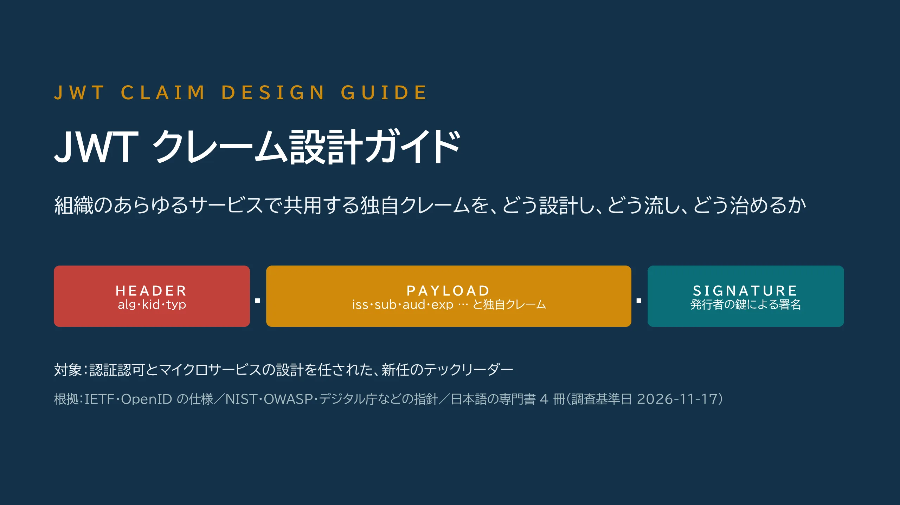
スライド 1 のテキストと解説（ID: p00-title）
本資料は、認証認可とマイクロサービスの設計を任された新任のテックリーダーに向けて、JWT に載せる独自クレームの設計を解説します。主題は、OpenID Connect や OAuth の標準クレームそのものではなく、組織のあらゆるサービスで共用する独自のクレームを、どう設計し、どう流し、どう治めるかです。ただし、標準のクレームと、各社の IdP が既に出しているクレームを知らないと、同じ意味のクレームを独自に作ったり、名前を衝突させたりします。そのため前半で、既にあるクレームの地図と、4 つの IdP の実際を厚めに扱います。内容は、IETF と OpenID Foundation の仕様、NIST・OWASP・デジタル庁などの公的な指針、日本語の専門書 4 冊を根拠にしています。調査の基準日は 2026 年 11 月 17 日です。
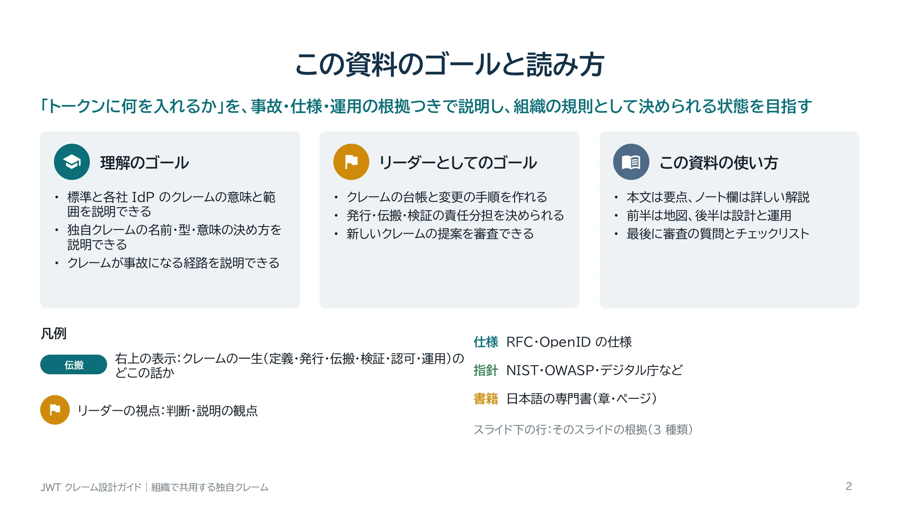
スライド 2 のテキストと解説（ID: p00-goals-and-how-to-read）
ゴールは、トークンに載せる属性を、自分の言葉と根拠で説明できることです。どのクレームを使い、どれを独自に足し、どれを載せずに都度問い合わせるか。その判断を、事故の例、仕様、運用の制約から説明できるようにします。各スライドの右上の 6 つの表示は、その話題がクレームの一生のどこに関わるかを示します。定義はクレームの名前・型・意味を決めること、発行はトークンに入れること、伝搬はサービス間で渡すこと、検証は受け取った側が確かめること、認可はクレームを使って判断すること、運用は変更・失効・監査です。各スライドの下の行は根拠で、仕様、公的な指針、日本語の書籍の 3 種類を色で分けています。本文は要点だけを書き、詳しい説明はノート欄に書いています。
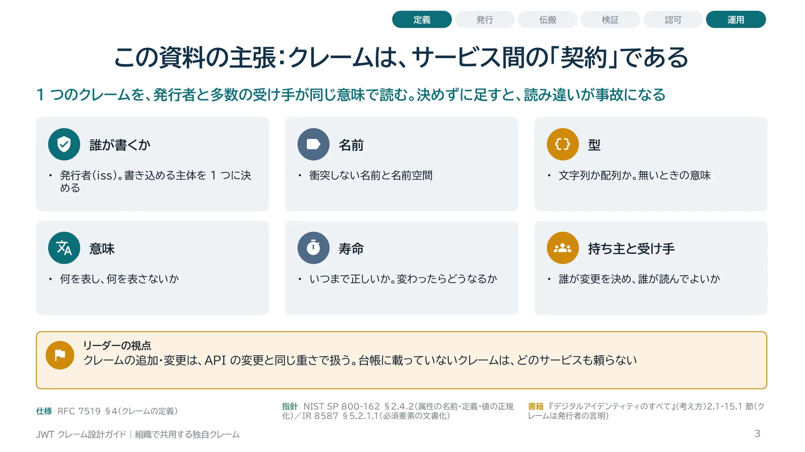
スライド 3 のテキストと解説（ID: p00-claims-are-contracts）
この資料の中心の主張です。JWT のクレームは、発行者が「この主体について、これが正しい」と述べた言明です。受け手は、トークンを持ってきた相手ではなく、発行者を信頼して、その言明を受け入れます。組織で共用する独自クレームは、1 人の発行者が書き、多数のサービスが読みます。つまり、サービス間の契約です。契約である以上、6 つのことを決めておく必要があります。誰が書くのか、名前は何か、型は何か、何を意味し何を意味しないのか、いつまで正しいのか、誰が持ち主で、誰が読んでよいのか。どれかを決めずにクレームを足すと、受け手ごとに解釈がずれ、そのずれが権限の取り違えや情報の漏えいになります。トークンの中身を変えることは、API を変えることと同じ重さで扱うべきだ、という指摘もあります。
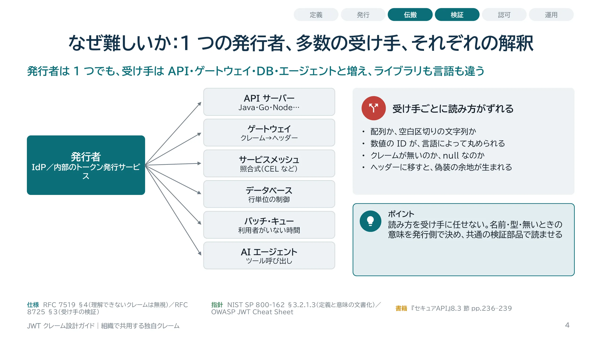
スライド 4 のテキストと解説（ID: p00-why-hard）
独自クレームが難しいのは、書き手と読み手の数が釣り合わないからです。IdP や内部のトークン発行サービスは 1 つでも、受け手は API サーバー、API ゲートウェイ、サービスメッシュ、データベースの行単位の制御、バッチ、AI エージェントのツールと増えていきます。受け手ごとに言語もライブラリも違います。たとえば、配列のクレームを、ある受け手は配列として、別の受け手は空白区切りの文字列として読むかもしれません。ゲートウェイがクレームを HTTP ヘッダーに移すと、ヘッダーの扱いの違いも加わります。どれか 1 つの受け手が誤って読むだけで、その受け手の先にあるデータが危険にさらされます。だから、クレームの意味と型は、受け手に任せず、発行側で契約として決めておく必要があります。
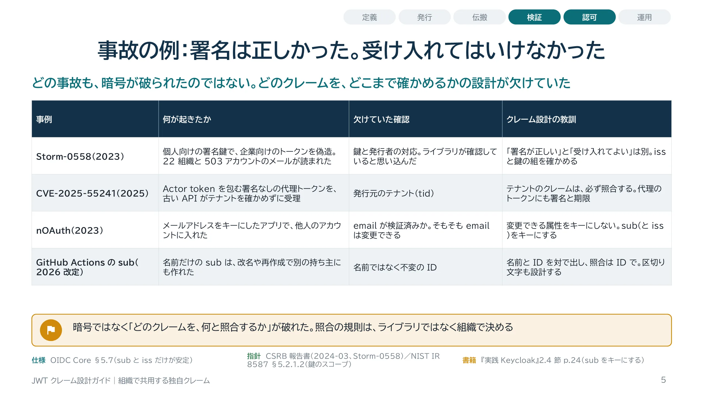
スライド 5 のテキストと解説（ID: p00-incident-signature-valid）
クレームの設計と検証の欠落が事故になった例です。Storm-0558 は 2023 年に、個人向けアカウントの署名鍵で企業向けのトークンが偽造され、22 の組織と個人 503 のアカウントのメールが読まれた事件です。米国のサイバー安全審査委員会の報告書によると、鍵の一覧を公開する共通の仕組みに個人向けと企業向けの鍵が並んでいたのに、SDK がその区別を検証しておらず、アプリの開発者はライブラリが検証していると思い込んでいました。CVE-2025-55241 は、Entra ID のサービス間で使われる Actor token を包んだ、署名のない代理用のトークンを、古い API が発行元のテナントを確かめずに受け入れていた問題です。Actor token そのものは Microsoft が署名しています。nOAuth は 2023 年に、変更できるメールアドレスのクレームを利用者のキーにしていたアプリで、アカウントが乗っ取れた問題です。GitHub Actions のトークンでは、名前だけで作った sub が、リポジトリの改名や再作成で別の持ち主にも作れてしまうため、2026 年 7 月 15 日以降に作成、改名、移譲したリポジトリでは、数値の ID を含む形になりました。既存のリポジトリは、選択して切り替えます。4 つとも、署名は正しく、問題はどのクレームを何と照合するかでした。
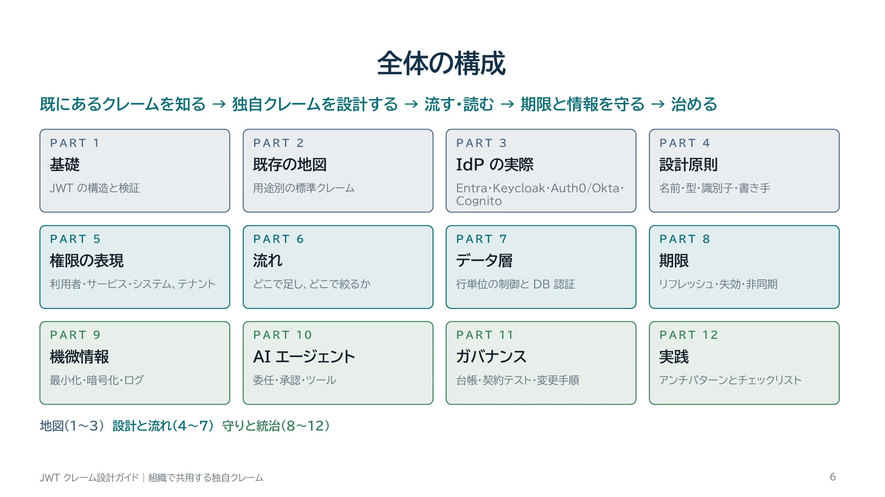
スライド 6 のテキストと解説（ID: p00-structure）
導入のあと、全体は 12 の Part に分かれます。Part 1 で JWT の構造と検証の基本を押さえ、Part 2 と 3 で、標準のクレームと 4 つの IdP が既に出しているクレームを、用途ごとに整理します。ここまでが、独自クレームを作る前に知っておくべき地図です。Part 4 から本題で、独自クレームの設計原則、権限の表し方、サービス間の流れでどこで足しどこで絞るか、データ層での使い方を扱います。Part 8 と 9 で、有効期限と、機微な情報の扱いを、Part 10 で AI エージェントを扱います。最後に、クレームを組織で治めるためのガバナンスと、テックリーダーの実践をまとめます。
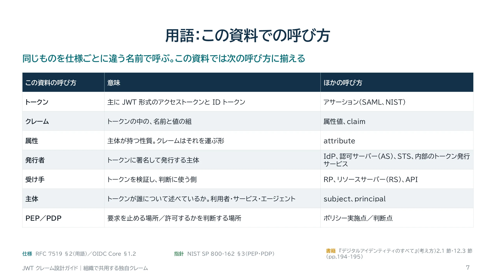
スライド 7 のテキストと解説（ID: p00-terminology）
用語を揃えます。トークンは、この資料では主に JWT 形式のアクセストークンと ID トークンを指します。クレームは、トークンの中身の名前と値の組です。属性は、主体が持つ性質そのもので、クレームはそれを運ぶ形です。発行者は、トークンに署名して発行する主体で、IdP、OAuth の認可サーバー、内部のトークン発行サービスがこれに当たります。受け手は、トークンを受け取って検証し、判断に使う側で、OpenID Connect では RP、OAuth ではリソースサーバーと呼びます。主体は、トークンが誰について述べているかで、利用者だけでなく、サービスや AI エージェントも主体になります。PEP と PDP は認可の役割で、PEP は要求を止めたり通したりする場所、PDP は許可するかを判断する場所です。
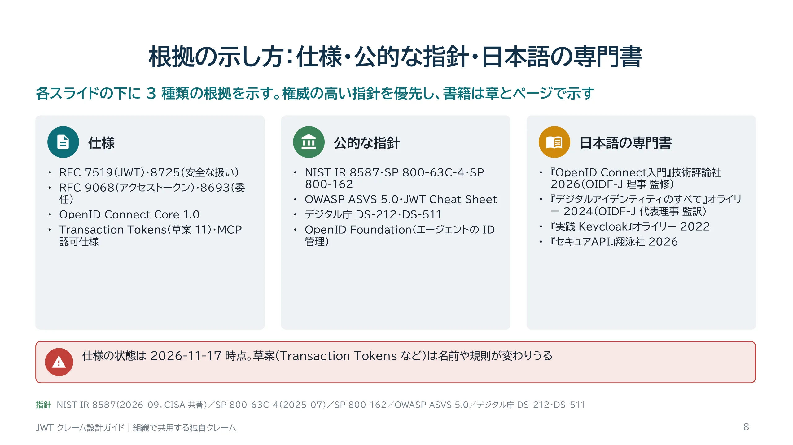
スライド 8 のテキストと解説（ID: p00-evidence-types）
この資料の内容が、どの文書に基づくかを示します。仕様は、IETF の RFC と OpenID Foundation の仕様です。公的な指針は、米国の NIST、国際的な非営利団体の OWASP と OpenID Foundation、日本のデジタル庁などの文書です。とくに、NIST が 2026 年 9 月に CISA と共同で出した IR 8587 は、トークンの必須要素の文書化、1 時間以内の有効期間、宛先のないトークンの拒否、トークンと個人情報をログに残さないこと、AI エージェントへの適用を定めており、多くのスライドの根拠になります。日本語の書籍は 4 冊で、章・節・印刷ページで示します。『デジタルアイデンティティのすべて』は概念の書籍で、JWT の実装を扱っていないため、この本は「考え方に沿う」という形で引きます。『実践 Keycloak』の日本語版は Keycloak 18 が前提で、現行版と違う記述は使っていません。
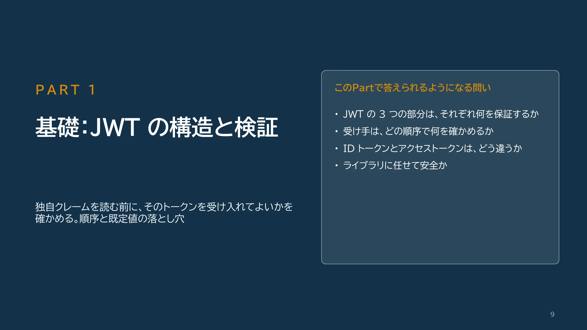
スライド 9 のテキストと解説（ID: p01-part）
Part 1 は基礎です。独自クレームの中身を読む前に、そのトークンそのものを受け入れてよいかを確かめる必要があります。署名、発行者、宛先、有効期限、種類の確認です。この Part では、JWT の構造、検証の順序、ヘッダーの危険なパラメータ、署名鍵のローテーション、クライアントが作る JWT、ID トークンとアクセストークンの違い、自己完結型と参照型の違い、ライブラリの既定値の落とし穴、代表的な攻撃を扱います。
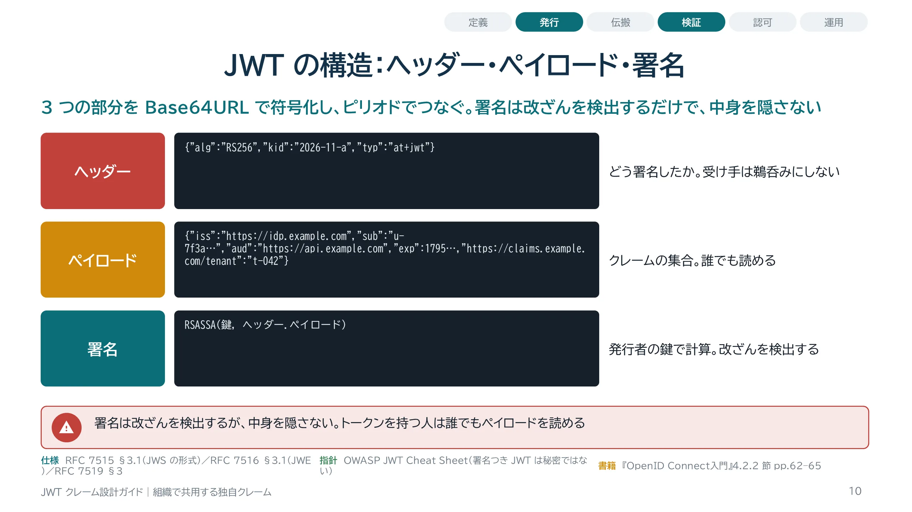
スライド 10 のテキストと解説（ID: p01-jwt-structure）
JWT は、ヘッダー、ペイロード、署名の 3 つの部分を、それぞれ Base64URL で符号化し、ピリオドでつないだ文字列です。ヘッダーには、署名のアルゴリズム（alg）や、どの鍵で署名したかのヒント（kid）、トークンの種類（typ）が入ります。ペイロードが、クレームの集合です。署名は、ヘッダーとペイロードに対して発行者の鍵で計算した値で、受け手は発行者の公開鍵で、改ざんされていないことを確かめます。重要なのは、署名は中身を隠さないことです。Base64URL は暗号ではないので、トークンを手にした人は誰でもペイロードを読めます。秘密にしたい情報は、署名つきの JWT（JWS）には入れません。暗号化が必要なら、JWE という別の形式を使います。JWS はピリオドで区切られた部分が 3 つ、JWE は 5 つなので、形でも区別できます。
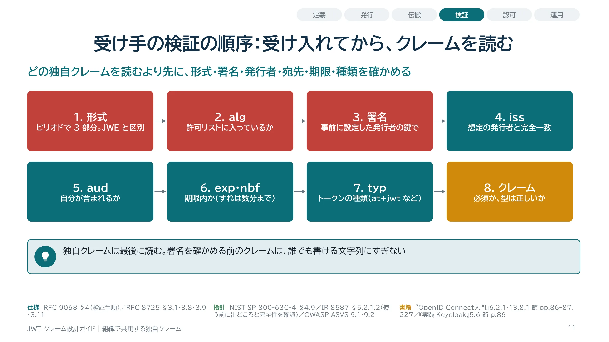
スライド 11 のテキストと解説（ID: p01-validation-order）
受け手がトークンを受け取ったときの検証の順序です。この図は、RFC 9068 §4 が JWT 形式のアクセストークンに求める確認を、この資料の順序で並べたものです。RFC では typ を最初に確かめます。まず、トークンの形が正しいかを確かめます。次に、ヘッダーの alg が自分の許可したアルゴリズムの一覧に入っているかを確かめ、発行者の鍵で署名を検証します。鍵は、ヘッダーの中の URL ではなく、事前に設定した発行者の鍵の一覧から取ります。次に、iss が想定した発行者と完全に一致するか、aud に自分が含まれるか、exp を過ぎていないかを確かめます。typ でトークンの種類を確かめるのは、ID トークンなど別の目的のトークンを受け入れないためです。ここまで通って初めて、独自クレームを読みます。読むときも、必須のクレームがあるか、型が想定どおりかを確かめます。順序を逆にして、署名を確かめる前にクレームを読む実装は、偽造されたクレームで判断することになります。
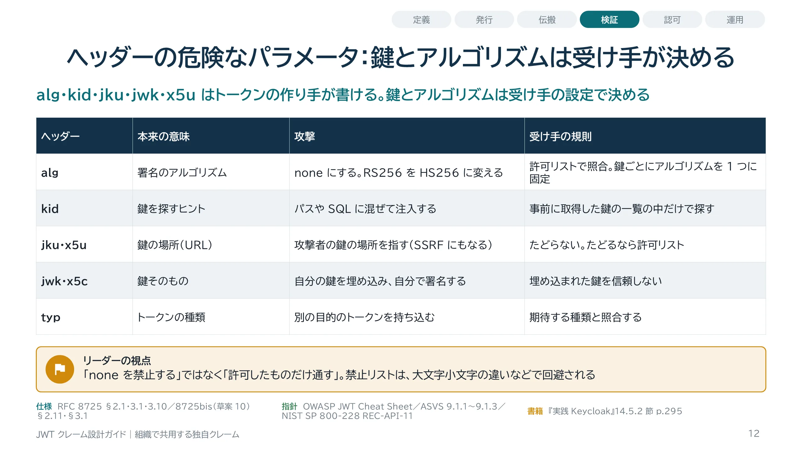
スライド 12 のテキストと解説（ID: p01-dangerous-header-params）
JWT のヘッダーは、トークンの作り手が自由に書けます。つまり、攻撃者も書けます。alg を none にすれば署名なしを主張できますし、公開鍵で署名する RS256 を、共有の秘密鍵で署名する HS256 に書き換えれば、公開鍵を秘密鍵として使わせる攻撃になります。kid は鍵を探すためのヒントですが、これをファイルのパスやデータベースの検索にそのまま使うと、パスの改ざんや SQL インジェクションの入口になります。jku や x5u は鍵の場所を示す URL で、これをたどると、攻撃者の用意した鍵で検証することになります。jwk はヘッダーに公開鍵そのものを埋め込むもので、これを信頼すると、誰でも自分の鍵で署名したトークンを通せます。原則は、鍵とアルゴリズムは受け手の設定で決め、ヘッダーの値は、許可リストと照合するためのヒントとしてだけ使うことです。RFC 8725 の改訂版の草案では、none を禁止リストで弾く実装が、大文字小文字を変えた none で回避された事例を挙げ、許可リストを使うよう求めています。
スライド 13 のテキストと解説（ID: p01-key-rotation-jwks）
署名鍵は定期的に、また緊急時にはすぐに入れ替わります。受け手がこれに追従できないと、正しいトークンを拒否する障害になります。OpenID Connect Core の §10.1.1 は、ローテーションの方法を次のように示しています。署名する側は、鍵を jwks_uri の JWK Set に公開し、ヘッダーの kid で、どの鍵で署名したかを示します。新しい鍵は定期的に JWK Set に足し、いつ使い始めるかは署名する側が決めます。受け手は、知らない kid を見たら、jwks_uri から鍵を取り直します。使わなくなった鍵も、しばらくは JWK Set に残すべきとされています。図の 4 つの手順は、この記述と、Okta が新しい鍵をローテーションの数週間前に公開していることをもとに、筆者が並べたものです。受け手の規則は表のとおりです。鍵は、設定した発行者のメタデータの jwks_uri から取ります。ヘッダーの jku や x5u をそのままたどると、SSRF の入口になります。RFC 8725 §3.10 は、URL を許可リストと照合するなどして防ぐべきとしています。また §3.8 は、使った鍵がその発行者のものであることを確かめるよう求めています。キャッシュの具体例として、Microsoft は、鍵を kid ごとにキャッシュし、寿命を 24 時間、更新を 1 時間ごとにするアルゴリズムを示しています。知らない鍵のトークンが来たら取り直しますが、取り直しは 5 分より頻繁にしません。取り直しに失敗したときは、最後に取れた鍵で動き続けます。取り直しに下限を置くのは、でたらめな kid を送られるたびに鍵を取りに行くと、受け手と IdP の両方が負荷で倒れるからです。Okta は、鍵のローテーションを今は年に 4 回行っていて、この頻度は予告なく変わりうるとしています。公開鍵をコードに埋め込むと、ローテーションのたびに壊れます。最後に、古い鍵を JWK Set から外すと、その鍵で署名したトークンは、exp の前でも検証できなくなります。外すのは、その鍵で署名した最も長い寿命のトークンが切れてからにします。発行者の側の規則として、NIST SP 800-63C-4 は鍵のローテーションの手順を事前に取り決めておくよう求め、CSRB の報告書は自動化した頻繁なローテーションを参考の慣行に挙げています。
スライド 14 のテキストと解説（ID: p01-client-made-jwts）
JWT は IdP だけが作るものではありません。クライアントが自分で署名して送る JWT が 3 種類あります。1 つ目は、クライアントの認証に使う assertion で、private_key_jwt と呼ばれる方式です。RFC 7523 §3 と OpenID Connect Core §9 の形で、iss と sub はクライアント ID、aud は認可サーバーです。2026 年 11 月の RFC 10070 は、この aud を認可サーバーの issuer の値だけにするよう改めました。トークンエンドポイントの URL を aud にしてはならず、認可サーバーは、自分の issuer だけを aud に持たない JWT を拒否しなければなりません。typ は client-authentication+jwt にするよう推奨していますが、typ の無いものを拒否することは推奨していません。既存のクライアントが壊れるからです。なお、OpenID Connect Core §9 は今も aud をトークンエンドポイントの URL にすべきと書いていますが、RFC 10070 が改めたのは RFC 7523 などの側で、OpenID Connect Core ではありません。新しく作るなら、aud は issuer にしておきます。2 つ目は、JAR、RFC 9101 の Request Object です。認可要求のパラメータを JWT のクレームに入れて署名し、ブラウザを経由しても改ざんされないようにします。署名は必須で、iss と aud を入れるべきとされ、aud は認可サーバーの issuer です。認可サーバーは、Request Object の中のパラメータだけを使います。3 つ目は、RFC 9449 の DPoP の proof です。要求のたびにクライアントが作り、ヘッダーの typ は dpop+jwt、jwk に公開鍵を入れます。クレームは jti、htm、htu、iat で、アクセストークンと一緒に送るときは ath、サーバーが nonce を求めたときは nonce も入れます。§11.1 は、サーバーが proof を作成から限られた時間だけ受け入れるよう求め、その間の jti を覚えて再送を拒む方法を示しています。3 つとも、受け手は認可サーバーかリソースサーバーです。組織のサービスが読むものではないので、組織の独自クレームを載せる場所にはしない、というのが筆者の推奨です。また、同じ鍵で署名した別の種類の JWT を取り違えないよう、種類ごとに検証の規則を分けます。RFC 8725 は、明示的な型付けと、互いに受け入れない検証の規則を求めています。
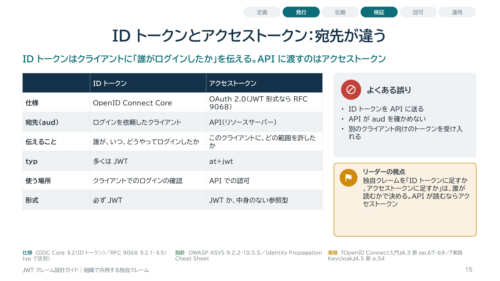
スライド 15 のテキストと解説（ID: p01-id-token-vs-access-token）
ID トークンとアクセストークンは、どちらも JWT で、見た目もよく似ていますが、宛先が違います。ID トークンは OpenID Connect のトークンで、ログインを依頼したクライアントに「誰が、いつ、どうやってログインしたか」を伝えます。aud はクライアント自身です。アクセストークンは OAuth のトークンで、API などのリソースサーバーに「このクライアントに、この範囲の操作を許した」ことを伝えます。aud は API です。ID トークンを API に送って受け入れさせる設計は誤りです。宛先が違うので、API が aud を正しく検証していれば拒否されますが、検証が甘いと、別のクライアント向けに発行されたトークンでも API が通してしまいます。RFC 9068 は、アクセストークンの typ を at+jwt にして、ID トークンと区別することを求めています。Auth0 の PHP の SDK では、ID トークンをアクセストークンとして受け入れうる脆弱性が 2025 年に報告されています。
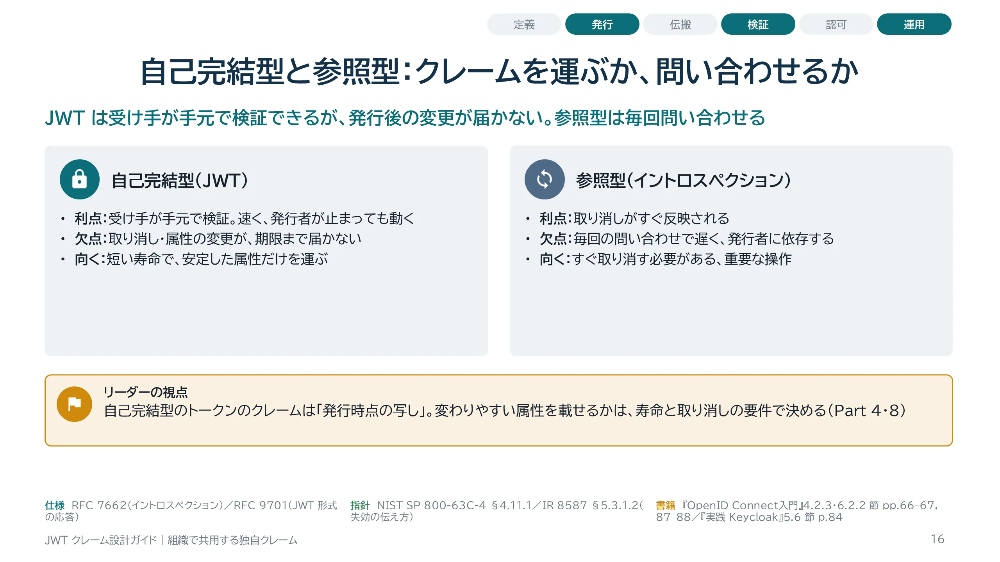
スライド 16 のテキストと解説（ID: p01-self-contained-vs-reference）
アクセストークンには、2 つの形があります。自己完結型は JWT で、クレームがトークンの中に入っています。受け手は発行者の公開鍵だけで検証でき、発行者に問い合わせる必要がありません。速く、発行者が止まっても動きます。その代わり、発行後に権限が取り消されたり、属性が変わったりしても、トークンの有効期限が切れるまでは古いクレームのままです。参照型は、中身を持たない文字列で、受け手は毎回、発行者のイントロスペクションのエンドポイントに問い合わせて、有効かどうかと中身を受け取ります。取り消しがすぐ反映されますが、問い合わせの分だけ遅く、発行者に依存します。独自クレームの設計では、この違いが効いてきます。自己完結型のトークンに載せたクレームは、発行時点の写しです。変わりやすい属性を載せると、変わった後も古い値で判断され続けます。
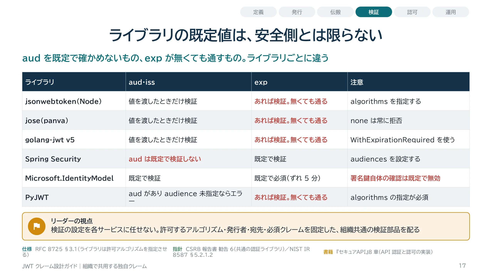
スライド 17 のテキストと解説（ID: p01-library-defaults）
JWT の検証はライブラリに任せることが多いですが、既定値はライブラリごとに違い、安全側とは限りません。Node.js の jsonwebtoken や panva の jose、Go の golang-jwt は、aud や iss を、呼び出し側が値を渡したときだけ検証します。渡し忘れると、何も確かめずに通ります。Spring Security のリソースサーバーは、既定では aud を検証しません。exp は、jsonwebtoken、jose、PyJWT、golang-jwt の第 5 版のどれも、あれば検証しますが、無いトークンも既定で受け入れます。必須にするには、PyJWT の require、jose の requiredClaims、golang-jwt の WithExpirationRequired のような指定が要ります。.NET の Microsoft.IdentityModel は aud、iss、署名を既定で検証し、exp も既定で必須ですが、署名鍵そのものの妥当性の確認（ValidateIssuerSigningKey）は既定で無効で、時刻のずれは 5 分まで許します。PyJWT は、aud を含むトークンを audience を指定せずに検証すると、エラーにします。Storm-0558 の事件でも、アプリの開発者は、ライブラリが完全に検証していると思い込んでいました。組織としては、検証の設定を各サービスに任せず、共通の検証部品を用意して、その中で許可するアルゴリズム、発行者、宛先、必須のクレームを固定します。
スライド 18 のテキストと解説（ID: p01-attack-patterns）
JWT への代表的な攻撃を、どのクレームやヘッダーの確認が抜けていたかで整理します。alg の none や、アルゴリズムの混同は、ヘッダーを信頼したことが原因です。aud を確かめないと、別のサービス向けのトークンを差し替えられます。マルチテナントで iss やテナントのクレームを確かめないと、別のテナントのトークンが通ります。typ を確かめないと、ID トークンや別の目的のトークンを持ち込まれます。exp を確かめなかったり、時刻のずれを大きく許したりすると、古いトークンが使い続けられます。重複したクレームや、JSON の解釈の違いを突く攻撃もあります。どれも、暗号が破られたのではなく、確かめるべきクレームを確かめなかったことが原因です。独自クレームも、同じ経路で狙われます。テナントや権限を表す独自クレームを、署名を確かめる前に読んだり、別の発行者が書いた同名のクレームを信じたりすると、同じ種類の事故になります。
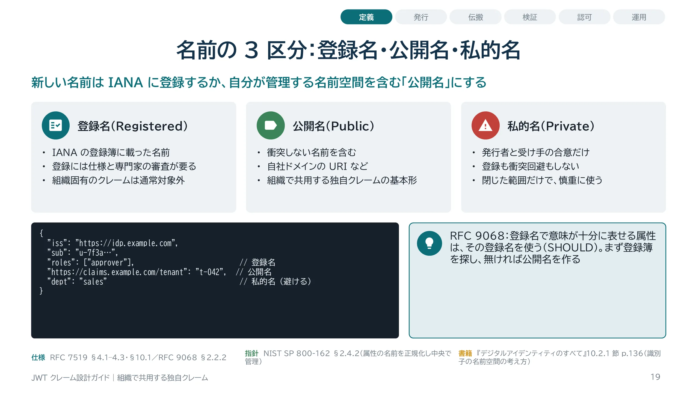
スライド 19 のテキストと解説（ID: p02-part）
Part 2 は、既に存在するクレームの地図です。独自クレームを設計する前に、同じ意味のクレームが標準や IdP に既にないかを知っておく必要があります。知らずに作ると、同じ意味のクレームが二重にできたり、標準の名前と衝突したりします。この Part では、RFC 7519 の登録クレームと名前の 3 区分から始め、利用者の識別、テナント、役割、権限、認証の強さ、委任など、用途ごとに既存のクレームを見ていきます。それぞれについて、何を意味し、何を意味しないか、そして独自クレームが正当化される隙間はどこかを整理します。最後に、標準の登録簿にない用途、SAML の属性との対応、独自クレームを作る前の確認手順を扱います。
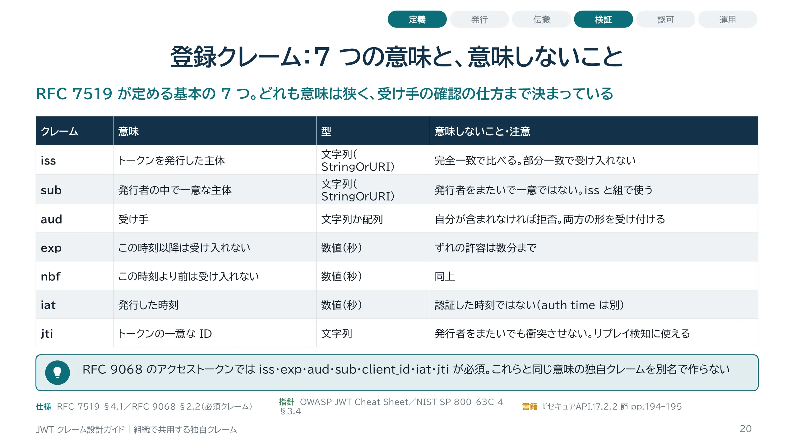
スライド 20 のテキストと解説（ID: p02-registered-claims）
RFC 7519 は、7 つのクレームを登録クレームとして定めています。iss は発行者、sub は主体、aud は受け手、exp・nbf・iat は時刻、jti はトークンの一意な ID です。大事なのは、それぞれの意味が狭いことです。たとえば sub は「発行者の中で」一意な主体であって、発行者をまたいで一意ではありません。だから sub は必ず iss と組で使います。aud は文字列の場合も配列の場合もあり、受け手は自分が含まれていなければ拒否しなければなりません。iat は発行時刻で、利用者が認証した時刻ではありません。認証した時刻は auth_time という別のクレームです。jti は複数の発行者の間でも衝突しないように割り当てる必要があります。RFC 9068 の JWT アクセストークンでは、この中の iss・exp・aud・sub・iat・jti に client_id を加えた 7 つが必須です。独自クレームで、これらと同じ意味のものを別名で作らないことが第一歩です。
スライド 21 のテキストと解説（ID: p02-name-categories）
RFC 7519 は、クレームの名前を 3 つに分けています。1 つ目は登録名で、IANA の JSON Web Token Claims の登録簿に載った名前です。登録には仕様が必要で、専門家が既存の機能との重複や汎用性を審査します。組織固有のクレームは、通常この対象になりません。2 つ目は公開名で、衝突しない名前です。自分が管理するドメインの URI のように、他者と重ならない名前空間を含めます。組織で共用する独自クレームは、基本的にこの形にします。3 つ目は私的名で、発行者と受け手が合意しただけの名前です。登録も衝突回避もしないので、衝突のおそれがあり、慎重に使うべきとされています。RFC 9068 は、アクセストークンについて、登録名で意味が十分に表せる属性はその登録名を使うべきだとしています。つまり、まず登録簿を探し、無ければ公開名を作る、という順序になります。
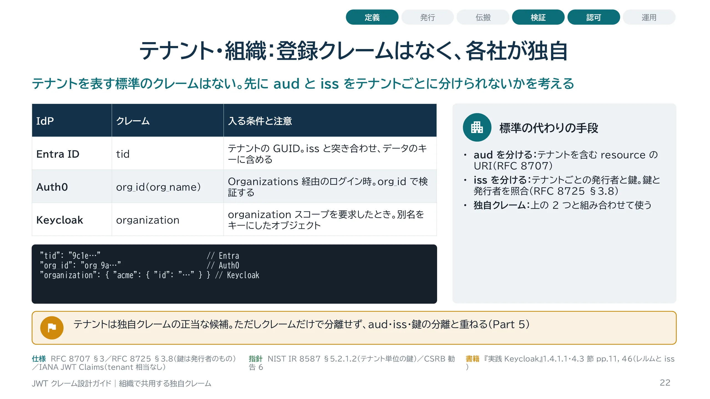
スライド 22 のテキストと解説（ID: p02-claims-by-purpose）
独自クレームが欲しくなる用途を 16 に分けて、既存のクレームを並べた地図です。緑の用途には、標準で登録されたクレームがあり、名前も意味も決まっています。青の用途は、名前は登録されているものの、値の語彙や構造の中身は使う側が決める必要があるものです。役割やグループの値、authorization_details の type などがこれにあたります。赤の用途には、汎用の登録クレームがありません。テナントと組織、同意と目的、端末や IP アドレスや場所です。これらは各社の IdP が独自のクレームを持っていて、名前も形もばらばらです。独自クレームが正当化されるのは、主にこの赤の領域と、青の領域の値の語彙です。緑の領域で独自クレームを作るのは、多くの場合、既存のクレームの作り直しになります。次のスライドから、用途ごとに中身を見ていきます。
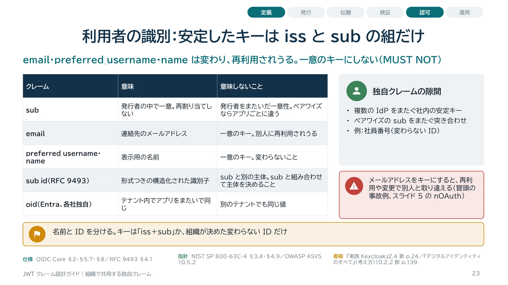
スライド 23 のテキストと解説（ID: p02-user-identifier）
利用者を識別するクレームです。OpenID Connect Core は、iss と sub の組だけが、受け手が安定した識別子として頼れる唯一のクレームだとしています。sub は発行者の中で一意で、別の人に再割り当てされません。一方、email、preferred_username、phone_number、name は、一意のキーとして使ってはならないと MUST NOT で定めています。発行者は、同じメールアドレスを時期を変えて別の利用者に使ってよいからです。もう 1 つの注意は、ペアワイズの sub です。クライアントごとに違う sub を出す方式で、Entra ID の sub もアプリごとに値が違います。Entra ではテナント内でアプリをまたいで同じ値になる oid を使います。構造を持つ識別子が必要なら、RFC 9493 の sub_id があります。sub と両方あるときは同じ主体を指し、両方を組み合わせて主体を決めてはいけません。独自クレームの隙間は、複数の IdP やペアワイズの sub をまたいで、社内で同じ人を指す安定したキー、たとえば社員番号のようなものです。
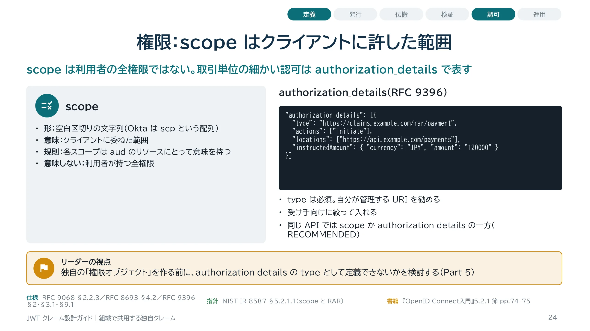
スライド 24 のテキストと解説（ID: p02-tenant-org）
テナントや組織を表すクレームは、IANA の登録簿にありません。tenant、organization、tid に相当する登録クレームは、2026 年 10 月 28 日版の登録簿でも見当たりません。そのため、各社の IdP が独自のクレームを持っています。Entra ID の tid はテナントの GUID で、マルチテナントでは iss と突き合わせて検証します。Auth0 は Organizations の機能でログインしたときに org_id を入れ、org_id で検証することを勧めています。Keycloak は organization スコープを要求すると organization クレームを出します。名前も形もばらばらです。標準の代わりの手段もあります。RFC 8707 は、マルチテナントの API ではテナントを含む resource の URI を使って aud を分けるよう勧めています。また RFC 8725 は、発行者を分けて検証規則を互いに排他にする戦略を挙げています。テナントは独自クレームの正当な候補ですが、テナントのクレームだけで分離するのではなく、aud や iss の分離と組み合わせます。
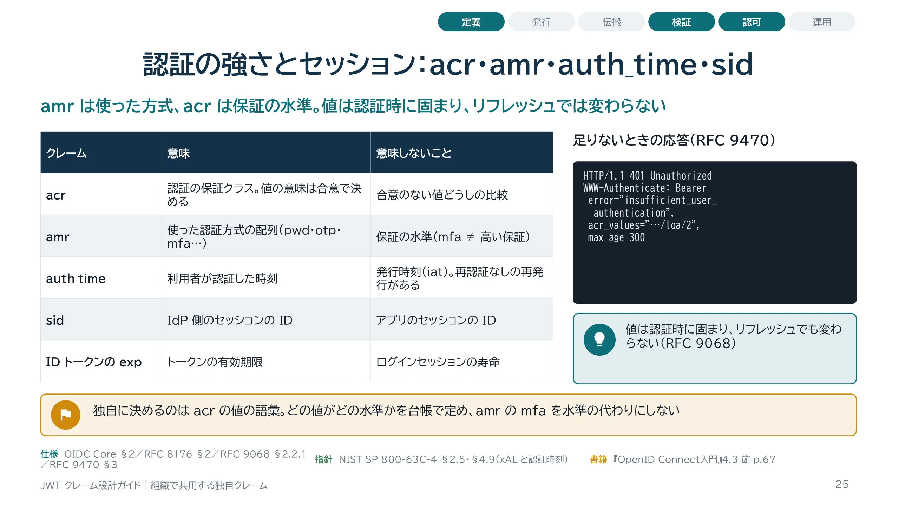
スライド 25 のテキストと解説（ID: p02-roles-groups-entitlements）
役割、グループ、資格については、RFC 9068 が、SCIM の RFC 7643 で定義された roles、groups、entitlements という名前を使うよう勧めています。名前は標準ですが、中身はほとんど決まっていません。groups は利用者が直接または入れ子で所属するグループで、認可のモデルは定義されていません。roles は利用者が何者かを表すラベル、entitlements は利用者が持つ権利で、どちらも語彙も構文も決まっていません。つまり、同じ admin という文字列でも、受け手によって意味が違いえます。ここが組織で決めるべき部分です。値の語彙を、URI の名前空間などで組織として定義します。SAML の世界では、eduPersonEntitlement が権利を URI で表す先例です。また、IdP によってクレームの位置も違います。Keycloak は realm_access や resource_access の中、Auth0 は permissions、Cognito は cognito:groups です。グループを全件載せるとトークンが大きくなる点にも注意が要ります。
スライド 26 のテキストと解説（ID: p02-scope）
権限を表すクレームです。scope は RFC 8693 で定義された、空白区切りの文字列です。RFC 9068 は、各スコープが aud の示すリソースにとって意味を持たなければならないとしています。ここでよくある誤解は、scope を利用者の権限の一覧だと思うことです。scope は、利用者がクライアントに委ねた範囲であって、利用者が持つ全権限ではありません。ある利用者が管理者であっても、クライアントに読み取りのスコープしか許していなければ、そのトークンでは読み取りしかできません。もっと細かい、取引単位の認可には、RFC 9396 の authorization_details があります。type が必須で、actions、locations などの共通の項目を持つオブジェクトの配列です。JWT のアクセストークンには、その受け手向けに絞った authorization_details を入れることが勧められています。独自の「権限オブジェクト」のクレームを作る前に、authorization_details の type として定義できないかを検討します。type には自分が管理する URI を使うことが勧められています。
スライド 27 のテキストと解説（ID: p02-auth-strength-session）
認証の強さとセッションのクレームです。acr は認証の保証クラスで、値の意味は当事者の間で合意しておく必要があります。amr は実際に使った認証方式の配列で、RFC 8176 が pwd、otp、mfa などの値を定めています。amr に mfa が入っていても、それは方式の事実であって、保証の水準を意味しません。水準を伝えるのは acr です。auth_time は利用者が認証した時刻で、トークンの発行時刻 iat とは別物です。再認証なしにトークンが再発行されることがあるからです。RFC 9068 では、これらの値は認可応答の時点で固まり、リフレッシュやトークン交換でも変わりません。sid は IdP 側のセッションの ID で、アプリのセッション ID ではありません。また、ID トークンの exp はログインセッションの寿命とは関係ありません。認証が足りないとき、API は RFC 9470 の insufficient_user_authentication で追加の認証を求められます。独自に決める部分は、組織の acr の値の語彙です。
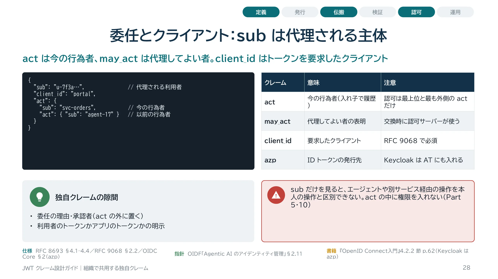
スライド 28 のテキストと解説（ID: p02-delegation-client）
委任とクライアントのクレームです。RFC 8693 のトークン交換で委任が起きると、トークンの最上位の sub は代理される主体、つまり利用者のままで、実際に行動している者は act の中に入ります。act は入れ子にでき、いちばん外側が今の行為者、内側ほど以前の行為者です。アクセス制御に使ってよいのは、最上位のクレームと、いちばん外側の act だけで、以前の行為者は参考情報です。act の中には識別のためのクレームだけを入れ、exp や aud のようなクレームは意味を持ちません。may_act は、ある者が代理の行為者になってよいという表明で、交換の際に認可サーバーが判断に使います。client_id はトークンを要求したクライアントで、RFC 9068 のアクセストークンでは必須です。azp は OpenID Connect の ID トークンのクレームで、Keycloak はアクセストークンにも azp を入れます。委任の理由や承認者は標準にないので独自の候補ですが、act の中に権限の情報を入れてはいけません。
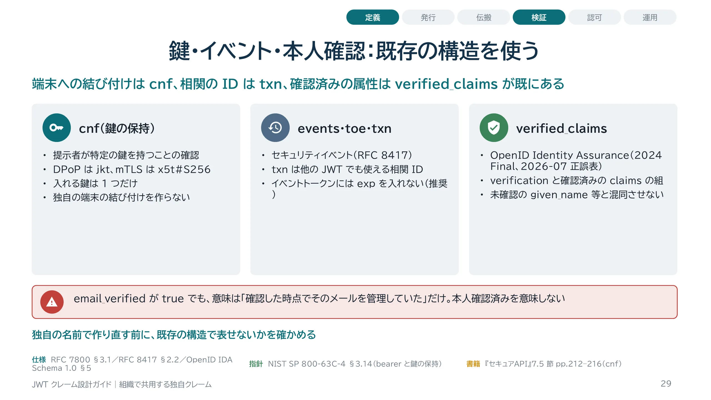
スライド 29 のテキストと解説（ID: p02-keys-events-identity-assurance）
独自クレームで作り直されやすい 3 つの領域です。1 つ目は鍵の保持です。RFC 7800 の cnf は、トークンを提示した者が特定の鍵を持っていることを確かめるためのクレームです。DPoP では鍵のサムプリントを jkt、mTLS では証明書のサムプリントを x5t#S256 として入れます。cnf には鍵を 1 つだけ入れます。独自の「端末への結び付け」のクレームを作る前に、cnf を使います。2 つ目はイベントと相関です。RFC 8417 のセキュリティイベントトークンは events、toe、txn を定めています。txn は関連する複数の JWT を相関させる ID で、イベントトークン以外の JWT でも使えます。3 つ目は本人確認済みの属性です。2024 年に Final になり、2026 年 7 月に最初の正誤表が承認された OpenID Identity Assurance の verified_claims は、確認の枠組みや方法を表す verification と、確認済みの claims を組で持ちます。目的は、確認済みの属性と未確認の属性を受け手が混同しないことです。email_verified は、確認した時点でそのメールを管理していたことしか意味しません。
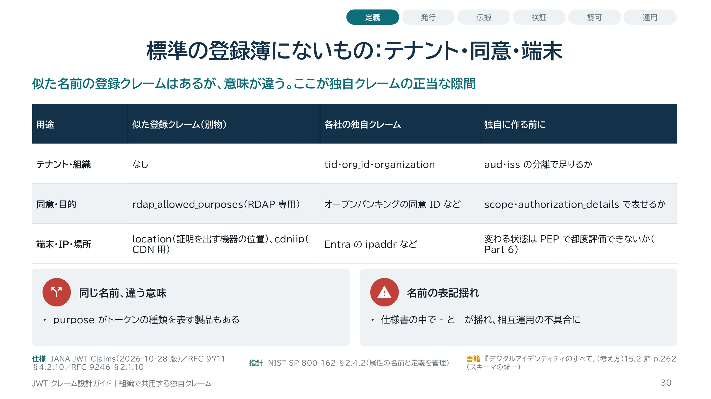
スライド 30 のテキストと解説（ID: p02-not-in-registry）
汎用の登録クレームがない用途を、改めて整理します。テナントと組織は、前に見たとおり各社が tid、org_id、organization という独自のクレームを持っています。同意と目的にも汎用の登録クレームはありません。rdap_allowed_purposes という登録名はありますが、RDAP という特定の用途のためのものです。同意の内容は、scope や authorization_details で表すのが標準の方法です。端末、IP アドレス、場所については、location という登録名がありますが、これは機器の証明を出す機器の位置で、利用者のログインの場所ではありません。cdniip も CDN の署名つき URI が有効な IP で、汎用のクライアント IP ではありません。名前が似ているからといって流用すると、意味の違うクレームになります。注意したいのは、同じ名前でも意味が違う例があることです。Curity の製品では purpose というクレームがトークンの種類を表します。また英国のオープンバンキングの仕様では、同じ ID の名前がハイフンとアンダースコアで揺れていて、誤記が相互運用の不具合になりえます。
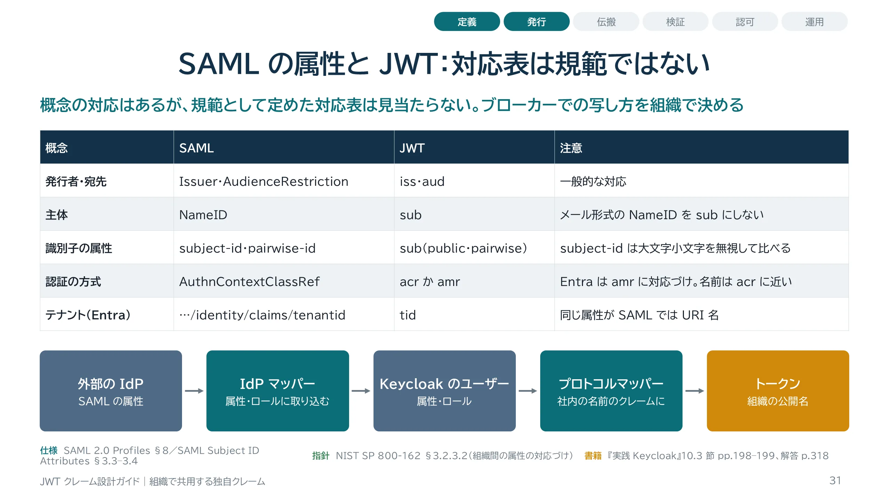
スライド 31 のテキストと解説（ID: p02-saml-attributes）
SAML から OpenID Connect に移行したり、外部の SAML の IdP をブローカーでつないだりすると、SAML の属性を JWT のクレームに写す必要が出てきます。概念の対応はおおむね明らかで、Issuer が iss、NameID が sub、AudienceRestriction が aud、NotOnOrAfter が exp にあたります。ただし、これを規範として定めた単一の標準は、本調査では見当たりませんでした。ずれの例があります。Entra ID は SAML の AuthnContextClassRef を amr に対応づけていますが、名前の上では OpenID Connect の acr に対応します。どちらに写すかは組織で決める必要があります。識別子にも注意が要ります。SAML の subject-id は大文字小文字を区別せずに比べますが、OpenID Connect の sub は区別します。また、メールアドレス形式の NameID をそのまま sub に写すと、メールを一意のキーにする状態を作ってしまいます。Keycloak では、IdP マッパーで外部の属性をいったん取り込み、プロトコルマッパーで社内の名前のクレームにする 2 段の写し方になります。
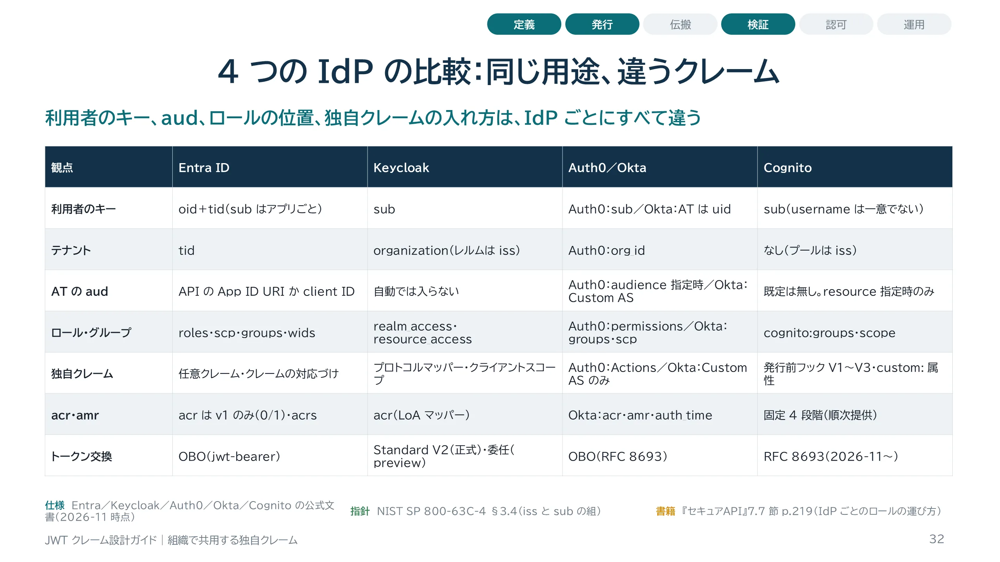
スライド 32 のテキストと解説（ID: p02-check-before-creating）
Part 2 のまとめとして、独自クレームを作る前に確認する手順を示します。まず IANA の JSON Web Token Claims の登録簿を探します。意味が合う登録名があれば、その名前を使います。次に、OpenID Connect、RFC 9068、RFC 9396 などの仕様に、拡張のための構造がないかを確かめます。authorization_details の type や、sub_id の format のように、名前ではなく値の中で拡張できる場合があります。3 つ目に、使っている IdP の文書を確かめます。IdP が既に出しているクレーム、予約された名前、衝突したときの挙動です。Auth0 のように、予約名と衝突した独自クレームが黙って外れる IdP もあります。4 つ目に、組織のクレームの台帳を確かめます。同じ意味のクレームが別の名前で既にないかです。ここまで探して無いときだけ、組織の名前空間の下に新しいクレームを作り、何を意味し、何を意味しないかを書き残します。名前や型の決め方は Part 4、台帳の運用は Part 11 で扱います。
スライド 33 のテキストと解説（ID: p03-part）
Part 3 では、Microsoft Entra ID、Keycloak、Auth0 と Okta、Amazon Cognito の 4 つの IdP が、実際にどんなクレームを出しているかを見ます。標準のクレームの名前を使っていても、IdP によって位置や形や意味が違います。たとえば sub は、Entra ID ではアプリごとに違う値になり、Okta のアクセストークンではログイン名になります。また、各社とも最近になって大きな変更を入れています。Cognito のトークン交換や、Keycloak のトークン交換の正式サポート、Auth0 の独自クレームの規則などです。古い記事や書籍の理解のままだと誤ります。内容は各社の公式文書を 2026 年 11 月 17 日時点で確認したものです。最後に、IdP ごとの違いを各サービスに持ち込まず、入口で吸収する考え方を示します。
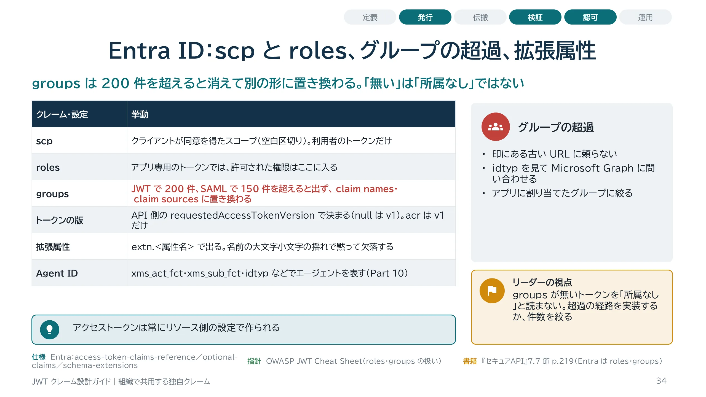
スライド 34 のテキストと解説（ID: p03-idp-comparison）
4 つの IdP を、7 つの観点で並べた表です。利用者の安定したキーは、Entra ID では oid と tid の組で、sub はアプリごとに違います。Okta はアクセストークンの sub がログイン名なので、uid を使います。テナントは、Entra ID の tid、Auth0 の org_id、Keycloak の organization と、それぞれ独自です。アクセストークンの aud も違います。Keycloak は自動では API を aud に入れず、Cognito は既定では aud 自体がありません。ロールやグループの位置もばらばらで、独自クレームの入れ方も、マッパー、Actions、発行前のフックと仕組みが違います。トークン交換は、どの IdP も RFC 8693 系の仕組みを持つようになりましたが、提供の段階が違います。この表から言えるのは、受け手のサービスが IdP ごとの読み方を持つと、IdP を足したり替えたりするたびに全サービスが変わる、ということです。この後、IdP ごとに詳しく見ていきます。
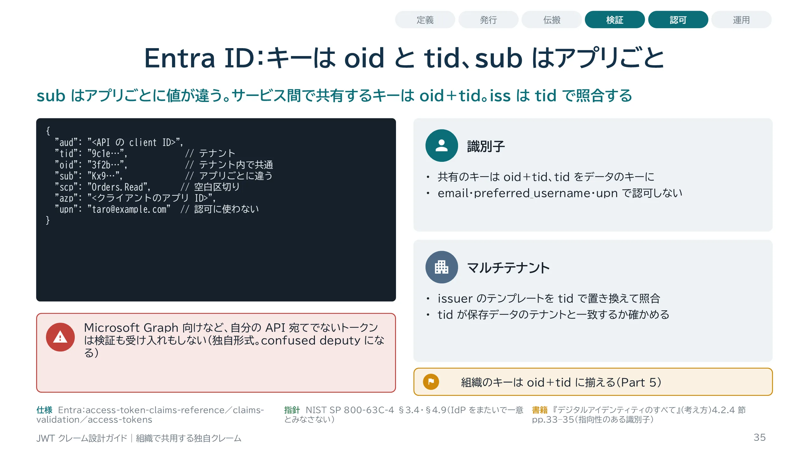
スライド 35 のテキストと解説（ID: p03-entra-oid-tid）
Microsoft Entra ID の識別子です。Entra ID の sub は不変で再利用されませんが、ペアワイズで、アプリごとに値が違います。同じ利用者でも、クライアントが違えば sub が違います。テナント内でアプリをまたいで同じになるのは oid で、テナントは tid です。Microsoft は、サービス間で共有するキーには oid と tid を使い、tid をデータのキーに含めるよう勧めています。email、preferred_username、unique_name で認可を判断してはならず、upn も変わることがあるので認可に使いません。マルチテナントのアプリでは、common などのメタデータの issuer が tenantid を含むテンプレートになっています。そのまま文字列で比べるのではなく、トークンの tid で置き換えてから完全一致で確かめます。もう 1 つ大事なのは、自分の API 宛てでないトークンを検証しないことです。Microsoft Graph 向けのトークンは独自の形式で、自分の API で検証も受け入れもしてはいけません。受け入れると、他人宛てのトークンで動く confused deputy になります。
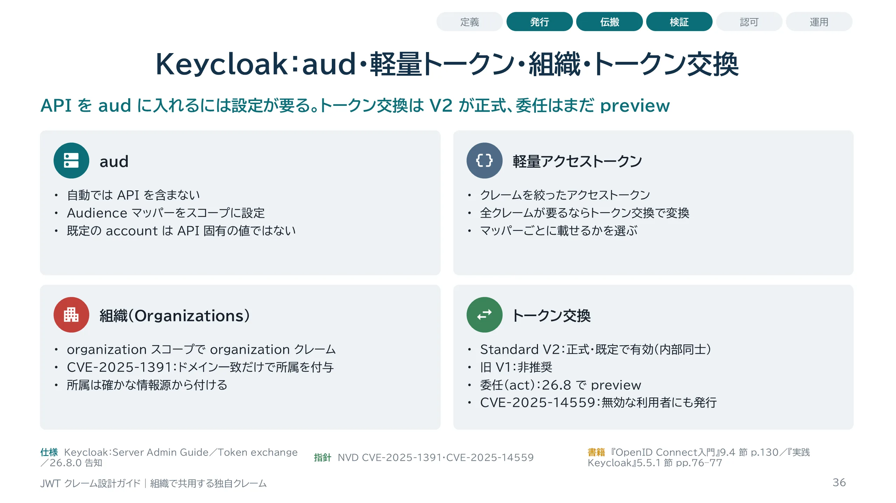
スライド 36 のテキストと解説（ID: p03-entra-scp-roles-groups）
Entra ID の認可に関わるクレームです。scp は、クライアントが同意を得たスコープを空白区切りで並べたもので、利用者のトークンだけに入ります。アプリ専用のトークンでは、許可された権限は roles に入ります。groups には注意が必要です。JWT では 200 件、SAML では 150 件を超えると groups が出なくなり、代わりに _claim_names と _claim_sources という超過の印が入ります。そこに書かれた URL は古い Azure AD Graph のものなので頼らず、idtyp でトークンの種類を見て Microsoft Graph に問い合わせます。groups が無いことを所属なしと読むと、判断を誤ります。大きな組織では、アプリに割り当てたグループだけを出す設定が勧められています。トークンの版は、呼んだエンドポイントではなく、API 側の requestedAccessTokenVersion で決まり、null は v1 扱いです。acr は v1 のトークンにしかありません。拡張属性は extn という接頭辞つきの名前で出ますが、名前の大文字小文字が揺れると黙って欠落します。AI エージェントは Agent ID 用のクレームで表されます。これは Part 10 で扱います。
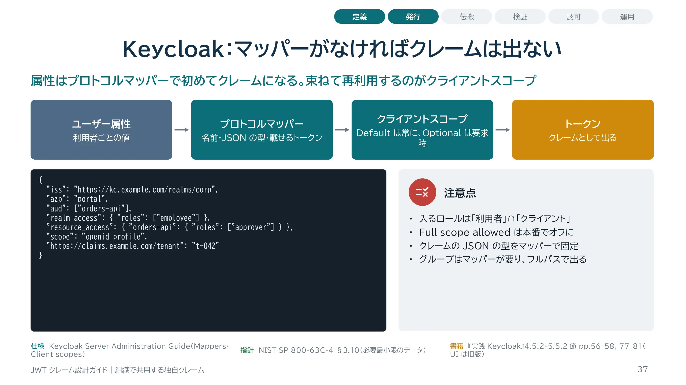
スライド 37 のテキストと解説（ID: p03-keycloak-mappers）
Keycloak では、利用者の属性を作っただけではトークンに出ません。プロトコルマッパーを設定して、初めてクレームになります。マッパーでは、クレームの名前、JSON の型、どのトークンに載せるかを指定します。マッパーを束ねて再利用する単位がクライアントスコープです。Default に入れたスコープは常に付き、Optional に入れたスコープはクライアントが要求したときだけ付きます。User Attribute のマッパーではクレームの JSON の型を選べるので、組織で型をそろえておきます。ロールは、レルムロールが realm_access、クライアントロールが resource_access の中に入ります。入るのは、利用者が持つロールと、クライアントが使ってよいロールの積集合です。既定では Full scope allowed がオンで全ロールが入るので、本番ではオフにして必要なロールだけにします。グループは Group Membership マッパーが必要で、フルパスで出ます。なお『実践 Keycloak』は Keycloak 18 が前提なので、画面の名前は今と違います。
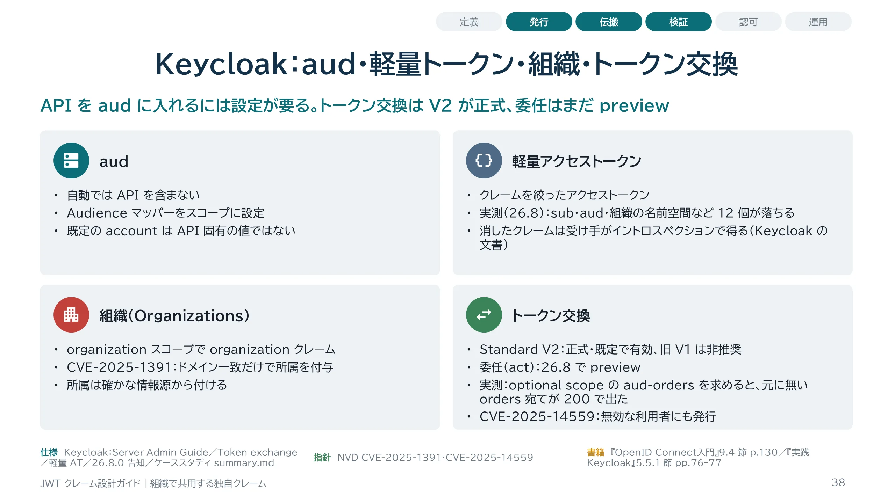
スライド 38 のテキストと解説（ID: p03-keycloak-aud-lightweight）
Keycloak の 4 つの論点です。1 つ目は aud です。Keycloak は自動では API を aud に入れません。Audience マッパーをクライアントスコープに設定するか、クライアントロールを持つクライアントを aud に足す Audience Resolve の仕組みを使います。既定で aud に入る account は、API 固有の値ではありません。『OpenID Connect入門』のサンプルも、本来は API 固有の値にすべきと断ったうえで、既定のままにしています。2 つ目は軽量アクセストークンです。クレームを絞ったアクセストークンで、Keycloak の文書では、軽量アクセストークンで消したクレームは、受け手がイントロスペクションで取得します。3 つ目は組織の機能で、organization スコープを要求すると organization クレームが出ます。ただし 2025 年に、メールのドメインが一致するだけで組織の所属を付けてしまう脆弱性が報告されました。4 つ目はトークン交換です。内部のトークン同士を交換する Standard Token Exchange V2 は正式サポートで既定で有効、旧 V1 は非推奨です。act を入れる委任は 26.8 で preview になりました。ケーススタディで Keycloak 26.8.0 を実際に動かすと、3 つのことが確かめられました。軽量アクセストークンでは、sub、aud、realm_access、組織の名前空間を含む 12 個のクレームが落ちました。標準のトークン交換では、交換するクライアント mcp-tools に optional scope として割り当てた aud-orders を要求すると、元のトークンに無い orders 宛て（aud は orders と account）のトークンが 200 で出ました。交換は範囲を絞るとは限りません。Keycloak の文書も、既定では交換で元に無いスコープと宛先を要求できると書いています。これは Part 10 で扱います。また、リフレッシュでは、変えた利用者属性と足したロールが新しいトークンに反映され、Revoke Refresh Token を有効にしたこのレルムでは、リフレッシュトークンも新しいものに替わりました。これは Part 8 で扱います。
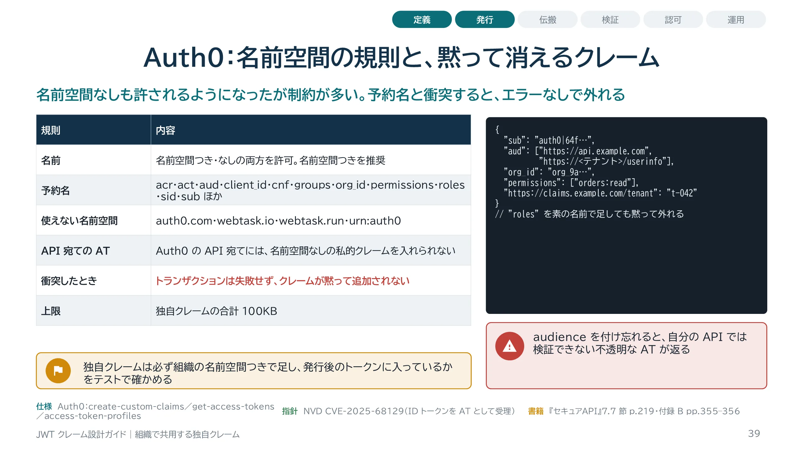
スライド 39 のテキストと解説（ID: p03-auth0-namespace）
Auth0 の独自クレームの規則は変わっています。以前は名前空間つきの名前が必須とされていましたが、現在は名前空間なしの名前も許されています。ただし制約が多く、Auth0 自身も、どうしても必要でない限り名前空間つきを使うよう勧めています。まず、予約された名前があります。acr、act、aud、client_id、cnf、groups、org_id、permissions、roles、sid、sub などで、roles や groups や permissions を素の名前で足すことはできません。名前空間にも、auth0.com、webtask.io、webtask.run のドメインと、urn:auth0 は使えません。Auth0 の API を宛先とするアクセストークンには、名前空間なしの私的なクレームを入れられません。そして最も注意が要るのは、衝突したときの挙動です。トランザクションは失敗せず、クレームが黙って追加されないだけです。独自クレームの合計は 100KB までです。また、audience を指定せずにトークンを要求すると、自分の API では検証できない不透明なアクセストークンが返ります。
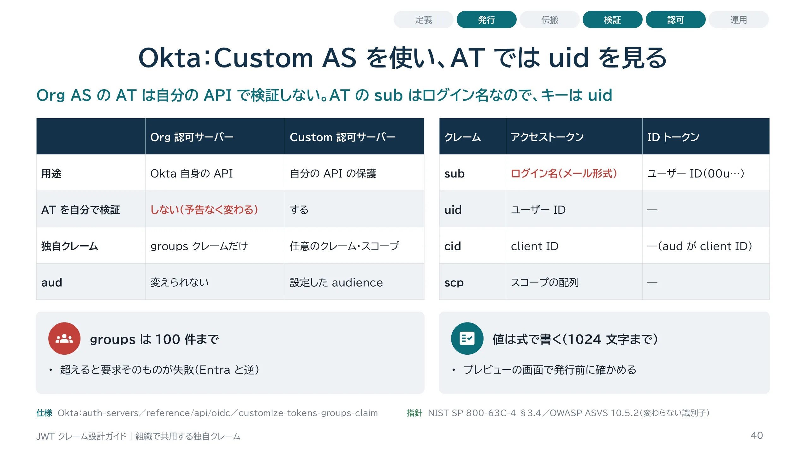
スライド 40 のテキストと解説（ID: p03-okta-custom-as）
Okta には 2 種類の認可サーバーがあります。Org 認可サーバーは Okta 自身の API のためのもので、そのアクセストークンは Okta だけが検証する前提です。内容は予告なく変わるので、自分の API で検証してはいけません。aud やクレームも変えられません。自分の API を守るには、Custom 認可サーバーを使います。独自クレームを自由に足せるのも Custom 認可サーバーだけです。次に識別子です。Okta のアクセストークンの sub は、ログイン名、多くはメール形式の文字列です。一方、ID トークンの sub は 00u で始まる Okta のユーザー ID です。アクセストークンで利用者を識別するには uid を使います。scp は付与されたスコープの配列で、Entra ID の空白区切りの文字列とは形が違います。groups は 100 件を超えると、要求そのものが失敗します。Entra ID の超過の挙動とは逆です。独自クレームの値は式で書き、式は 1024 文字までです。トークンのプレビューの画面で、発行前に結果を確かめられます。
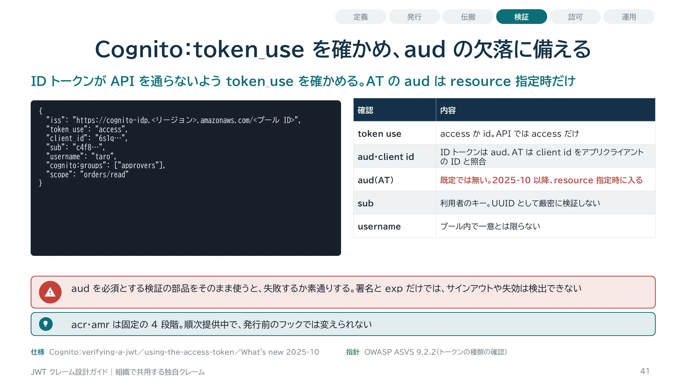
スライド 41 のテキストと解説（ID: p03-cognito-token-use）
Amazon Cognito のトークンを受け取るときの確認点です。Cognito の ID トークンとアクセストークンは、どちらも JWT で、token_use というクレームで種類を区別します。API でアクセストークンだけを受け入れるなら、token_use が access であることを必ず確かめます。確かめないと、ID トークンが API を通ってしまいます。次に宛先です。ID トークンでは aud が、アクセストークンでは client_id が、アプリクライアントの ID と一致することを確かめます。Cognito のアクセストークンには、既定では aud がありません。2025 年 10 月から、RFC 8707 の resource を指定して要求したときだけ aud が入るようになりました。aud を必須とする検証の部品をそのまま使うと、失敗するか、設定次第では素通りします。利用者のキーは sub です。username はプール内で一意とは限りません。sub は Cognito 独自の形式なので、UUID として厳密に形式を検証してはいけません。また、署名と exp の確認だけでは、サインアウトや失効を検出できません。
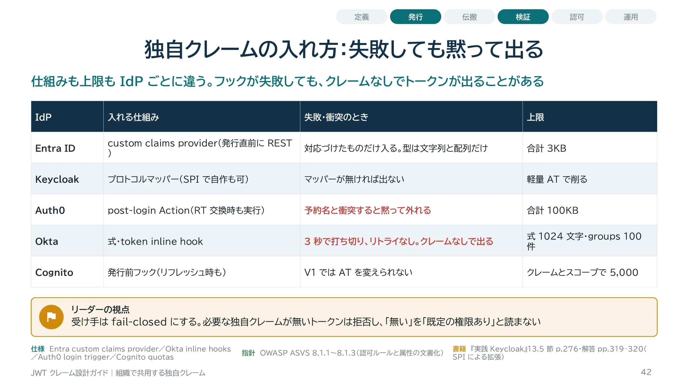
スライド 42 のテキストと解説（ID: p03-cognito-pre-token-hook）
Cognito で独自クレームを入れるのは、トークン発行前の Lambda のフックです。版によってできることが違います。V1 は ID トークンだけを変えられ、V2 では利用者のアクセストークンも、V3 では M2M、つまりクライアントクレデンシャルのアクセストークンも変えられます。V2 と V3 は Essentials か Plus のプランが必要です。sub、username、client_id、aud、acr、amr などは、フックでは変えられません。次に custom: 属性です。Cognito の独自の属性は custom: という接頭辞がつき、最大 50 個、値は 2048 文字までで、追加した後は削除も改名も型の変更もできません。そして重要なのは、読み取り専用にしない限り、利用者本人が書き換えられる場合があることです。custom:role のような属性を権限に使って昇格される問題が、研究で指摘されています。最後に、2026 年 11 月 12 日にトークン交換が追加されました。単一の aud に絞ったトークンを出し、actor token を付ければ act が入ります。付けなければ本人と区別できず、may_act は扱いません。
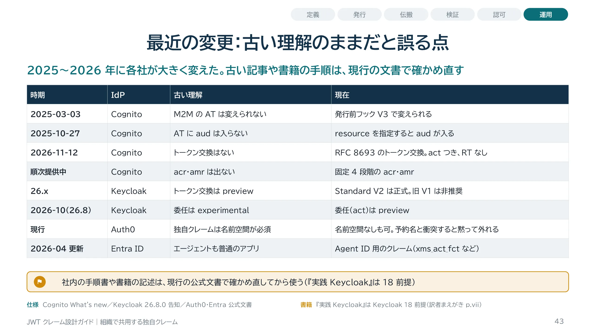
スライド 43 のテキストと解説（ID: p03-recent-changes）
最近の変更のうち、古い理解のままだと誤る点をまとめます。Cognito は変更が多く、2025 年 3 月に M2M のアクセストークンを発行前フックの V3 で変えられるようになり、10 月には resource を指定するとアクセストークンに aud が入るようになりました。2026 年 11 月 12 日には RFC 8693 のトークン交換が加わりました。acr と amr も順次提供されています。Keycloak は、内部のトークン同士を交換する Standard Token Exchange V2 が正式サポートになり、旧 V1 は非推奨です。2026 年 10 月の 26.8 では、act を使う委任が preview になりました。『実践 Keycloak』は Keycloak 18 を前提にしているので、画面の名前やトークン交換、組織の機能、軽量アクセストークンの記述は現行と違います。Auth0 は、独自クレームに名前空間なしの名前も許すようになりましたが、制約と黙った欠落があります。Entra ID は、AI エージェントを表す Agent ID 用のクレームを文書化しています。いずれも、調査日時点の公式文書を正としてください。
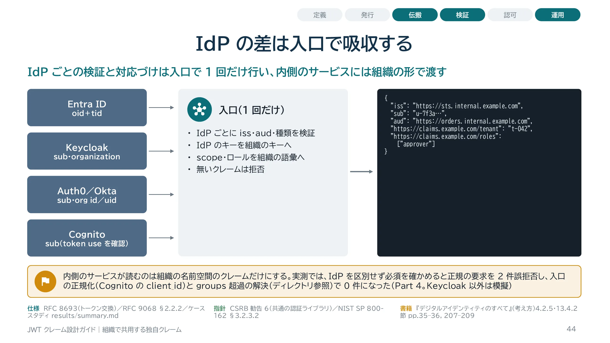
スライド 44 のテキストと解説（ID: p03-custom-claim-injection）
各 IdP で独自クレームを入れる仕組みと、失敗したときの挙動、上限をまとめます。Entra ID の custom claims provider は、トークンを発行する直前に外部の REST API を呼びますが、返したクレームのうち、クレームの対応づけで明示したものだけが入ります。型は文字列と文字列の配列だけで、合計 3KB までです。Okta の token inline hook は、既定で 3 秒でタイムアウトし、リトライしません。失敗するとフローはそのまま続き、クレームの付かない元のトークンが返ります。Auth0 の post-login の Action は、リフレッシュトークンの交換のときにも実行され、予約名と衝突したクレームは黙って外れます。Cognito の発行前フックもリフレッシュのときに呼ばれ、既存と追加のクレームとスコープの合計に 5,000 の上限があります。Keycloak はマッパーで入れ、SPI で自作もできます。ここから言えるのは、独自クレームが無いトークンが実際に届く、ということです。受け手は、必要なクレームが無いときに拒否し、無いことを既定の権限ありと読んではいけません。
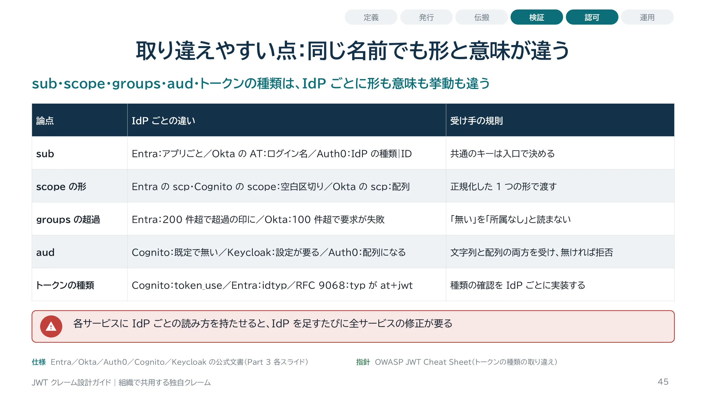
スライド 45 のテキストと解説（ID: p03-confusing-differences）
同じ名前のクレームが、IdP ごとに違う形や意味を持つ点をまとめます。sub は、Entra ID ではアプリごとに違い、Okta のアクセストークンではログイン名、Auth0 では IdP の種類と ID をつないだ文字列です。sub を共通のキーとして各サービスで使うと、IdP が変わったときに壊れます。scope は、Entra ID の scp と Cognito の scope は空白区切りの文字列ですが、Okta の scp は配列です。groups が上限を超えたときの挙動は、Entra ID は超過の印に置き換え、Okta は要求そのものを失敗させます。aud は、Cognito の既定のアクセストークンには無く、Keycloak は設定しないと API が入らず、Auth0 は userinfo を含む配列になることがあります。トークンの種類の見分け方も、Cognito は token_use、Entra ID は idtyp、RFC 9068 の形式なら typ の at+jwt と違います。受け手の各サービスが、これらをすべて正しく扱うのは現実的ではありません。次のスライドで、入口で吸収する考え方を示します。
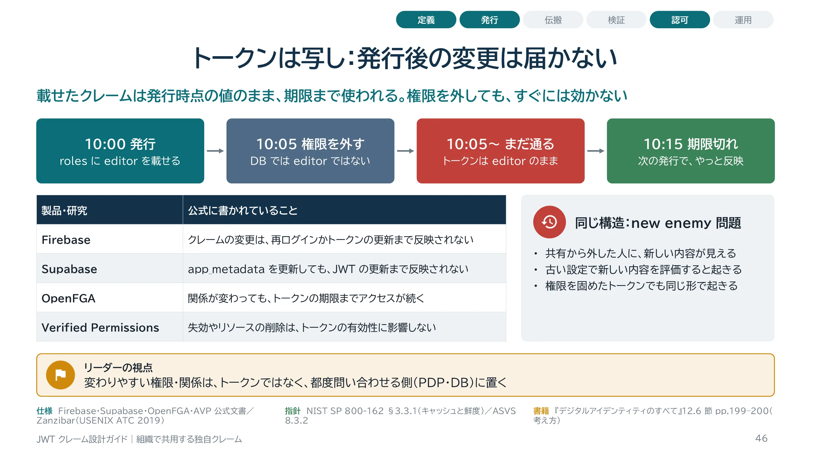
スライド 46 のテキストと解説（ID: p03-absorb-idp-differences）
Part 3 のまとめです。4 つの IdP は、利用者のキー、テナント、aud、ロールの位置、独自クレームの入れ方がすべて違います。各サービスがこの違いを個別に扱うと、IdP を足したり、IdP の挙動が変わったりするたびに、全サービスを直すことになります。そこで、IdP ごとの検証と対応づけを入口で 1 回だけ行い、内側のサービスには組織が決めた形で渡します。入口では、IdP ごとに iss、aud、トークンの種類を検証し、Entra ID なら oid と tid、Okta なら uid というように、IdP ごとのキーを組織のキーに対応づけます。scope の形やロールの名前も、組織の語彙にそろえます。具体的な方法は、入口でのトークン交換や内部トークンの発行で、これは Part 6 で扱います。また、対応づけの表と、組織のクレームの台帳、共通の検証部品は、Part 11 のガバナンスで扱います。どちらの場合も、内側のサービスが読むのは組織の名前空間のクレームだけ、という状態を目指します。ケーススタディの社内業務システムでは、IdP を区別せずに必須のクレームを確かめる厳格な基準が、正規の要求を 2 件拒否しました。groups が超過で消えた Entra ID の管理者と、リソースバインディングを使わない既定の形で aud が無く、client_id で宛先を表す Cognito のアクセストークンです。入口の正規化で Cognito だけは client_id を照合し、groups の超過はディレクトリを引いて解決すると、どちらも正しく受理されました。なお、ケーススタディで実機を使ったのは Keycloak だけで、Entra ID・Okta・Cognito・Auth0 は 2026 年 11 月時点の公式文書の形を再現した模擬です。詳しくは Part 4 で扱います。
スライド 47 のテキストと解説（ID: p04-part）
Part 4 は、この資料の中心です。組織で共用する独自クレームを、どう設計するかを扱います。最初に、そもそも何をトークンに載せ、何を載せずに都度問い合わせるかを決めます。次に、名前と名前空間、型、空の値の意味、大文字小文字の扱いを決めます。さらに、識別子を名前ではなく変わらない ID にすること、値を書ける主体ごとにクレームを分けること、サイズの上限と黙って消えるクレーム、前方互換、そして誰が付与するかを扱います。最後に、設計例とチェックリストでまとめます。
スライド 48 のテキストと解説（ID: p04-token-is-snapshot）
独自クレームの設計で最初に押さえるべきことは、トークンは発行時点の写しだということです。上の図は例です。10 時に editor のロールを載せたトークンを発行し、10 時 5 分に管理画面で権限を外しても、トークンの期限が切れるまでは editor のまま通ります。これは実装の不具合ではなく、自己完結型のトークンの性質です。Firebase、Supabase、OpenFGA、Amazon Verified Permissions は、いずれも公式の文書でこの性質を明記しています。Google の Zanzibar の論文は、アクセス制御の設定と内容の更新の順序の問題を「new enemy」問題として説明しています。ある人を文書の共有から外した後に新しい内容を追加したのに、古い共有の設定で評価すると、外したはずの人に新しい内容が見えてしまう、という問題です。論文はトークンを扱っていませんが、同じ構造の問題がトークンでも起きます。発行時点の権限を固めたトークンは、外した後も古い権限のまま評価されるからです。したがって、変わりやすい権限や、主体と対象の関係は、トークンではなく、都度問い合わせる側に置きます。
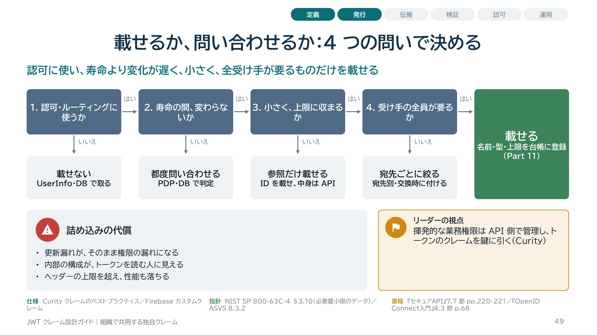
スライド 49 のテキストと解説（ID: p04-carry-or-query）
独自クレームを載せるかどうかを、4 つの問いで決めます。1 つ目は、受け手がそのクレームで認可やルーティングを決めるかです。表示用のプロフィールなら、トークンに載せる必要はなく、UserInfo やデータベースから取ります。Firebase は、カスタムクレームをアクセス制御専用とし、プロフィールなどの保存を強く勧めていません。2 つ目は、トークンの寿命の間に値が変わらないかです。変わるなら、都度 PDP やデータベースに問い合わせます。3 つ目は、小さく上限に収まるかです。長い一覧は、ID だけを載せて中身は API で引きます。4 つ目は、受け手の全員が必要とするかです。一部のサービスだけが使うなら、宛先ごとに絞るか、トークン交換のときに付けます。4 つとも「はい」のときだけ載せ、台帳に登録します。『セキュアAPI』は、細かい権限一覧をトークンに詰める欠点として、更新漏れ、内部構成の露出、肥大化を挙げています。『OpenID Connect入門』は、権限をトークンに入れると IdP にロックインされうると注意しています。
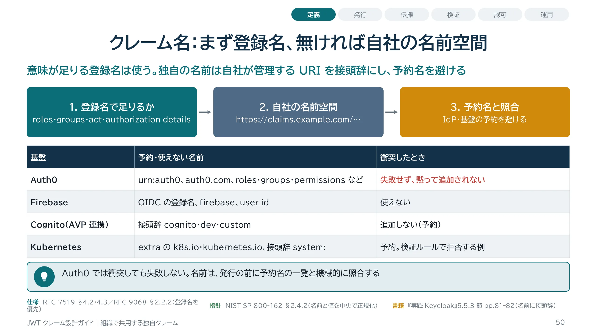
スライド 50 のテキストと解説（ID: p04-claim-names）
名前の決め方です。まず、IANA に登録された名前や、RFC 9068 の roles、groups、entitlements、委任の act、細かい認可の authorization_details など、既にある名前で意味が足りるかを確かめます。RFC 9068 は、登録済みのクレームで意味が十分なら、その名前を使うよう求めています。足りないときだけ独自の名前を作ります。RFC 7519 は、新しい名前には衝突しにくい名前を使うよう勧め、合意だけで使うプライベートな名前は衝突しうるので慎重に、としています。組織の独自クレームは、自社が管理する URI、たとえば https://claims.example.com/ を接頭辞にします。そのうえで、IdP や基盤の予約名と照合します。表のとおり、Auth0、Firebase、Cognito、Kubernetes は、それぞれ予約名を持っています。とくに Auth0 は、予約名と衝突してもトランザクションは失敗せず、クレームが黙って追加されません。テストで気づきにくいので、名前は発行の前に機械的に照合します。『実践 Keycloak』も、スコープ名は組織内で一意にし、サービス名や URL を接頭辞にするよう勧めています。
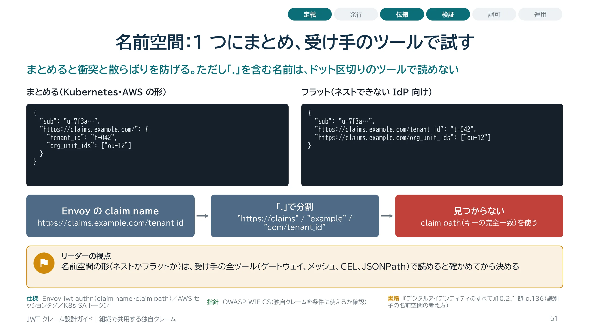
スライド 51 のテキストと解説（ID: p04-namespace）
独自クレームを名前空間のもとに置く形は 2 つあります。左は、名前空間を 1 つのキーにして、その下にオブジェクトでまとめる形です。Kubernetes のサービスアカウントのトークンは kubernetes.io の下に、AWS が発行する JWT は https://sts.amazonaws.com/ の下に、自社のクレームをまとめています。散らばらず、衝突もしにくい形です。右は、名前空間を名前ごとの接頭辞にするフラットな形です。AWS のセッションタグは、Entra ID のようにネストを扱えない IdP のために、フラットな形も公式に認めています。注意点は、受け手のツールです。Envoy の jwt_authn の claim_name は、名前を「.」で分割してネストをたどります。そのため、http://example.org/parent_token のような URL 形式の名前は参照できず、キーを完全一致で並べる claim_path を使うよう、Envoy 自身が書いています。kubernetes.io のような名前も「.」を含みます。名前空間の形は、受け手の全ツール、つまりゲートウェイ、メッシュ、CEL、JSONPath で読めることを確かめてから決めます。
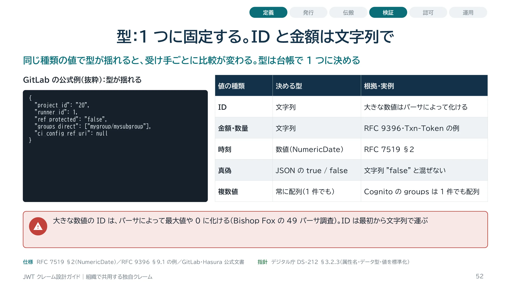
スライド 52 のテキストと解説（ID: p04-type）
型の決め方です。左は GitLab の CI の ID トークンの公式例からの抜粋です。project_id は文字列の "20" なのに、runner_id は数値の 1 です。ref_protected は、真偽値ではなく文字列の "false" です。ci_config_ref_uri は null になることがあり、environment のように、そもそもキーが無いこともあります。受け手は、これに合わせて比較の書き方を変えなければなりません。組織の独自クレームでは、値の種類ごとに型を 1 つに決めます。ID は文字列にします。Bishop Fox の 49 種類の JSON パーサの調査では、大きな数値が最大値や 0 に化けることが報告されています。金額や数量も、RFC 9396 の例や Transaction Tokens の例と同じく文字列にします。時刻は RFC 7519 の NumericDate、つまり数値です。真偽値は JSON の true と false にします。複数の値を取りうるものは、1 件でも常に配列にします。Hasura は、独自クレームの値をすべて文字列にそろえる規則を採っています。デジタル庁の DS-212 も、属性名、データ型、設定できる値を事前に標準化する必要があるとしています。
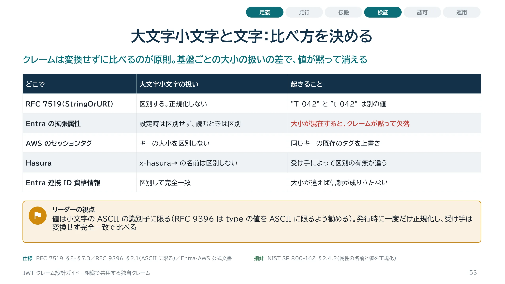
スライド 53 のテキストと解説（ID: p04-shape）
値の形の落とし穴です。GitHub Actions の OIDC トークンでは、リポジトリの複数選択のカスタムプロパティが、"us-east-1,eu-west-1" のようなカンマ連結の文字列で入ります。GitHub は、受け手の側で文字列の一致や contains で評価するよう案内しています。Kubernetes の設定例には、カンマ連結のロールを split で配列に戻す式があります。受け手は区切り文字を知っていなければなりません。空白区切りは、OAuth の scope の決まりです。Istio は scope と permission だけを自動で分割し、それ以外のクレームは設定しない限り、"admin editor" を 1 つの文字列として比べます。Hasura は、Cognito のように文字列しか載せられない IdP のために、JSON を文字列にして埋め込む形式を用意しています。これは IdP の制約への妥協で、受け手はもう一度 JSON として解析する必要があります。真偽値を文字列にすると、真偽値として比べたときに誤ります。Kubernetes は、email_verified を明示的に true と比較し、真偽値でない値を実行時に捕える書き方を勧めています。ただし、この例の orValue(true) は、クレームが無いときに通します。必須にするなら claims.email_verified == true と書きます。組織の独自クレームでは、複数値は配列、構造はオブジェクト、真偽は true と false にします。
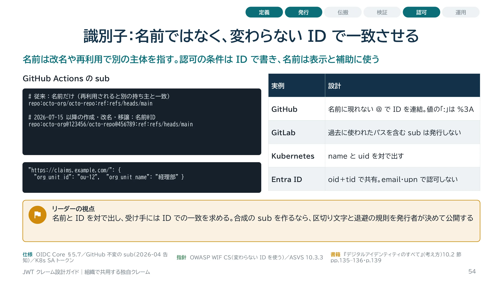
スライド 54 のテキストと解説（ID: p04-absent-null-false-empty）
クレームが「無い」ことの意味です。実際の IdP や基盤では、4 つの状態が混在しています。AWS が発行する JWT の mfa_present は、MFA を使ったときだけ文字列の "true" が入り、"false" は決して入りません。無いことが偽を意味する、と明示した規約です。GitLab の ci_config_ref_uri は、パイプラインの定義が別のプロジェクトにあると null になり、environment は指定が無いとキーごと無くなります。groups_direct は、直接所属するグループが 200 を超えると丸ごと省略されるので、0 件と区別できません。Firebase では、null を指定すると独自クレームがすべて消えます。Istio は、クレームが無いと、対応するヘッダーを付けません。組織では、クレームの種類ごとに、無いときの扱いを決めて台帳に書きます。許可を与えるクレームなら、無いときは何も許しません。制限をかけるクレームなら、無いときは拒否します。上限で欠落しうるクレームは、無いことが 0 件を意味しないので、認可に使いません。
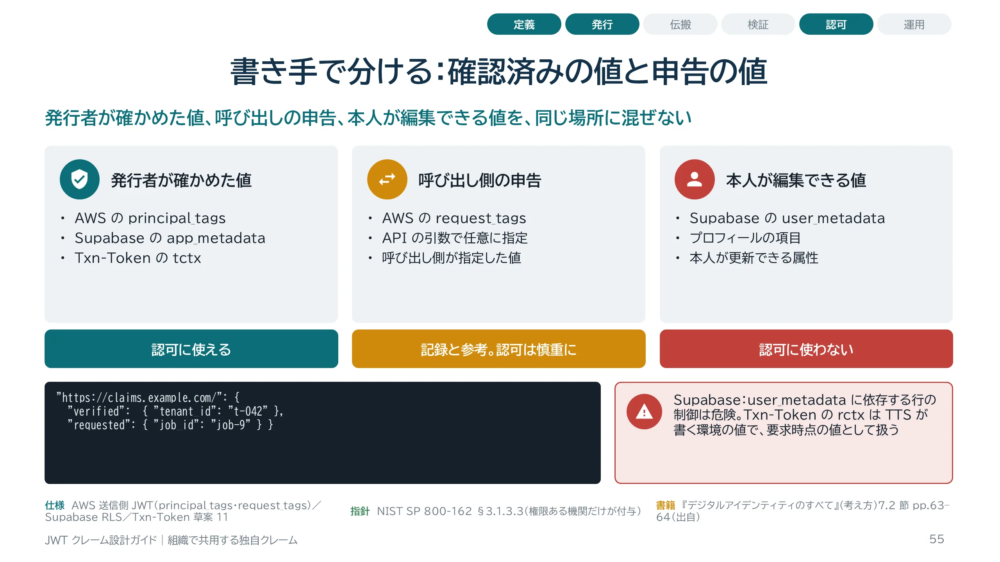
スライド 55 のテキストと解説（ID: p04-case-and-characters）
大文字小文字と文字の扱いです。RFC 7519 は、StringOrURI の値を、大文字小文字を区別し、正規化もせずに比べると定めています。ところが、基盤ごとに扱いが違います。Entra ID のディレクトリ拡張属性は、設定するときは大文字小文字を区別しませんが、トークンを作るときには区別して読みます。そのため、LegacyId と legacyid で設定されたユーザーが混在すると、LegacyId で写像したクレームは後者のユーザーのトークンに出ません。エラーにはならず、黙って欠落します。AWS のセッションタグは、キーの大文字小文字を区別せずに、同じキーの既存のタグを上書きします。Hasura は x-hasura- で始まる名前の大文字小文字を区別しません。Entra の連携 ID 資格情報は、発行者、主体、宛先を大文字小文字を区別して完全一致で比べます。文字の見た目については、RFC 9396 が、同じ見た目で別の文字があるため、type の値を ASCII に限るなどの工夫を勧めています。組織では、値を小文字の ASCII の識別子に限り、発行時に一度だけ正規化し、受け手は変換せずに完全一致で比べます。NIST SP 800-162 も、属性の名前と値を正規化するよう求めています。
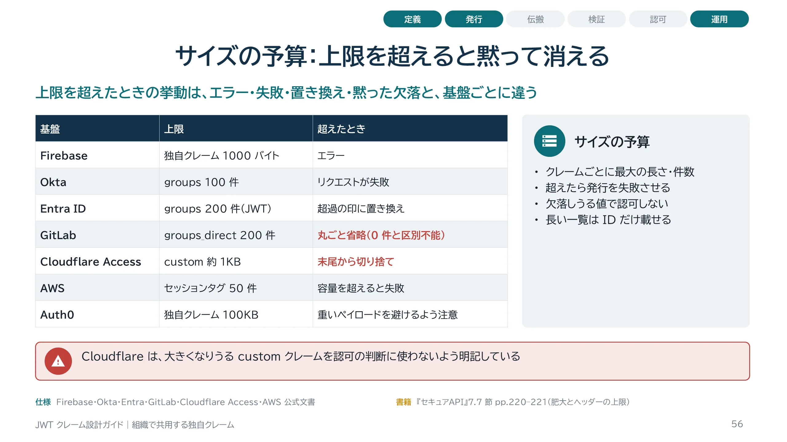
スライド 56 のテキストと解説（ID: p04-immutable-identifiers）
識別子の原則です。名前は変わり、再利用されます。GitHub Actions の OIDC トークンの sub は、従来は組織名とリポジトリ名だけで作られていました。名前が再利用されると、別の持ち主が同じ sub を作れました。GitHub は 2026 年 7 月 15 日以降に作成、改名、移譲されたリポジトリについて、sub に組織とリポジトリの数値の ID を埋め込む形に移りました。区切りに @ を使うのは、GitHub の名前に @ が現れないからです。値の中のコロンは %3A に置き換えます。区切り文字を明示的に設計した例です。GitLab は、別のプロジェクトが過去に使ったパスを含む sub の発行そのものを止めます。Kubernetes は、名前と uid を対で出します。名前は作り直しで再利用されますが、uid は変わりません。Entra ID は、サービス間で共有するキーとして oid と tid の組を勧め、email や upn を認可に使わないよう明記しています。組織の独自クレームでも、名前と ID を対で出し、受け手には ID での一致を求めます。『デジタルアイデンティティのすべて』も、識別子は変えず、名前と分ける考え方を示しています。
スライド 57 のテキストと解説（ID: p04-split-by-writer）
同じトークンの中でも、値を書ける主体はさまざまです。そこで、書き手ごとにクレームを分けます。AWS が発行する JWT では、IAM の主体に付いたタグは principal_tags に、呼び出し側が API の引数で任意に指定するタグは request_tags に、別のオブジェクトとして入ります。後者は呼び出し側の申告なので、信頼の度合いが違います。Supabase では、本人が自分で更新できる user_metadata と、本人が更新できない app_metadata が分かれています。Supabase は、user_metadata に依存する行単位の制御は、本人が書き換えられるので危険だと明記しています。Transaction Tokens の草案では、トークンの発行サービスである TTS が、決めた認可の詳細を tctx に、要求の環境の文脈を rctx に分けて書きます。rctx は呼び出し側の申告ではありませんが、要求時点の環境の値として扱います。NIST SP 800-162 も、権限を持つ機関だけが付与・主張できる属性があり、本人が変更できないようにすべきだとしています。組織の独自クレームでも、発行者が確かめた値と申告の値は別の名前にし、認可には前者だけを使います。
スライド 58 のテキストと解説（ID: p04-size-budget）
トークンのサイズと、上限を超えたときの挙動です。表のとおり、基盤ごとに上限も挙動も違います。Firebase は独自クレームを 1000 バイトまでとし、超えるとエラーにします。Okta は groups が 100 件を超えるとリクエスト自体を失敗させます。Entra ID は、JWT で groups が 200 件を超えると groups を出さず、超過を示すクレームに置き換えます。危ないのは、黙って欠落するものです。GitLab の groups_direct は、200 件を超えると丸ごと省略され、0 件と区別できません。Cloudflare Access は、IdP 由来の属性を入れる custom クレームを、約 1KB を超えると末尾から切り捨て、大きくなりうる custom クレームを認可の判断に使わないよう明記しています。AWS のセッションタグも件数と容量の上限があり、超えると失敗します。組織では、クレームごとに最大の長さと件数を決め、超えたら発行を失敗させます。欠落しうる値では認可しません。長い一覧は、ID のような参照だけを載せます。『セキュアAPI』も、トークンの肥大化が HTTP ヘッダーの上限を超える原因になると指摘しています。
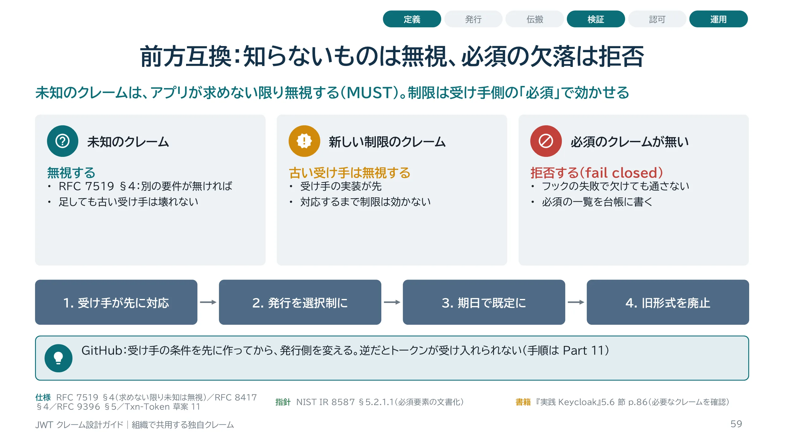
スライド 59 のテキストと解説（ID: p04-forward-compatibility）
前方互換の規則です。RFC 7519 は、アプリケーションが別に求めない限り、受け手は理解できないクレームを無視しなければならないと定めています。Transaction Tokens の草案も同じです。このおかげで、新しいクレームを足しても、古い受け手は壊れません。しかし裏返すと、新しいクレームで制限をかけたつもりでも、古い受け手はそれを無視します。制限は、受け手が実装するまで効きません。RFC 8417 も、この性質が混乱のもとになりうると指摘しています。そこで、この「アプリが求めない限り」という条件を使い、受け手が判断に使うクレームは、受け手の側で必須と宣言し、無ければ拒否します。発行時フックの失敗などで欠けたまま発行されたトークンも、これで通さずに済みます。NIST IR 8587 は、トークンの種類ごとに必須の要素を文書化するよう求めています。なお、RFC 9396 は、発行者が、知らない type や知らないフィールドを含む authorization_details を拒否すると定めています。変更の順序も大切です。GitHub は、受け手の条件を先に作ってから発行側を変えるよう明記しています。変更の手順の詳細は Part 11 で扱います。ただし、必須の確認は、IdP ごとの違いを入口で埋めてから行わないと、正規の要求まで拒否します。実測は次のスライドです。
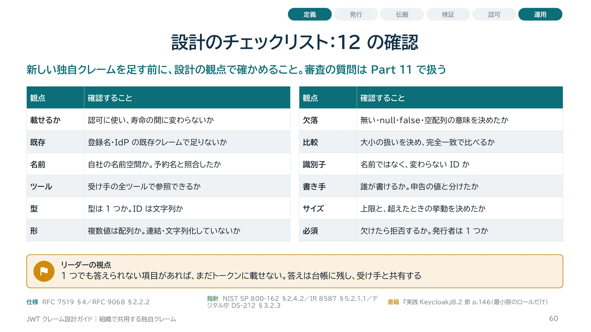
スライド 60 のテキストと解説（ID: p04-reject-missing-required）
必須のクレームが無ければ拒否する、つまり fail closed は共通の基準の 1 つですが、IdP ごとの扱いと組で使わないと、正規の要求まで落とします。ケーススタディの社内業務システムで、Keycloak と Entra ID・Okta・Cognito・Auth0 の形のトークンを、共通の基準だけで受けると、正規の要求 5 件のうち 2 件を拒否しました。1 件目は、250 グループに属して groups が超過で消えた Entra ID の管理者です。必須の groups が無いので拒否されます。2 件目は、Cognito のアクセストークンです。Cognito のアクセストークンは、リソースバインディングを使わない既定では aud が無く、client_id で宛先を表すので、宛先の確認で拒否されます。模擬はこの既定の形です。重点として、入口で IdP ごとに検証して内部トークンに交換することと、groups の超過をディレクトリで引いて解決することを足すと、2 件とも正しく受理され、攻撃は 18 件中 1 件しか通りませんでした。残った 1 件は、送信者制約を見送ったことによる、漏れたトークンの再送です。逆に、誤拒否を避けるために基準の要素を外すと、攻撃が戻ります。必須の確認を外すと、groups が消えた一般社員の管理操作と、フックの打ち切りで部署が欠けたトークンが通り、宛先の確認を外すと、別の宛先のトークンが通りました。必須は外さず、IdP ごとの違いを入口で埋めてから確かめます。なお、実機で動かしたのは Keycloak だけで、Entra ID・Okta・Cognito・Auth0 は 2026 年 11 月時点の公式文書の形を再現した模擬です。
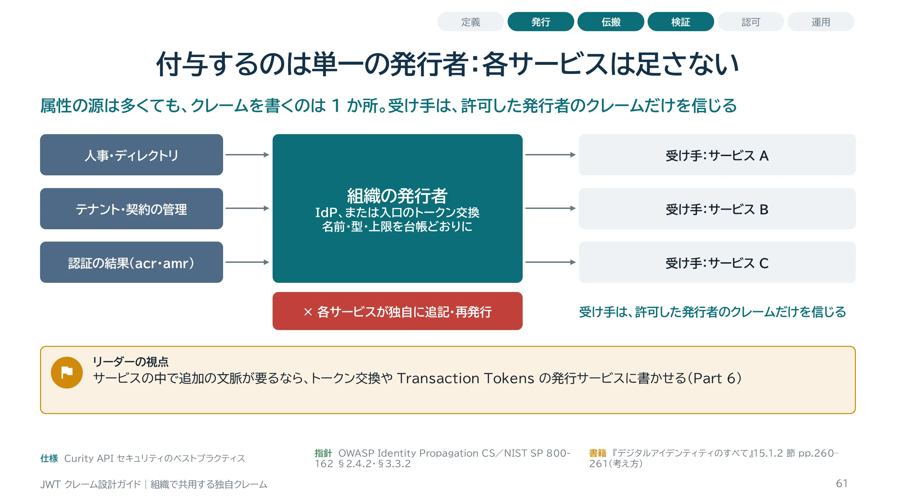
スライド 61 のテキストと解説（ID: p04-single-issuer）
誰がクレームを付与するかです。属性の源は、人事のディレクトリ、テナントや契約の管理、認証の結果など、複数あります。しかし、それをクレームとしてトークンに書くのは、組織の発行者 1 か所に限ります。具体的には、IdP か、入口でのトークン交換のサービスです。Curity は、API は中央のサーバーが主張したクレームだけを使い、自分で情報を足したりトークンを発行したりすべきでない、としています。OWASP の Identity Propagation Cheat Sheet も、アプリケーションのサービスを ID の発行者にしないこと、発行と検証の権限を分けることを求めています。NIST SP 800-162 は、属性の名前と値の正規化は中央の権限主体が管理すべきだとし、属性の源の数を減らす利点も挙げています。各サービスが独自にクレームを足すと、同じ名前で別の意味の値が生まれ、受け手はどれを信じればよいか分からなくなります。OWASP の JWT Cheat Sheet も、roles や groups などを、別の発行者が詐称することに注意するよう求めています。サービスの中で追加の文脈が必要なら、トークン交換や Transaction Tokens の発行サービスに書かせます。これは Part 6 で扱います。
スライド 62 のテキストと解説（ID: p04-namespace-object-example）
ここまでの原則をまとめた設計例です。架空の組織のアクセストークンのペイロードを示します。ロールは、RFC 9068 の登録名である roles をトップレベルに置きます。登録名で意味が足りるものは、独自の名前を作りません。独自クレームは、自社が管理する https://claims.example.com/ を名前空間のキーとして、1 つのオブジェクトにまとめます。v は、このオブジェクトの構造の版です。Netflix の内部の ID 構造も、構造自体に版の番号を持たせています。テナントと部署は、名前ではなく ID で、すべて文字列です。部署は 1 つでも常に配列にします。このオブジェクトには、発行者が確かめた値だけを入れ、呼び出し側の申告は入れません。文書ごとの権限、氏名やメールのような個人情報は載せません。機微な情報の扱いは Part 9 で扱います。ネストを扱えない IdP のために、同じ内容をフラットな名前でも出せるよう、台帳には両方の形を定義しておきます。NIST IR 8112 が示す属性のメタデータ、つまり説明、許容値、形式、鮮度などは、台帳の項目の雛形として使えます。
スライド 63 のテキストと解説（ID: p04-design-checklist）
Part 4 のまとめとして、設計の観点のチェックリストを 12 項目にしました。左の 6 項目は、載せるかどうかと、名前と形の確認です。認可に使い、寿命の間に変わらない値か。登録名や IdP の既存のクレームで足りないか。自社の名前空間に入れて予約名と照合したか。受け手の全ツールで参照できるか。型は 1 つに決まり、ID は文字列か。複数値は配列で、区切り文字の連結や JSON の文字列化をしていないか。右の 6 項目は、意味と運用の確認です。無い、null、false、空配列の意味を決めたか。大文字小文字の扱いを決め、完全一致で比べるか。名前ではなく変わらない ID か。誰が値を書けるかを決め、申告の値と分けたか。上限と、超えたときの挙動を決めたか。必須のクレームが欠けたら拒否し、付与は単一の発行者に限っているか。新しい共有クレームの提案を審査するための 25 の質問は、Part 11 で扱います。
スライド 64 のテキストと解説（ID: p05-part）
Part 5 は、権限の表し方です。主体は利用者だけではありません。マイクロサービスやジョブなどのワークロード、そして運用者やバッチ、基盤そのものの操作もあります。この Part では、3 種類の主体と、それを 1 つのリクエストで同時に表す方法から始めます。次に、RBAC、ABAC、関係ベースという権限のモデルと、PEP と PDP の分担、粗い権限と細かい権限の分け方を扱います。さらに、ロール爆発、システムの権限、マルチテナント、オブジェクト単位の認可、代理の混乱を扱います。
スライド 65 のテキストと解説（ID: p05-three-principals）
トークンが述べる主体には、3 つの種類があります。1 つ目は利用者で、社員、顧客、取引先の担当者です。IdP が発行するトークンの sub で表し、Entra ID なら oid と tid の組が安定したキーになります。2 つ目はワークロードで、マイクロサービス、ジョブ、エージェントなどです。SPIFFE ID、OAuth の client credentials、クラウドのサービスアカウントやマネージド ID で表します。3 つ目はシステムや基盤そのもので、クラウドのサービス、運用者、バッチなどです。AWS では、サービスにリンクされたロールがこれに当たり、サービスが事前に定義し、管理者も権限を編集できません。CloudEvents の Auth Context という拡張は、イベントを起こした主体を、app_user、user、service_account、api_key、system の 5 種類で区別しています。注意すべきは、RFC 9068 のアクセストークンでは、sub が利用者にもクライアントにもなることです。RFC 9700 §4.15.1 は、利用者とクライアントの識別子が同じ名前空間で重なりうる場合、認可サーバーが、受け手に両者を区別する手段を用意しなければならないと定めています。
スライド 66 のテキストと解説（ID: p05-one-request-carries）
1 つのリクエストには、通常、複数の主体が関わります。利用者がブラウザで操作し、ゲートウェイが受け、サービス A がサービス B を呼びます。このとき、受け手が知りたいことは 1 つではありません。誰の権限で動いているか。誰が代理して実行しているか。どのワークロードが Txn-Token を求めたか。直接の通信相手は誰か。どこを経由してきたか。それぞれ答える仕組みが違うので、表では別の行にしました。誰の権限かは、トップレベルの sub で表します。誰が代理して実行しているかは、RFC 8693 の act で表します。RFC 8693 §4.1 では、最も外側の act が今の代理者で、入れ子の内側の act は過去の代理者です。アクセス制御に使ってよいのは、トップレベルのクレームと、今の代理者だけで、過去の代理者は参考の情報にとどまります。どのワークロードが Txn-Token を求めたかは、Transaction Tokens の草案 11 §9.2 の req_wl で表します。これは Txn-Token を発行させたワークロードで、今このリクエストを送ってきた相手とは限りません。直接の通信相手は、mTLS で相手が示した証明書、例えば SPIFFE の X.509-SVID の ID で確かめます。これはトークンのクレームではなく、接続の性質です。act、req_wl、mTLS の相手は、同じ「誰が実行しているか」に見えて、別の問いに答えます。1 つで他を代用すると、取り違えに気づけません。どこを経由したかは、AWS の FAS の aws:CalledVia のように、経由したサービスを別の属性として示します。Google の BeyondProd は、利用者の文脈を、完全性を保護した転送可能な切符として中央で発行し、サービスの ID とは別に運びます。Netflix の Passport も、入口で作る短命の内部の ID 構造です。大切なのは、これらを 1 つのクレームに混ぜないことです。NIST SP 800-228 は、呼び出し元のサービスとエンドユーザーの、それぞれの ID を認可するよう求めています。ASVS は、認可を元の主体の権限で判断し、仲介するサービスの権限で判断しないよう求めています。
スライド 67 のテキストと解説（ID: p05-authz-models）
権限のモデルを 3 つに整理します。RBAC は、役割、つまりロールで許可を決める方式です。クレームとしては roles や groups が対応し、機能の粗い区別に向きます。弱点は、細かくしようとするとロールの数が増えることです。ABAC は、主体、対象、環境の属性で判定する方式です。トークンが運べるのは主体の安定した属性で、部署、地域、認証の強さなどに向きますが、設計とテストは難しくなります。『デジタルアイデンティティのすべて』は、RBAC を、ロールだけを属性とする ABAC の特別な形と位置づけています。関係ベースは、文書の所有者や共有先のような、主体と対象の関係で判定する方式で、Google の Zanzibar や OpenFGA がこの考え方です。関係は対象ごとに変わり、数も多いので、トークンには sub だけを載せ、関係は PDP が持ちます。『実践 Keycloak』は 8 章で、RBAC、グループ、スコープ、ABAC、中央集権型の認可を比べ、どれか 1 つに決める必要はなく併用してよいとしています。NIST IR 8587 も、権限をより細かく動的に定義できる形、例として ABAC で実装するよう求めています。
スライド 68 のテキストと解説（ID: p05-pep-pdp）
認可の役割分担です。PEP は、要求を止めたり通したりする場所で、ゲートウェイや各サービスがこれに当たります。PDP は、方針に従って許可するかを判断する場所です。PIP は、判断に必要な属性を提供する源で、データベースやディレクトリです。PAP は、方針を管理する場所です。『デジタルアイデンティティのすべて』は、認可をこの 4 つに分け、ポリシーをコードから切り離して管理する考え方を示しています。トークンのクレームは、PDP が使う入力の一部にすぎません。主体の安定した属性はトークンから、関係やオブジェクトの属性は PIP から、IP アドレスや時刻のような環境の文脈は PEP が要求の時点で取ります。NIST IR 8587 は、認可の判断をトークンが有効かどうかだけで下すべきでなく、提示された文脈も考えるべきだとしています。NIST SP 800-207 も、アクセスは主体の ID、資産の状態、環境の属性を含む動的な方針で決めるとしています。『実践 Keycloak』は、hasRole のように判定をコードに書くと要件が変わるたびに再デプロイが要るので、canAccess のように判断を外に出す形を勧めています。
スライド 69 のテキストと解説（ID: p05-coarse-fine-layers）
権限の粒度に応じて、置き場所を 3 層に分けます。1 層目は粗い権限で、scope、roles、groups です。機能の範囲や役割のように、長く安定した値なので、トークンに載せます。RFC 9068 は、ロールやグループを載せるなら roles、groups、entitlements という名前を使うよう求めていますが、値の語彙は定めていないので、組織で決めます。2 層目は取引単位の権限で、RFC 9396 の authorization_details です。この支払い、この金額、この相手先、といった取引の中身を、型の付いたオブジェクトで表します。RFC 9396 は、JWT のアクセストークンに入れるときは、宛先に合わせて絞ったものを入れるよう勧めています。また、発行者は、知らない type や知らないフィールドを含む要求を拒否します。3 層目はオブジェクト単位の権限で、この文書を読めるか、この請求書を承認できるか、です。対象ごとに変わり数も多いので、トークンには載せず、PDP やデータベースで都度判定します。NIST IR 8587 も、アクセストークンに scope を含め、細かい権限には RAR、つまり authorization_details を使えるとしています。ASVS は、sub、scope、authorization_details があれば必ず判断に使うよう求めています。
スライド 70 のテキストと解説（ID: p05-scope-vs-role）
scope と role は、どちらも権限を表しますが、守る相手が違います。『実践 Keycloak』は、OAuth のスコープはクライアントからシステムを守り、RBAC は利用者からシステムを守る、と整理しています。scope は、利用者がクライアントに委ねた範囲で、利用者が持つ全権限ではありません。Keycloak では、トークンに入るロールは、利用者に割り当てたロールと、クライアントが使ってよいロールの積集合です。既定の Full Scope Allowed のままだと、利用者の全ロールが入るので、本番では切って、必要なロールだけに絞ります。IdP ごとの表し方は表のとおりです。Entra ID の scp は、クライアントが同意を得たスコープで、利用者のトークンにだけ入ります。Keycloak は、レルムのロールを realm_access に、クライアントのロールを resource_access に入れます。レルムのロールは組織全体で同じ意味、クライアントのロールはそのクライアント固有の意味として使い分けます。各 IdP の詳細は Part 3 で扱いました。
スライド 71 のテキストと解説（ID: p05-role-explosion）
ロール爆発の例です。左は悪い例で、テナント、部署、対象、操作の組み合わせを、ロールの名前に焼き込んでいます。テナントが増えるたび、部署が増えるたびに、ロールの数が掛け算で増え、トークンも膨らみます。Entra ID では、groups が 200 件を超えると、groups の代わりに超過を示すクレームが入ります。右は分けた例です。役割は approver のような短い名前にし、テナントは独自クレームの tenant_id で別に運び、どの請求書を承認できるかは PDP やデータベースで判定します。『実践 Keycloak』は、ロールの数が爆発しないよう注意し、細かい権限をロールで表現しないよう求めています。複数のロールを渡したいときは、グループにロールを割り当てるほうが自然で、複合ロールは性能と管理の面で注意が要るとしています。『セキュアAPI』も、長いスコープや権限の一覧は、ロールにまとめよという兆候だと述べています。
スライド 72 のテキストと解説（ID: p05-system-privileges）
利用者ではない主体の権限です。夜間バッチは、ワークロード自身の権限で、client credentials でトークンを取ります。sub はクライアントになるので、受け手は利用者のトークンと区別できなければなりません。RFC 9700 §4.15.1 は、両者の識別子が同じ名前空間で重なりうるなら、認可サーバーが区別する手段を用意するよう求めています。長時間のジョブで利用者のトークンを持ち続けない話は Part 8 で扱います。運用者が顧客のデータを操作するときは、トークン交換で得た委任のトークンを使います。sub に対象の利用者、act に運用者が入り、監査で両方を記録します。緊急時の特権、いわゆる break-glass では、RFC 8693 の may_act、つまり「この主体の代理として行動してよい者」を示すクレームや act を使い、承認の記録と短い期限を確かめます。承認は、RAR や CIBA で取得できます。クラウドの基盤自身の操作には、AWS のサービスにリンクされたロールのような、サービス専用の ID があり、管理者もその権限を編集できません。NIST IR 8587 は、非人間の ID には狭いスコープの短命なトークンを使うよう求めています。
スライド 73 のテキストと解説（ID: p05-multitenancy）
マルチテナントでのテナントの表し方は、3 通りあります。1 つ目は、テナントごとに発行者を分ける方法です。Keycloak のレルムがそうで、発行者の URL にレルムの名前が入るので、iss がレルムごとに違います。2 つ目は、テナントのクレームを入れる方法です。Entra ID の tid、Auth0 の org_id がこれに当たり、ID-JAG の草案は、マルチテナントの発行者に tenant クレームを必須としています。テナントを表す登録済みのクレームはないので、独自クレームを作る正当な余地があります。3 つ目は、テナントを含む resource の URI で宛先を分ける方法です。どの方法でも、受け手は下の 4 点を確かめます。署名の鍵がそのテナントのものか、iss が許可したテナントの発行者か、tid が iss の中のテナントと一致するか、保存データのテナントが tid と一致するか、です。Entra ID のマルチテナント用のメタデータでは、iss は {tenantid} を含むテンプレートなので、トークンの tid で置き換えてから完全一致で比べます。NIST IR 8587 は、署名鍵を単一のテナントのような最小の単位にスコープするよう求めています。
スライド 74 のテキストと解説（ID: p05-cross-tenant）
テナントをまたぐ場面は 3 つあります。1 つ目は、複数のテナントに属する利用者です。Entra ID の oid は、テナントが違えば別の値になります。Microsoft は、tid と oid を複合キーにし、データアクセスのキーに tid を含め、idp クレームでテナントをまたいだ名寄せをしないよう求めています。2 つ目は、テナントをまたいで作業する運用者です。運用者は顧客になりすますのではなく、トークン交換で得た委任のトークン（sub は顧客、act は運用者）で実行者として名を残し、承認と期限を確かめ、監査で顧客の sub と運用者の act を両方記録します。3 つ目は、取引先、つまり B2B です。自社の発行者でトークン交換をして、相手のドメインの発行者に渡し、相手の発行者が自分たちの語彙にクレームを変換し直して、短命のトークンを発行します。外部の取引先には、ペアワイズ、つまり相手ごとに異なる識別子を出します。OWASP の Workload Identity Federation Cheat Sheet は、共有の発行者を信頼すると、他のテナントのトークンも受け入れてしまう危険を指摘しています。ドメインをまたぐ流れの例は、Part 6 で扱います。
スライド 75 のテキストと解説（ID: p05-bola）
OWASP の API Security Top 10 の 1 位は、BOLA、つまりオブジェクト単位の認可の不備です。利用者が指定した ID でデータを取り出すすべての処理で、そのオブジェクトにアクセスしてよいかを確かめる必要があります。トークンのクレームは、誰か、どのテナントか、どんな役割かを運ぶだけで、この請求書を読めるかは教えてくれません。認可は 3 段で考えます。1 段目でトークンを検証し、2 段目で roles や scope から機能を使ってよいかを確かめます。これを怠ると、機能単位の認可の不備、BFLA になります。3 段目で、データの側でオブジェクトとの関係を確かめます。『セキュアAPI』は、BOLA の修正として、クエリの条件に所有者がトークンの sub であることを加える例を示しています。存在を隠したいなら 404、存在を示してよいなら 403 を返し、利用者 A と B を使った自動テストで回帰を防ぐよう勧めています。また、ゲートウェイや WAF は BOLA を防げないと注意しています。データ層での行単位の制御は Part 7 で扱います。
スライド 76 のテキストと解説（ID: p05-confused-deputy）
代理の混乱、confused deputy は、仲介するサービスが、呼び出し元の権限と自分の権限を取り違える問題です。たとえば、サービス A が利用者の依頼でサービス B を呼ぶときに、自分の広い権限で呼んでしまうと、B は誰の権限で動いているのか分かりません。対策は表のとおりです。まず、経路を見せます。RFC 8693 の act をネストさせると、委任の連鎖を記録できます。ただし、アクセス制御に使ってよいのは、トップレベルのクレームと今の実行者だけで、ネストした過去の実行者は情報としてだけ扱います。AWS は、サービス間の代理の混乱に対して、aws:SourceArn や aws:SourceAccount で、自分のために動いているサービスかを確かめるよう求めています。MCP の仕様は、受け取ったトークンをそのまま次へ渡すことを禁じ、自分宛てに発行されたトークン以外を受け入れてはならないとしています。AWS の FAS では、IP や VPC のような文脈は、ホップをまたぐと引き継がれないことがあるので、経由したことは CalledVia という別の属性で示します。ホップごとの交換と絞り方は Part 6、AI エージェントは Part 10 で扱います。
スライド 77 のテキストと解説（ID: p06-part）
Part 6 は、クレームの流れを扱います。クレームは IdP がログインのときに一度だけ書くもの、と考えがちですが、実際には、発行時のフック、入口のゲートウェイ、サービス間の伝搬、追加認証、承認の各段階で足されたり、作り替えられたりします。この Part では、段階ごとに足してよいものと足してはいけないもの、下流へ渡すときの絞り方、アクセス元の情報の扱い、クレームを HTTP ヘッダーに移すときの信頼境界、証跡の残し方、処理結果の返し方を順に見ます。最後に、ブラウザから DB まで、マルチテナント、取引先との API、イベント駆動の 4 つの流れで、各ホップのトークンとクレームを確かめます。夜間バッチと AI エージェントの流れは、Part 8 と Part 10 で扱います。
スライド 78 のテキストと解説（ID: p06-stage-map）
クレームが生まれる場所を 6 つの段階に分けた地図です。1 つ目は IdP での認証時で、認証の方式、時刻、強さを表す acr、amr、auth_time が入ります。ここに業務の権限の詳細を入れないのは、認証の事実と権限では、寿命も変わる頻度も違うからです。2 つ目は発行時のフックで、テナント ID や課金プラン、粗いロールのような比較的安定した属性を足します。残高やリスクスコアのように秒単位で変わる値や、生年月日のような生の個人情報は入れません。3 つ目は入口のゲートウェイで、内部用のトークンへの作り替えや、主体 ID の正規化をします。クライアントが送ってきた同名のヘッダーの値は使いません。4 つ目はサービス間で、呼び出し全体で変わらない文脈と取引 ID を運びます。外部から受け取ったアクセストークンそのものは入れません。5 つ目の追加認証と 6 つ目の承認では、より新しい認証の事実や、承認された取引の内容が加わります。段階ごとに書き手を 1 つに決めておくことが、後の検証と監査の前提になります。
スライド 79 のテキストと解説（ID: p06-issuance-hook）
発行時フックは、トークンを発行する直前に外部の API を呼び、クレームを足す仕組みです。便利ですが、外部呼び出しなので遅れたり失敗したりします。Okta のトークンのインラインフックは、既定で 3 秒で打ち切られ、リトライしません。失敗しても認証の流れは続き、クレームの付いていない元のトークンがそのまま発行されます。Entra の custom claims provider は、claims mapping policy で明示的に対応付けたクレームだけがトークンに入り、返せる型は文字列と文字列の配列だけ、合計 3KB までです。Auth0 の post-login Action はログインの後だけでなく、リフレッシュトークンの交換のときにも実行されます。Cognito の発行前トリガーも、リフレッシュのときに呼ばれます。client credentials で発行するときは、フックが別になります。Auth0 では credentials-exchange という別のトリガーが動きます。post-login の実行条件の一覧には client credentials がありません。動かないという明文はありませんが、post-login で足すクレームは M2M のアクセストークンには載らないと考えてください。Cognito では、トリガーのイベントの版を V3_0 にしたときだけ、client credentials の発行で発行前トリガーが呼ばれます。V3_0 は Essentials と Plus のプランで使え、M2M の分は別の料金です。利用者向けのフックでクレームを足していても、サービスアカウントのトークンには出ない、ということが起きます。ここから導かれる受け手の規則は、独自クレームが無いときに「権限なし」として拒否することです。既定の権限があると解釈してはいけません。また、Entra のサンプルは生年月日を返していますが、生の個人情報をフックで足すのは最小化の原則に反します。各 IdP の詳細は Part 3 で扱いました。
スライド 80 のテキストと解説（ID: p06-grant-types）
トークンを発行する入口、つまりグラントの種類によって、トークンが表す主体と、認証が行われた場所が変わります。基本は認可コードに PKCE を付けた方式です。RFC 9700 §2.1.1 は、公開クライアントに PKCE を必須とし、認可サーバーにも PKCE への対応を求めています。テレビや CLI のような入力の限られた端末では、RFC 8628 の Device Authorization Grant を使います。端末は device_code と user_code を受け取り、利用者は別の端末で verification_uri を開いてコードを入れ、承認します。その間、端末はトークンエンドポイントにポーリングし、承認が済むとトークンを受け取ります。トークンを受け取る端末と、利用者が認証した端末が違う点が特徴です。RFC 8628 は、手で入れる user_code は短いので、試行の回数を制限するよう勧めています（§5.1）。また、攻撃者が自分の端末でフローを始め、被害者にコードを入れさせる遠隔のフィッシングに注意するよう求めています（§5.4）。client credentials は、利用者のいない、クライアント自身の発行です。sub はクライアントになり、前のスライドで見たとおり、発行時フックも利用者の発行とは別になります。ワークロードの ID、例えば SPIFFE の JWT-SVID や Kubernetes のサービスアカウントのトークンは、IdP ではなくワークロードの基盤が発行します。発行の契機と寿命は基盤が決め、IdP のフックは動きません。認可サーバーに提示して交換することもあります。使わない方式も 2 つあります。ROPC、つまりクライアントが利用者のパスワードをトークンエンドポイントに直接送る方式は、RFC 9700 §2.4 で使ってはならないとされています。implicit のように、アクセストークンを認可応答で返す型は、RFC 9700 §2.1.2 で、使うべきでないとされています。hybrid のうち、認可応答で AT を返す型も同じです。代わりに code を使います。最後に、新しいグラントを足すときは、そのグラントで発行時フックが動き、独自クレームが載るかを確かめます。Keycloak と Auth0 は、device flow でフックが動くかを文書に明記していません。
スライド 81 のテキストと解説（ID: p06-edge-exchange）
外部から来る資格情報は、ブラウザの Cookie、参照型のアクセストークン、取引先のトークン、IdP ごとに形の違う JWT とさまざまです。これをそのまま内部のサービスに流すと、各サービスがすべての形式を理解しなければならず、外部の都合が内部に染み込みます。そこで入口で外部の資格情報を検証して終わらせ、内部専用の形に作り替えます。ドメイン駆動設計の言葉でいう腐敗防止層です。Curity の phantom token は、クライアントには参照型のトークンを渡し、入口でイントロスペクションして JWT に差し替えます。split token は JWT の署名部分だけをクライアントに渡します。Netflix の Passport は、入口でさまざまなトークンを終わらせ、内部には HMAC で保護した短命の構造だけを流し、各サービスには専用のライブラリで読ませます。Cloudflare Access は、自前の JWT をオリジン向けに発行しますが、IdP の独自属性は custom クレームに best-effort で入り、約 1KB を超えると切り捨てられます。NIST SP 800-228 も、入口で外部の資格情報を内部標準の形に変換することを挙げています。変換層の運用は Part 11 で扱います。
スライド 82 のテキストと解説（ID: p06-transaction-tokens）
Transaction Tokens は、IETF の OAuth ワーキンググループで標準化中の仕様で、2026 年 11 月時点の最新は草案 11 です。外部のアクセストークンを内部に流す代わりに、入口で 1 回、トランザクショントークンサービス（TTS）から短命のトークンを発行してもらい、呼び出しの連鎖全体でそれを運びます。必須のクレームは、取引の一意の ID である txn、取引の主体の sub、TTS が決める最も狭い目的を表す scope、発行を求めたワークロードの req_wl、信頼ドメインを表す aud です。推奨のクレームとして、呼び出し全体で変わらない文脈の tctx と、要求元の IP などの環境の rctx があります。古い資料にある purp と azd は改名前の名前で、今は scope と tctx です。送るときは Txn-Token という専用のヘッダーを使い、Authorization ヘッダーは使ってはいけません。アクセストークンとして使うことも、外部のアクセストークンを中に含めることも禁止です。作り直すときは、権限を減らすことと値を足すことはできますが、scope を広げることや、txn・sub・aud を変えることはできません。寿命は分以下で、トークン全体をログに出すことも禁止されています。
スライド 83 のテキストと解説（ID: p06-step-up-approval）
トークンの acr や auth_time は、トークンが発行された時点の事実にすぎません。送金や削除のような高リスクの操作のときに、もっと強い、あるいはもっと新しい認証が必要なら、受け手であるリソースサーバーがその場で判断して要求します。RFC 9470 では、リソースサーバーが WWW-Authenticate ヘッダーで insufficient_user_authentication というエラーを返し、必要な acr_values や max_age を伝えます。クライアントはその値で認可要求を組み立て直し、利用者が追加の認証をして、新しいアクセストークンを得ます。Entra では、acrs クレームと xms_cc の組で同じことをします。承認については、RFC 9396 の authorization_details で、金額や相手先のような承認された取引の内容をトークンに入れられます。JWT に入れるときは、宛先ごとに絞ることが推奨されています。CIBA は、利用者が別の端末で承認する仕組みで、結果の受け取り方は poll、ping、push の 3 つです。要点は、追加認証を起動するのはトークンのクレームではなく受け手の判断だ、ということです。AI エージェントの承認は Part 10 で扱います。
スライド 84 のテキストと解説（ID: p06-narrow-downstream）
下流に渡すトークンほど、宛先、範囲、寿命を絞るのが原則です。RFC 9700 は、アクセストークンの宛先を特定のリソースサーバー、難しければ少数のリソースサーバーに限り、リソースと操作も限るべきだとしています。NIST IR 8587 も、トークンの範囲を意図した操作に必要な最小限に限ることを求めています。ところが、トークン交換の RFC 8693 は、範囲を狭めることを要求していません。scope と短い寿命の併用を推奨しているだけです。Transaction Tokens は、要求する scope を元のトークンと同じかそれ以下に限り、判別できなければ拒否するとしていますが、寿命については、元のトークンより長くてもよいとしています。委任の連鎖を表す act のネストも、縮小を保証しません。書籍でも、受け取ったトークンを下流へそのまま渡して認証の文脈を伝える例が紹介されていますが、それでは絞る段がありません。だから「下流のトークンは、aud、scope、寿命のどれでも上流を超えない」という規則を組織で明文化し、トークン交換のサービスで検証する必要があります。表は、ホップごとに絞る例です。実際に、ケーススタディで Keycloak 26.8 の標準トークン交換を試すと、交換するクライアント mcp-tools に optional scope として割り当てた aud-orders を要求すると、元のトークンに無い orders 宛て（aud は orders と account）のトークンが 200 で出ました。Keycloak の文書も、既定では交換で元に無いスコープと宛先を要求できるとし、絞り込みだけを許す client policy の executor（downscope-assertion-grant-enforcer）を用意しています。audience パラメータは宛先を絞るだけで、宛先を足すのは scope です。詳しくは Part 10 で扱います。
スライド 85 のテキストと解説（ID: p06-validation-split）
ゲートウェイでトークンを検証しているから、内部のサービスは検証しなくてよい、という設計は危険です。『セキュアAPI』は 3 つの理由を挙げています。ゲートウェイも壊れうること、独自クレームを含むトークンはゲートウェイで検証しきれないことがあること、すべての API がゲートウェイを通るとは限らないことです。同書は「内部 API というものは存在しない」という節で、内部だから認証しなくてよいという考えを退けています。NIST SP 800-207 のゼロトラストも、あるリソースへのアクセスが、別のリソースへのアクセスを自動的に許すことはないとしています。分担の目安は表のとおりです。入口では署名、発行者、期限、入口宛てかを確かめ、各サービスでは、共通の検証部品で自分宛てかを確かめ、mTLS の相手と req_wl を照合し、独自クレームの意味を操作に当てはめます。オブジェクト単位の認可は、データを取るときに照合するしかありません。また、SP 800-228 は、呼び出し元のサービスと利用者を、それぞれ認可するよう求めています。
スライド 86 のテキストと解説（ID: p06-access-context）
アクセス元の IP、社内ネットワークからかどうか、端末、場所といった文脈を、トークンのクレームで判断に使うのは危険です。Entra の ipaddr は、認証した時点の IP です。アクセストークンの寿命は既定で 60 分から 90 分のランダムな値（平均 75 分）、CAE に対応したクライアントでは 20 時間から 28 時間で、その間にネットワークが変わっても値は変わりません。AWS の転送アクセスセッションでは、VPC エンドポイントに関する条件キーが、サービスをまたぐと引き継がれません。X-Forwarded-For のようなヘッダー由来の文脈は、クライアントが偽装できます。代わりに、ゲートウェイやサイドカーのような PEP が、実際の接続から要求ごとに文脈を取り、判断に使います。NIST SP 800-207 では、ポリシーエンジンが企業のポリシーと外部の情報をもとに許可を判断し、PEP がそれを実施します。サービス間に伝えるなら、Transaction Tokens の rctx のように、TTS が責任を持つ欄に書きます。トークンに入れるなら、認証時の値だと分かる名前にします。
スライド 87 のテキストと解説（ID: p06-header-forwarding）
ゲートウェイやサービスメッシュは、検証したクレームを HTTP ヘッダーに写して、後ろのサービスに渡せます。サービスは JWT を読まずに済みますが、今度はヘッダーそのものが信頼の対象になります。クライアントが最初から同じ名前のヘッダーを送ってきたら、どうなるでしょうか。Istio の outputClaimToHeaders は同名のヘッダーを上書きし、Envoy の claim_to_headers は、検証を通らない経路も含めてリクエストから除去してから書き込みます。一方、Envoy の extract_only_without_validation は署名を検証しないので、誰でも作れるクレームが、検証済みのものと区別できない形でヘッダーになります。認可に使ってはいけません。実際の脆弱性も 3 件あります。CVE-2023-27487 は、Envoy がクライアントの送った内部ヘッダーを除去せず、JWT の確認を回避できた問題です。CVE-2025-64484 は、OAuth2-Proxy がアンダースコアの変種を除去せず、アプリ側がそれを正規の名前に読み替えた問題です。CVE-2026-26308 は、Envoy の RBAC が同名ヘッダーの複数の値を連結して照合し、拒否の規則を回避できた問題です。
スライド 88 のテキストと解説（ID: p06-audit-trail）
後から「誰の権限で、誰が、どこを経由して、何の承認に基づいて実行したか」を説明できるよう、それぞれを別のクレームで残します。誰の権限かは最上位の sub です。誰が実行したかは、RFC 8693 の act、Transaction Tokens の req_wl、mTLS の相手の ID で表します。act はネストでき、外側が現在の実行者、内側ほど過去の実行者になりますが、RFC 8693 は、アクセス制御に使ってよいのは最上位のクレームと現在の実行者だけで、過去の実行者は情報提供にすぎないと明記しています。何の承認かは、authorization_details や同意の ID で残します。英国の Open Banking は ID トークンで認可済みの intent_id を示し、ブラジルの Open Finance は同意 ID を動的なスコープで運びます。取引は txn で、TTS と各サービスがログに残せば、追跡とリプレイの検知に使えます。相関 ID は、署名されたトークンの中なら改ざんできず監査向き、W3C Trace Context の traceparent ヘッダーは改ざんできるので観測向きです。NIST IR 8587 は、トークンそのものと、中の個人情報をログに残さないよう求めています。
スライド 89 のテキストと解説（ID: p06-return-results）
処理の結果を返したり、次の段へ渡したりするときにも、署名で完全性を守る方法があります。RFC 9701 は、イントロスペクションの応答を署名つきの JWT で返す仕様で、リソースサーバーは認可サーバーの判断を否認できない形で受け取れます。ただし、この JWT をアクセストークンとして使ってはいけません。JARM は認可応答を JWT にし、iss、aud、exp を必須とし、寿命は最大 10 分を推奨します。Webhook やサービス間の応答の本文を守るなら、RFC 9421 の HTTP Message Signatures が向いています。署名する部分として、メソッド、パス、本文のダイジェストなどを指定し、作成時刻や鍵の ID を必須にできます。JWT が向くのは、結果が自己完結した主張で、受け手が後で第三者に示す場合、受け手が複数いる場合、期限と宛先に意味がある場合です。大きな本文やストリーム、すぐに取り消したい結果、経路上の中継者に見せたくない機密には向きません。どの場合も、typ で種類を分け、種類ごとに検証の規則を分けて、取り違えを防ぎます。
スライド 90 のテキストと解説（ID: p06-flow-browser-to-db）
社内向けの Web アプリで、ブラウザから DB までの各ホップを追います。ブラウザはセッションの Cookie だけを持ち、トークンは BFF、つまりブラウザ専用のバックエンドが持ちます。BFF は認可コードフローで IdP からアクセストークン、リフレッシュトークン、ID トークンを受け取ります。このとき IdP は認証の事実である acr や amr を入れ、発行時フックがテナントやプランのような安定した属性を足します。BFF は ID トークンを API に送りません。アクセストークンの宛先は、RFC 8707 の resource で API に限ります。ゲートウェイは aud、exp、scope を確かめ、利用者が送ってきた X-User- で始まるヘッダーを除去し、TTS から Txn-Token を取ります。Txn-Token には txn、最も狭い scope、テナントを入れた tctx、接続から得た IP を入れた rctx、req_wl が入り、外部のアクセストークンは入りません。サービス間は mTLS と Txn-Token で、相手の ID と req_wl、scope を確かめ、Txn-Token は改変せずに転送します。DB にはサービスの資格情報で接続し、行の絞り込みに tctx のテナントを使います。高リスクの操作では、サービスが追加認証を求め、BFF が取り直します。
スライド 91 のテキストと解説（ID: p06-flow-multitenant-saas）
マルチテナントの SaaS で、テナントがどう流れるかを追います。ログインでは、テナント固有の発行者か、テナントのクレームが付いたアクセストークンが発行され、発行時フックがテナントとテナント内のロールを足します。入口のゲートウェイは、iss とテナントの対応、aud を確かめ、さらに URL やヘッダーに書かれたテナント ID がトークンのテナントと一致するかを確かめ、一致しなければ拒否します。そのうえで、Txn-Token の tctx にテナントを入れます。Transaction Tokens は、作り直すときに sub、aud、txn を変えることを禁じ、tctx の値は TTS が責任を持つので、以降のサービスはテナントを書き換えられません。運用者が顧客のテナントを横断して作業するときは、トークン交換で、sub を顧客、act の sub を運用者とする委任のトークンを得て使います。緊急時の承認と期限を確かめ、監査には顧客の sub と運用者の act の両方を残します。識別子は、Entra なら社内の照合には oid と tid、外部にはアプリごとに違う sub を出します。テナントの表し方そのものは Part 5 で扱いました。
スライド 92 のテキストと解説（ID: p06-flow-partner-events）
2 つの流れを並べます。左は取引先との API、つまり信頼ドメインをまたぐ場合です。自社のサービスは、自社の認可サーバーでトークン交換をして、相手の認可サーバー宛ての JWT の認可グラントを得ます。このとき自社の認可サーバーは、主体 ID の写像、最小化、範囲の絞り込みをし、aud を相手の認可サーバー 1 つに限ります。相手の認可サーバーは aud が自分かを確かめ、自分のドメイン向けにクレームを作り直して、短命のアクセストークンを発行します。相手の API への呼び出しは、mTLS か DPoP で送信者に束縛します。応答や Webhook は RFC 9421 で署名します。右はイベント駆動です。トピックに発行するときは発行者のワークロード ID を使い、イベントのメタデータには、利用者の間接参照と txn だけを入れ、アクセストークンは入れません。Pub/Sub の push 配送では、ブローカーがサービスアカウントの OIDC トークンを付け、受け手は aud に加えて期待するサービスアカウントかを確かめます。コンシューマーは自分の ID で Txn-Token を取り、TTS が利用者と承認がまだ有効かを判断します。夜間バッチと AI エージェントの流れは、Part 8 と Part 10 で扱います。
スライド 93 のテキストと解説（ID: p06-flow-checklist）
Part 6 のまとめとして、サービスの流れをレビューするときに確かめる 10 項目を挙げます。調査では、出典つきの設計規則を 27 項目に整理しましたが、ここでは足す、絞る、渡す、残すに関わるものを抜き出しています。1 と 2 は発行時の規則で、段階ごとに書き手を決め、フックには安定した属性だけを入れ、フックの失敗でクレームが欠けたら受け手が拒否することです。3 から 6 は渡し方の規則です。外部のトークンは入口で終わらせて内部の形に替え、受け取ったトークンを別の宛先へそのまま渡さず、下流は aud、scope、寿命で上流を超えないようにし、Txn-Token は専用のヘッダーで送ります。7 から 9 は受け手の規則で、入口でも各サービスでも検証し、利用者が送った ID 系のヘッダーは除去してから書き込み、アクセス元の文脈は PEP が要求ごとに評価します。10 は証跡で、sub、act、txn、承認の ID を分けて残し、トークンの全文はログに出しません。5 の縮小の規則は、仕様が強制しないので、とくに明文化が必要です。
スライド 94 のテキストと解説（ID: p07-part）
Part 7 はデータ層です。トークンのクレームは、API で読まれて終わりではありません。テナントや利用者の ID で DB の行を絞ったり、パスワードの代わりにトークンで DB にログインしたり、ロールでマスキングを切り替えたりと、データ層まで届きます。そのとき問題になるのは、誰がクレームを解釈し、誰が DB の文脈を設定するか、という信頼境界です。この Part では、クレームが DB に届く 3 つの経路、行単位の制御の製品ごとの違い、接続プールで文脈が漏れる事故、トークンでの DB 認証と寿命のずれ、利用者の ID を DB まで伝えるかどうか、マスキング、クラウドの属性を順に扱い、最後にレビューの規則をまとめます。
スライド 95 のテキストと解説（ID: p07-three-db-paths）
トークンのクレームがデータ層に届く経路は 3 つあります。A は注入です。ゲートウェイやミドルウェア、アプリ自身がトークンを検証し、そのクレームを DB のセッションの設定に書き込みます。PostgREST、Supabase、Hasura、Microsoft の Data API builder、アプリが自分で set_config や SESSION_CONTEXT を設定する方式がこれに当たります。DB は注入した者を信じるしかないので、注入した者以外が同じ接続で任意の SQL を流せると、境界が崩れます。B は、DB やデータ基盤がトークンを直接検証し、自分の主体やロールに対応付ける方式です。Azure SQL や Azure の PostgreSQL の Entra 認証、Snowflake の External OAuth、Kafka の OAUTHBEARER などです。ここでの問題は、トークンの寿命と接続の寿命のずれです。C は、クラウドの STS がクレームを一時的な認証情報の属性に変える方式で、AWS のセッションタグや、Google Cloud の Workload Identity Federation の属性の対応付けです。タグの元になる属性を誰が書けるかが境界になります。経路を選ぶ前に、DB の文脈を設定するのは誰かを図にしておきます。
スライド 96 のテキストと解説（ID: p07-row-level-security）
クレームで行を絞る代表的な製品を比べます。PostgREST は JWT を検証し、クレームを request.jwt.claims という取引単位の設定に入れます。JWT に role クレームがあれば、その要求の間だけ SET LOCAL ROLE でそのロールに切り替えます。つまり role は DB のロールそのものなので、組織の共通クレームに role という汎用の名前を使うと衝突します。Supabase は auth.uid() と auth.jwt() で利用者の ID とクレームを読みますが、公式に、user_metadata は利用者自身が書き換えられるので認可に使ってはならず、app_metadata を使うよう警告しています。Hasura は x-hasura- で始まるクレームをセッション変数にし、エンジンの中で行の権限を評価します。クライアントは x-hasura-role ヘッダーで、許されたロールの中から使うロールを選べます。SQL Server と Azure SQL では、アプリや Data API builder が SESSION_CONTEXT に値を入れ、セキュリティポリシーで行を絞ります。Snowflake は、External OAuth の scp に入った session:role がセッションのロールになり、行のポリシーを決めます。BigQuery は、セッション変数ではなく IAM の主体で評価します。どの製品でも、スーパーユーザーのように RLS をすり抜ける主体を、通常の経路から外す必要があります。
スライド 97 のテキストと解説（ID: p07-trust-boundary）
注入型の方式では、DB は「注入した者が正しく検証した」ことを前提にしています。AWS は SaaS のテナント分離の解説で、テーブルにクエリできる者は誰でもセッション変数を変えられるので、この分離は弱いと書き、すべての SQL に明示的な WHERE の条件を付ける規約とレビューを併用するよう勧めています。Microsoft も、sp_set_session_context について、どのユーザーも自分のセッションの文脈を設定できると明記しています。そのため、値を設定するときに @read_only を 1 にして、接続が閉じられるまで変えられないようにし、述語では接続している DB の主体も確かめます。もう 1 つの論点は、DB のロールを選ぶクレームです。PostgREST の role、Hasura の x-hasura-allowed-roles、Snowflake の session:role は、どれも DB の権限そのものを選びます。こうしたクレームは最も権限の高いクレームとして、書ける発行元を限定します。また、PostgreSQL の RESET ROLE は誰でも実行できます。取引単位の SET LOCAL ROLE でも、クライアントが同じ取引の中で任意の SQL を流せれば、RESET ROLE で戻せます。分離が成り立つのは、クライアントに任意の SQL を流させないときだけです。
スライド 98 のテキストと解説（ID: p07-connection-pool）
注入型の方式で最も起きやすい事故が、接続プールでの文脈の漏れです。PostgreSQL の SET や、set_config の 3 番目の引数を false にした設定は、セッションが終わるまで残ります。接続プールは接続を使い回すので、前の要求で設定したテナントが、次の利用者の要求に残ってしまいます。対策は、取引単位で設定することです。SET LOCAL か、set_config の 3 番目の引数を true にすると、その取引が終わった時点で設定が消えます。PostgREST はこの方式で、コミットの後は値が NULL ではなく空文字になるので、空文字を NULL として扱うラッパーを作るよう勧めています。PgBouncer の transaction pooling では、SET と RESET はそもそも使えません。AWS も、セッション変数はサーバー側のプールと互換性がない場合があるので、プールが状態を共有するかを試験するよう注意しています。SQL Server では、sp_set_session_context の @read_only を 1 にすると、接続がプールに返されるまで値を変えられません。値は文字列の連結ではなく、パラメータで渡します。
スライド 99 のテキストと解説（ID: p07-db-token-auth）
パスワードの代わりに、トークンで DB に認証する方式です。Azure SQL の Entra 認証では、DB のユーザーの SID が Entra のオブジェクト ID から作られます。受け付けるのは Entra が発行したトークンだけで、2048 を超えるセキュリティグループに属する主体はログインできません。また、Azure の権限管理とは統合されないので、DB の中に主体を作る必要があります。Azure の PostgreSQL では、トークンを DB のロールに対応付けるときに、名前ではなく Entra の一意な ID を使います。同じ名前のユーザーを作り直すと、別人として扱われます。トークンの寿命は、利用者のもので最大 1 時間、システム割り当てのマネージド ID で最大 24 時間です。AWS の RDS と Aurora の IAM 認証のトークンは 15 分で、CloudTrail には IAM 認証が記録されません。Cloud SQL の IAM 認証は 1 時間のトークンで、コネクタが取得と更新をします。グループ認証では、個人のログインと操作が監査ログに残ります。Snowflake の External OAuth では、scp に入った session:role がロールになり、ACCOUNTADMIN などの強いロールは既定でブロックされます。Kafka の OAUTHBEARER は、既定の実装が署名を確かめないので、本番では使えません。
スライド 100 のテキストと解説（ID: p07-lifetime-mismatch）
トークンで DB に認証するとき、トークンの寿命と接続の寿命は別物です。RDS の IAM 認証のトークンは 15 分ですが、AWS は、トークンは認証のときだけ使われ、確立した後のセッションには影響しないと明記しています。Cloud SQL も、期限の後に失敗するのは新しい接続とログインだと書いています。Azure の PostgreSQL では、Entra から削除したユーザーでも、トークンが切れるまでの最大 60 分はサインインでき、DB 側でもユーザーを削除すればすぐに止まります。既存の接続に期限を効かせられるのは Kafka で、connections.max.reauth.ms を正の値にすると、期限内に再認証しなかった接続をブローカーが切断します。既定値は 0 で無効です。図のように、接続プールで長く使われる接続は、ロールを剥奪した後も、同じ権限で読み続けられます。対策は 3 つです。プールの接続の最大寿命をトークンの寿命以下にすること、利用者のクレームは接続ではなく取引ごとに注入すること、すぐに止めたいときは DB 側の主体を削除することです。
スライド 101 のテキストと解説（ID: p07-connect-as-whom）
DB に誰として接続するかには、3 つの型があります。1 つ目は利用者の ID を DB まで伝える型で、Entra の On-Behalf-Of で SQL 用のトークンに交換したり、DB のトークン認証で利用者ごとに接続したりします。DB の監査ログに利用者が残り、利用者の ID に依存する行の制御もできます。Data API builder 2.0 の OBO は、利用者ごとに別の接続プールを持ち、あるユーザーのトークンが別のユーザーに使われないようにしています。そのぶん接続数が増え、キャッシュは無効にする必要があります。OBO が使えるのは利用者の主体だけで、アプリだけのトークンは交換できません。2 つ目は、サービスの ID で接続し、文脈を注入する型です。AWS の SaaS の分離の例がこれで、プールの効率は高いですが、取引単位の注入が前提になり、監査ログにはサービスしか残りません。3 つ目は、サービスの ID で接続し、アプリだけで認可する型で、アプリの不具合がそのままテナントの越境になります。クラウドの資格情報なら、AWS の Token Vending Machine のように、JWT からテナント ID を取り出し、テナントに限った一時的な認証情報を返す部品に経路を集めます。
スライド 102 のテキストと解説（ID: p07-masking）
列のマスキングも、ロールで選ばれます。Snowflake の例で連鎖を追うと、IdP が scope を発行し、External OAuth のトークンの scp に session:role:analyst が入ります。これが Snowflake の CURRENT_ROLE() になり、マスキングのポリシーが「このロールなら平文を返す」と分岐します。つまり、IdP の scope の発行ポリシーが、事実上、マスキングを解除する権限になります。Azure SQL と SQL Server の動的データマスキングでは、UNMASK 権限を持つ者だけが平文を見られ、SQL Server 2022 以降は Entra のグループにも付与できます。ただし Microsoft は、アドホックなクエリを実行できる利用者が、範囲を絞った条件の繰り返しで実データを推測するのは防げないと明記しています。Snowflake は、ロールの階層が必要なら IS_ROLE_IN_SESSION を使うよう勧めています。BigQuery は、Masked Reader と Fine-Grained Reader の 2 つのロールで決まり、ポリシータグの階層で最初に見つかったロールが使われます。マスキングと行の制御だけで機微なデータを守らず、最小権限と監査を組み合わせます。機微情報の扱いは Part 9 でも扱います。
スライド 103 のテキストと解説（ID: p07-cloud-attributes）
クラウドのストレージやデータ基盤では、クレームは一時的な認証情報の属性に変換されてから使われます。AWS では、OIDC のトークンの https://aws.amazon.com/tags というクレームにセッションタグを入れると、STS が一時認証情報にタグを付け、ポリシーの条件で aws:PrincipalTag として参照できます。タグは 50 個まで、多値は使えず、IdP につないだすべてのロールの信頼ポリシーに sts:TagSession が必要です。渡せるキーと値は aws:RequestTag で制限できます。Google Cloud の Workload Identity Federation では、属性の対応付けを CEL の式で書き、attribute condition で受け入れるトークンを絞り、principalSet で属性ごとに権限を付けます。プール全体に付与するのは危険です。Azure Storage の ABAC で使う主体の属性は、Entra のカスタムセキュリティ属性で、アプリが発行する独自の JWT クレームではありません。同じ値を効かせたいなら、ディレクトリの属性として持つ必要があります。どの場合も、タグや属性の元を、利用者が自分で編集できる属性にしてはいけません。
スライド 104 のテキストと解説（ID: p07-data-layer-checklist）
Part 7 のまとめとして、データ層をレビューするときの 10 項目です。1 から 3 は文脈の設定です。DB の文脈は、検証済みのトークンを受けた注入者だけが設定し、PostgreSQL では取引単位の SET LOCAL か set_config の true で、SQL Server では @read_only を 1 にして接続主体も確かめます。4 から 7 はクレームの選び方です。認可には本人が書き換えられない属性だけを使い、DB のロールを選ぶクレームは高権限として発行元を限定し、RLS をすり抜ける主体を通常の経路から外し、DB のユーザーは表示名やメールではなく不変の ID で対応付けます。8 と 9 は接続です。トークンの寿命と接続の寿命を分けて、プールの接続の寿命を決め、利用者単位の監査が要るなら ID を DB まで伝えます。10 は守りの考え方で、クレームが欠けたときは全件を許すのではなく拒否し、マスキングと行の制御だけに頼りません。どの項目も、製品の既定値に任せず、設計書に書いて試験で確かめます。
スライド 105 のテキストと解説（ID: p08-part）
Part 8 は、有効期限、リフレッシュ、失効です。自己完結型のトークンに載せたクレームは発行時点の写しなので、いつまでその写しを信じてよいかを決めなければなりません。この Part では、まず寿命を 4 つの層に分けます。そのうえで、トークンの種類ごとの寿命、寿命の数値の根拠、寿命の間にクレームが古くなる問題、リフレッシュ時の再評価が IdP ごとに違うこと、リフレッシュのほかにトークンが出し直される契機、リフレッシュトークンのローテーションをめぐる RFC 9700 と FAPI 2.0 の前提の違い、失効の伝え方、ログアウトと失効の要求、長時間のジョブや非同期処理で利用者のトークンをどう扱うか、そしてトークンより長く生きる接続・キャッシュ・複製を順に見ていきます。最後に判断表にまとめます。
スライド 106 のテキストと解説（ID: p08-four-lifetimes）
この Part に入る前に、寿命という言葉を 4 つの層に分けておきます。分け方は筆者の提案ですが、それぞれの層の仕組みは仕様や指針にあります。1 つ目はトークンの寿命です。1 枚のトークンが受け入れられる期間で、exp で決まります。RFC 7519 は、exp を過ぎたトークンを受け入れてはならないとしています。2 つ目はクレームの値の鮮度です。トークンに載せた値が現実と合っている期間で、トークンの寿命とは別です。値は発行時点の写しなので、権限を外しても、次に計算し直されるまで古いままです。計算し直されるのは、リフレッシュや再発行のときです。縮める手段は、短命化、都度の判定、CAEP の token-claims-change のようなイベントです。3 つ目はセッションとリフレッシュトークンの寿命です。利用者が再認証なしに新しいトークンを得られる期間で、IdP のセッション、リフレッシュトークンの期限、ローテーションで決まります。終わらせる手段は、ログアウト、RFC 7009 の失効、Back-Channel Logout です。Back-Channel Logout は、offline_access の無いリフレッシュトークンを、ログアウトで失効させるべきとしています。4 つ目はクレームの定義の寿命です。クレームの名前、型、意味の約束がいつまで有効かで、台帳の版と、廃止の手順で決まります。Part 11 で扱います。この 4 つは独立に動きます。トークンの寿命が 5 分でも、セッションが 10 時間続けば、利用者は 10 時間、新しいトークンを得られます。値の鮮度がトークンの寿命より短いクレームは、トークンの寿命の間、古い値で通ります。『デジタルアイデンティティのすべて』も、署名した運び手に載せる属性は、変わりにくいものに限るべきとしています。設計書では、独自クレームごとに 4 つの層の寿命を別々に書くことを、筆者は推奨します。
スライド 107 のテキストと解説（ID: p08-token-types-lifetimes）
まず、寿命を決める対象を分けます。アクセストークンは API での認可に使い、短命が前提です。NIST IR 8587 は 1 時間以内とすべきとしています。ID トークンはクライアントがログインを確かめるためのもので、これも短命です。NIST SP 800-63C-4 は、アサーションの有効期間を RP のセッションの長さと混同しないよう求めています。リフレッシュトークンは、アクセストークンを取り直すためのもので、寿命は長くなります。IR 8587 は、対話セッション向けのリフレッシュトークンを再認証の期間より長くしないよう求めています。セッションは再認証までの期間で、SP 800-63B-4 が保証レベルごとに上限を示しています。既定値の例として、Entra ID のアクセストークンは 60〜90 分のランダム、リフレッシュトークンは 90 日で SPA は 24 時間です。Keycloak はアクセストークンと ID トークンが既定 5 分です。内部の Txn-Token は Part 6 で扱います。
スライド 108 のテキストと解説（ID: p08-choosing-lifetime）
アクセストークンの寿命について、RFC や OpenID の仕様には規範となる数値がありません。RFC 7009 は、自己完結型のトークンでは即時の失効が難しいので、短命のアクセストークンとリフレッシュで影響時間を限ると述べるだけです。FAPI 2.0 も、数分から数時間の短いアクセストークンとリフレッシュトークンの組み合わせを検討するよう述べ、短すぎると認可サーバーへの負荷と依存が増すと注意しています。数値として最も明確なのは、2026 年 9 月に出た NIST IR 8587 で、アクセストークンと ID トークンは 1 時間以内とすべきとしています。再認証は SP 800-63B-4 で、AAL2 は 24 時間、AAL3 は 12 時間が上限です。『OpenID Connect入門』は目安として 30 分から始める例を挙げますが、著者自身が根拠のある数字ではないと断っているので、規範として引用しないでください。組織では、種類ごとの上限と、例外を認める手順を決めます。
スライド 109 のテキストと解説（ID: p08-stale-claims）
寿命の問題が独自クレームで効いてくるのは、トークンが発行時点の写しだからです。例えば 10 時に承認者のロールを載せたトークンを発行し、10 時 20 分に承認者から外したとします。IdP の値は変わりますが、手元のトークンは 11 時の期限まで approver のままで、受け手は手元で検証するので気づきません。Entra ID の CAE の文書は、グループのメンバーシップや条件付きアクセスの変更が反映されるまで最大 1 日かかりうると書いています。古さを縮める手段は 3 つです。1 つ目は、アクセストークンを短くすることです。2 つ目は、重要な判断では、受け手がトークンのクレームではなく PDP に問い合わせることです。3 つ目は、CAEP の token-claims-change のようなイベントを受け取ることです。NIST IR 8587 は、トークンの有効性を権限の付与や解除と整合させることを求めています。何をトークンに載せるかは Part 4 の原則に戻って判断します。ケーススタディでは、Keycloak 26.8 で利用者の部署を sales から finance に変え、auditor のロールを足すと、手元のトークンは古い値のままで、リフレッシュで得たトークンには新しい値が入りました。つまり、古さの上限はリフレッシュまでの時間です。
スライド 110 のテキストと解説（ID: p08-refresh-reevaluation）
リフレッシュトークンでアクセストークンを取り直すとき、独自クレームが計算し直されるかは IdP ごとに違います。Auth0 では、ログイン後の Action がリフレッシュトークンの交換時にも実行されるので、独自クレームは計算し直されます。Cognito では、発行前フックが TokenGeneration_RefreshTokens というきっかけで呼ばれるので、Lambda の中で計算し直せます。Entra ID のリフレッシュトークンは、利用者とクライアントに束縛され、使うたびに新しいものに置き換わりますが、古いリフレッシュトークンは自動では失効しません。文書はアプリに古いものを削除するよう求めていて、再利用の検知についての記述はありません。Keycloak は、トークン交換でリフレッシュトークンを発行すると、元のトークンの期限を大きく超えて、セッションが続く限り新しいトークンを得られると公式に警告しています。Keycloak については、ケーススタディで 26.8.0 を実際に動かして確かめました。発行後に利用者の部署を sales から finance に変え、auditor のロールを足してからリフレッシュすると、新しいアクセストークンには finance と auditor が入りました。リフレッシュ時に、利用者属性とロールが計算し直されるということです。このレルムは Revoke Refresh Token を有効にしていて、リフレッシュトークンも新しい値に替わりました。Revoke Refresh Token は既定で無効で、古いリフレッシュトークンを無効にするかはこの設定によります。次のスライドで扱います。Okta のインラインフックがリフレッシュ時に再実行されるかは、公式の記述を確認できていません。自分の環境で確かめてください。
スライド 111 のテキストと解説（ID: p08-reissue-triggers）
リフレッシュのほかにも、トークンが新しく出る場面があります。どれも、利用者の状態や文脈が変わる場面で、古いトークンは期限まで残ります。1 つ目は、テナントや組織の切り替えです。Auth0 では、/authorize の organization のパラメータで組織を指定し、org_id が ID トークンとアクセストークンに入ります。Keycloak では、organization の client scope を scope で求め、複数の組織に属する利用者には、認証のときに選ばせます。どちらも、ログイン中のまま組織を切り替える機能は文書にありません。organization を指定して新しい組織のトークンを取り直すことになります。Auth0 はサポートの記事で、organization を付けてログインし直す切り替えの手順を示しています。前の組織のトークンは期限まで有効です。受け手が毎回テナントを照合するのは、このためでもあります。BFF のセッションが持つテナントの文脈も、あわせて置き換えます。2 つ目は、サインアップ、招待、初回ログインです。利用者が作られた直後の発行で、所属やロールがまだ決まっていないことがあります。Keycloak は、外部の IdP で初めてログインした利用者を、first broker login のフローで作ります。Auth0 の post-login の Action は、サインアップの直後の認証でも動きます。外部の IdP の属性をどう取り込むかで、値の鮮度が決まります。Keycloak の IdP マッパーの Sync mode（Identity provider mappers の Sync Mode Override）は、import なら初回のログインのときだけ、force なら毎回のログインで値を更新します。3 つ目は、アカウントのリンクです。Keycloak は、既存のアカウントがあると、確認の後、メールか再認証で外部の ID を既存のアカウントに結びつけます。リンクの後は、別の入口から同じ利用者としてログインできるようになります。4 つ目は、パスワードの変更や MFA の登録の後です。変更そのものは認証ではないので、再認証を伴ったときに、新しいトークンの amr や auth_time が変わります。ほかの端末のセッションやリフレッシュトークンを消すかは、製品と設定によります。Keycloak のパスワード変更の画面の「Sign out from other devices」は、26.3.0 から既定で未チェックです。CAEP は、資格情報の変更を受け手に伝える credential-change のイベントを定めています。5 つ目は、prompt=none のサイレント再認証です。OpenID Connect Core §3.1.2.1 では、認可サーバーは画面を出さず、ログインが要るならエラーを返します。IdP のセッションが続く限り、利用者の操作なしに新しいトークンが出ます。iat と exp は新しくなりますが、auth_time は、利用者が実際に認証した時刻のままです。Auth0 の post-login の Action は、サイレント認証でも動きます。契機ごとに発行時フックが動くかを確かめ、剥奪をすぐ効かせたいクレームは載せずに都度判定する、というのが筆者の推奨です。
スライド 112 のテキストと解説（ID: p08-rotation）
リフレッシュトークンのローテーションは、使うたびに新しいリフレッシュトークンを出し、古いものを無効にする仕組みです。RFC 9700 は、公開クライアントのリフレッシュトークンを、送信者制約にするか、ローテーションしなければならないとしています。無効にしたはずのトークンが提示されたら、盗まれた可能性があるので、有効なトークンも失効させます。これが再利用の検知です。一方、FAPI 2.0 は、認可サーバーはローテーションを使ってはならない、ただし例外的な状況を除く、としています。機密クライアントと送信者制約付きのアクセストークンの組み合わせでは利点がなく、利用者の体験と運用を悪くするからです。ただしクライアントはローテーションに対応する義務があります。つまり、RFC 9700 は公開クライアント、FAPI 2.0 は機密クライアントが対象で、前提が違います。送信者制約を使えば両方を満たせます。また、MCP の認可仕様（2026-07-28）のセキュリティの考慮事項は、公開クライアントのリフレッシュトークンを認可サーバーがローテーションしなければならないとしています。どちらが正しいかではなく、クライアントの種類でポリシーを分けます。実装では、Auth0 は再利用を検知すると系列全体を無効にし、Keycloak の Revoke Refresh Token は既定で無効です。
スライド 113 のテキストと解説（ID: p08-revocation-propagation）
失効を受け手に伝える手段を整理します。イントロスペクションは、受け手が毎回認可サーバーに問い合わせる方法で、失効がすぐ反映されます。キャッシュする場合も、応答の exp を超えてはいけません。Token Status List は、トークンの status クレームがビット列の位置を指し、受け手が署名付きの状態リストを取得して確かめる方法で、現在は RFC Editor の処理待ちの草案です。Shared Signals Framework と CAEP は 2025 年 9 月に Final になった仕様で、発行者がセッションの失効やクレームの変更をイベントとして受け手に送ります。Entra ID の CAE は CAEP をもとにした製品機能で、重大なイベントで失効させる代わりに、アクセストークンを最長 28 時間まで延ばします。伝わるまで最大 15 分かかりうる点に注意します。NIST IR 8587 は、失効を受け取った受け手はトークンを拒否し、セッションを終えなければならないとしています。表の最後の行は、ケーススタディで Keycloak 26.8 を測った結果です。ログアウトの後、20 回とも最初のイントロスペクションで active が false になりました。一方で、手元で検証する JWT は、まだ 299 秒以上有効でした。問い合わせる受け手はすぐ止まり、自己完結で読む受け手は期限まで通すということです。また、3 つのクライアントで 1 回ずつ試すと、Keycloak のイントロスペクションが active を返したのは、トークンの aud に含まれるクライアントだけでした。これは Keycloak の文書に書かれた仕様で、互換のためのクライアント設定（Allow token introspection without audience check）で無効にもできます。orders 宛てのトークンを、発行を受けた portal や、別の mcp-tools が問い合わせると false です。問い合わせは宛先のサービス自身の資格情報で行います。
スライド 114 のテキストと解説（ID: p08-logout）
ログアウトと失効の要求を整理します。OpenID Connect には、ログアウトの仕様が 3 つあります。RP-Initiated Logout は、RP が利用者を IdP のログアウトのエンドポイントに送る方式です。id_token_hint を付けることが推奨され、戻り先の post_logout_redirect_uri は事前に登録したものでなければならず、IdP は登録と完全に一致しないときは戻しません。Front-Channel Logout は、IdP のページが、ログイン中の RP ごとに iframe でログアウトの URI を開く方式です。iss と sid を付けることができ、片方を付けるなら両方を付けます。ただし仕様の §4.1 は、サードパーティのコンテンツへのアクセスを既定で遮るブラウザが増えていて、この方式が働かないことがあると注意しています。Back-Channel Logout は、IdP が RP に Logout Token を直接 POST する方式で、ブラウザに依存しません。Logout Token は JWT で、iss、aud、iat、exp、jti、events が必須です。sub と sid の少なくとも一方を入れ、nonce を入れてはなりません。ID トークンと取り違えさせないためです。typ を logout+jwt にすることが推奨され、§4 は exp を 2 分以内程度にするよう勧めています。RP は、ID トークンと同じ手順で署名・iss・aud・iat・exp を確かめ、events と sub か sid があること、nonce が無いことを確かめます。jti の再送の確認は任意です。成功なら 200、失敗なら 400 を返します。offline_access なしで出したリフレッシュトークンは、失効させるべきとされています。失効の要求は、RFC 7009 のエンドポイントです。クライアントがトークンを送り、リフレッシュトークンを失効させたときは、認可サーバーが対応していれば、同じグラントのアクセストークンも無効にすべきとされています。製品の例として、Auth0 の /oauth/revoke が失効させるのはリフレッシュトークンだけです。運用者の操作として、Keycloak の Not before は、指定した時刻より前に出たセッションとトークンを無効にしますが、その通知が届くのは Keycloak の OIDC アダプターだけです。どの方式でも、手元で署名を検証する受け手は、JWT のアクセストークンを期限まで受け入れます。止めたいなら、寿命を短くするか、イントロスペクションで問い合わせます。
スライド 115 のテキストと解説（ID: p08-async-processing）
利用者がジョブを予約して去った後、ジョブは誰の権限で動くのでしょうか。ありがちなのは、利用者のアクセストークンやリフレッシュトークンをキューやジョブのデータベースに入れる設計ですが、これは長命の資格情報をばらまくことになります。CloudEvents の認証文脈の拡張は、authclaims に、なりすましに足る実際の資格情報を含めてはならないとし、authid に個人情報を入れず、ハッシュなどの間接参照にするよう勧めています。Google Pub/Sub の push では、配信のたびにサービスアカウントの OIDC トークンが付き、受け手は aud に加えて、期待するサービスアカウントの email と email_verified を確かめます。つまり配送はワークロードの ID で認証し、利用者の文脈はメッセージのメタデータとして運ぶ分業です。受け手は、自分のワークロード ID でトークン交換し、利用者を sub、自分を act とする分単位のトークンを作り直します。この作り直しの組み立ては、複数の仕様と製品から導いた本資料の推奨です。
スライド 116 のテキストと解説（ID: p08-downstream-after-expiry）
利用者のトークンが切れた後に、下流を呼ぶ必要が出たときの選択肢を比べます。1 つ目は、offline_access で得たリフレッシュトークンをジョブ側に持ち、更新し続ける方法です。長命の資格情報がジョブ側に残り、権限の剥奪が届きにくくなります。2 つ目は、サービス自身の権限だけで呼ぶ方法です。利用者の文脈が要らない処理には正しい選択ですが、利用者の操作だった場合、誰の権限で動いたかが消えます。TTL による削除のようなシステム起因の処理は、プラットフォームのサービス ID で動かし、利用者の sub を捏造しないでください。3 つ目は、受け手が自分のワークロード ID でトークン交換し、sub が利用者、act が自分の短命なトークンを作り直す方法です。作り直してよいかは、元の承認記録と利用者の状態を見て認可サーバーが判断します。この 2 と 3 の組み合わせは、複数の仕様と製品の部品から導いた本資料の推奨で、単一の仕様に書かれた手順ではありません。
スライド 117 のテキストと解説（ID: p08-copies-outlive-token）
トークンの寿命を短くしても、トークンから作った写しが長く生きると、寿命は守られません。Part 7 では、DB の接続がトークンより長く生きる問題を見ました。ここでは、利用者に向いた長い接続、判断のキャッシュ、分析基盤への複製の 3 つを扱います。1 つ目は、WebSocket、gRPC のストリーム、SSE のような長い接続です。接続を開くときにだけトークンを確かめる実装では、その後にトークンが切れても、剥奪されても、接続は続きます。さらにブラウザの WebSocket の API は、WHATWG の仕様で URL とサブプロトコルしか受け取らず、Authorization ヘッダーを付けられません。そのためトークンを URL に載せる実装が出てきますが、URL は履歴とログに残ります（Part 9）。比べると、MCP の認可仕様は、HTTP の要求ごとに Authorization を付けるよう求め、トークンを URL のクエリに入れてはならないとしています。長い接続では、接続を開いたときの exp を覚えておき、期限が来たら切るか再認証させる、というのが筆者の推奨です。2 つ目は、判断や検証の結果のキャッシュです。RFC 7662 §4 は、イントロスペクションの応答をキャッシュするなら、応答の exp を超えてはならないとしています。認可の判断のキャッシュについては規範がないので、筆者は、寿命をトークンの残りの時間と、剥奪の遅れとして許せる時間の短いほうにすることを推奨します。キャッシュのキーには、主体、テナント、対象、操作と、ポリシーの版を入れます。そうしないと、別のテナントの判断や、古いポリシーの判断を使い回します。3 つ目は、分析基盤やデータウェアハウスへの複製です。複製した値は発行時点の写しで、トークンの寿命を超えて残り、元の値の変更や削除が届きません。NIST IR 8587 は、トークンそのものと、トークンに含まれる個人情報をログに保存しないよう求めています。『デジタルアイデンティティのすべて』は、相関しやすい識別子があると、別々に共有したデータセットでも名寄せされてしまうと指摘しています。複製するなら、トークンではなく、台帳で許した派生値を、仮名化した ID とともに移し、取り込んだ時刻を持たせ、元の削除を複製にも届ける、というのが筆者の推奨です。
スライド 118 のテキストと解説（ID: p08-decision-table）
この Part の判断をまとめます。一般の Web アプリや SPA のような公開クライアントでは、アクセストークンを 1 時間以内に抑え、リフレッシュトークンはローテーションと再利用検知、または送信者制約で守ります。FAPI の対象になる機密クライアントでは、送信者制約付きのアクセストークンを使い、ローテーションは使いません。権限の剥奪をすぐ効かせたい操作では、トークンのクレームに頼らず、イントロスペクションや PDP で都度判断します。サービス間のワークロードでは、トークンはできるだけ短くし、リフレッシュトークンは持たないか、できるだけ短くします。長時間のジョブや非同期処理では、利用者のトークンを持たず、必要なたびに分単位のトークンを作り直します。剥奪されていれば、作り直しの時点で認可サーバーが拒否します。AI エージェントのタスク単位のトークンは Part 10 で扱います。
スライド 119 のテキストと解説（ID: p09-part）
Part 9 は、機微情報、最小化、ログです。Part 1 で見たとおり、署名つきの JWT は改ざんを検出するだけで、中身を隠しません。トークンを手にした人は誰でもペイロードを読めますし、トークンはブラウザ、ゲートウェイ、ログ、トレースなど多くの場所を通ります。この Part では、載せてはいけない情報、最小化と派生値、ペアワイズの識別子、JWE と SD-JWT の使いどころ、ログとトレースでの扱い、URL とブラウザの保存領域を見て、最後にチェックリストにまとめます。
スライド 120 のテキストと解説（ID: p09-jws-is-readable）
署名つきの JWT、つまり JWS のペイロードは、Base64URL で符号化されているだけです。jwt.io のようなツールに貼れば、誰でも中身を読めます。左の例には、メールアドレス、生年月日、接続元の IP アドレス、細かい権限の一覧が入っています。これらはすべて、トークンが通る場所すべてに配られます。RFC 7519 の 12 節は、3 つのことを述べています。JWT が機微な情報を含むなら、漏えいを防ぐ措置をとらなければならないこと。その方法は、暗号化した JWT と受け手の認証か、TLS の上だけで送ることであること。そして、機微な情報を JWT に含めないのが最も簡単な対策であることです。RFC 9068 も、アクセストークンの中身はクライアントや利用者に見えうると注意しています。クライアントはアクセストークンの中身を見てはならないと決まっていますが、見ようと思えば見えるということです。
スライド 121 のテキストと解説（ID: p09-do-not-carry）
トークンに載せない情報を、理由と代わりの手段とともに整理します。パスワードなどの認証の秘密は、NIST SP 800-63C-4 がアサーションに含めてはならないとしています。氏名、住所、生年月日などの機微な属性は、トークンが全リクエストに載り、盗聴や XSS で盗まれうるので、必要な受け手だけが identity API や UserInfo で取得します。63C-4 は、属性をアサーションに入れるか、保護された identity API で提供するかを選ぶよう求めています。メールアドレスや社員番号のように平文の個人情報を含む識別子は、FAL2 以上では使ってはなりません。email や upn は変わりうるので、Entra ID は認可や保存に使わないよう明記しています。エンドポイントごとの細かい権限の一覧は、内部の構成を攻撃者に見せ、トークンを大きくします。接続元の IP や端末の情報は個人データになりえ、時間がたつと古くなります。それぞれ Part 4、5、6 で詳しく扱います。
スライド 122 のテキストと解説（ID: p09-minimize-derived）
最小化の考え方です。NIST SP 800-63C-4 は、IdP と RP が、機能を果たすのに必要な最小限のデータだけをやり取りしなければならないとしています。デジタル庁の DS-511 も、依拠当事者は必要以上の属性を取得しないことを、信頼関係を結ぶときの合意事項に挙げています。具体的な手段が派生属性値です。年齢の確認が必要な受け手に生年月日を渡すと、受け手は年齢を計算できますが、生年月日そのものがすべての受け手に渡ります。代わりに、発行者が判定した「18 歳以上か」という真偽値だけを渡します。63C-4 は、派生属性値が元の値を開示してはならないとしています。それでも機微な属性が必要な受け手には、アサーションに入れず、送信者制約をかけた identity API で、期間を限って提供します。ここでの age_over_18 というクレーム名は、この資料の例です。
スライド 123 のテキストと解説（ID: p09-pairwise-identifiers）
識別子の最小化です。OpenID Connect の sub には、すべてのクライアントに同じ値を出す public と、クライアントのセクターごとに違う値を出す pairwise があります。pairwise では、同じ利用者でも受け手ごとに sub が違うので、受け手どうしが sub を突き合わせて利用者を追跡することができません。NIST SP 800-63C-4 も、RP 間の追跡を防ぐためにペアワイズの仮名識別子を使うべきとし、その識別子に識別情報を含めず、推測できないものにするよう求めています。Entra ID では、sub がアプリごとのペアワイズ値で、oid はアプリをまたいで共通です。サービス間でデータを共有するなら oid と tid、アプリの中の識別には sub を使います。代わりに、複数のアプリで同じ利用者を突き合わせたいなら、同じセクターにするか、別の識別子を設計する必要があります。社内で突き合わせる ID と、外部に出す ID を分けて考えます。
スライド 124 のテキストと解説（ID: p09-jwe-sd-jwt）
機微な値をどうしても運ぶ必要があるときの手段を比べます。最も良いのは載せないことで、参照型のトークンや identity API に任せます。RFC 9068 も、機微なクレームの暗号化や省略、参照型への切り替えを挙げています。次が派生値です。それでも機微な値が要る場合、1 つは JWE による暗号化です。署名と暗号化を両方かけるならネストした JWT になり、RFC 8725 は外側と内側の両方の暗号処理を検証しなければならないとしています。内側の署名を検証しないライブラリがあることも警告しています。もう 1 つは SD-JWT で、RFC 9901 として標準化されました。保持者が、受け手ごとに開示するクレームを選べます。ただし、iss、aud、exp、cnf のような有効性に関わるクレームは選択的開示にしてはならず、鍵束縛を使わないと、保持者が開示を減らして第三者に転送できてしまいます。
スライド 125 のテキストと解説（ID: p09-logs-traces）
ログとトレースです。NIST IR 8587 は、トークンをログや CI/CD の成果物に露出させてはならず、トークンそのものと、トークンに含まれる個人情報をログに保存してはならないとしています。推奨するログの要素は、表 6 にある、トークンの種別、発行者、scope、ハッシュなどで難読化したクライアントや利用者、宛先、イベントです。OWASP の Logging Cheat Sheet も、アクセストークンや機微な個人情報を、除去、マスク、ハッシュ化の対象に挙げています。OpenTelemetry の HTTP の規約は、記録するヘッダーを明示的に設定させるべきとしていて、全ヘッダーの記録はセキュリティのリスクだからです。Txn-Token の草案も、トークンを丸ごとログに出すことを禁じています。注意として、『セキュアAPI』のログの例は Authorization ヘッダーを含む全ヘッダーを記録しています。マスクの方針は参考になりますが、コード例はそのまま真似しないでください。また、監査ログ自体が機微情報になるので、保護の方針が必要です。
スライド 126 のテキストと解説（ID: p09-url-browser）
トークンが漏れる経路として、URL とブラウザを見ます。RFC 9700 は、クライアントがアクセストークンを URI のクエリパラメータで渡してはならないとしています。URL はブラウザの履歴、サーバーやプロキシのアクセスログに残り、Referer ヘッダーで別のサイトにも送られます。『セキュアAPI』は、障害調査のために共有した HAR ファイルからトークンが漏れた例を挙げています。インプリシットフローが廃止された理由の 1 つも、トークンが URL を通ることでした。認可要求のパラメータは、FAPI 2.0 が必須とする PAR で URL から外せます。認可応答は、RFC 9700 が挙げる form_post で URL から外します。アクセストークンは Authorization ヘッダーで送ります。ブラウザでトークンをどこに保存するかについては、OAuth 2.0 for Browser-Based Apps が RFC 10017、BCP 212 になりました。BFF のような構成で、リフレッシュトークンをブラウザに置かない選択肢があります。細かな推奨は原文で確かめてください。
スライド 127 のテキストと解説（ID: p09-checklist）
この Part のチェックリストです。定義の段階では、認証の秘密や平文の個人情報を載せていないか、値ではなく派生値の判定で足りないか、外部の受け手にペアワイズの sub を使うかを確かめます。発行の段階では、受け手ごとに必要なクレームだけを出しているか、暗号化が必要ならネストした JWT の両方の層を検証しているかを確かめます。伝搬では、URL やクエリにトークンを載せていないかを確かめます。運用では、ログやトレースにトークン全文を出していないか、記録するヘッダーを許可リストにしているか、監査ログ自体を機微な情報として守っているかを確かめます。『デジタルアイデンティティのすべて』も、監査ログ自体が機微な情報になるので保護と取り扱いの方針が要ると述べています。このリストは Part 11 の台帳の「個人情報の区分」の欄と合わせて使います。
スライド 128 のテキストと解説（ID: p10-part）
Part 10 は、AI エージェントのアクセスポリシーです。エージェントは、利用者の代わりにツールや API を呼びますが、その判断は言語モデルに依存するため、決定的ではありません。だからこそ、最小権限と、後から追跡できる記録が重要になります。この Part では、エージェント自身の ID と利用者からの委任を分けること、それを表すクレーム、ツールごとのスコープとタスクごとの短命トークン、人の承認の証拠、MCP の認可の規則、委任の連鎖と深さ、2026 年 11 月時点の各社の機能と指針の状況を見て、最後に設計のチェックリストにまとめます。
スライド 129 のテキストと解説（ID: p10-agent-identity）
エージェントの ID の表し方には 3 つの型があります。1 つ目は、エージェントが自分の権限で自律的に動く場合で、エージェント自身が sub になります。2 つ目は、利用者の代わりに動く委任で、sub は利用者、act や client_id がエージェントです。3 つ目は、なりすましで、エージェントが利用者のトークンをそのまま使い、受け手からは利用者本人と区別できません。RFC 8693 はなりすましと委任を区別していて、エージェントは原則として委任を使います。CoSAI の Agentic IAM は、エージェントを独立した一級の ID として扱うこと、エージェント自身の権限と代理の権限を分けること、委任の連鎖を資格情報とログの両方で見えるようにすることを、いずれも MUST としています。ただし CoSAI は業界の枠組みで、標準ではありません。OpenID Foundation の白書も、なりすましをやめて代理に移り、委任した利用者とエージェントの 2 つの ID を持つトークンを使うよう述べています。右はその例です。
スライド 130 のテキストと解説（ID: p10-four-questions）
エージェントのトークンが答えるべき問いは 4 つ、加えて誰が持つべきかの 1 つです。誰が利用者かは、iss と sub の組で表し、Entra ID では tid と oid です。どのエージェントやクライアントかは、client_id、azp、act の sub で表します。Transaction Tokens では req_wl が要求したワークロードです。何が承認されたかは、scope、authorization_details、認証の強さを表す acr、amr、auth_time です。どのリソース向けかは aud で、MCP では MCP サーバーの正規の URI を使います。誰が持つべきかは cnf で、DPoP や mTLS の鍵に束縛します。重要な注意として、ネストした act は過去の経路の情報で、RFC 8693 はアクセス制御の判断に使ってはならないとしています。判断に使うのは、最上位のクレームと、最も外側の act、つまり現在のアクターだけです。新しい独自クレームを作る前に、まずこの既存のクレームで足りないかを確かめます。
スライド 131 のテキストと解説（ID: p10-per-tool-scopes）
エージェントに渡す権限の形です。MCP のセキュリティのベストプラクティスは、段階的なスコープの付与を勧めています。最初は基本的なツールだけの最小限のスコープで始め、特権の操作で不足したら、サーバーが WWW-Authenticate ヘッダーで必要なスコープを示し、クライアントが引き上げます。ワイルドカードや包括的なスコープは典型的な失敗として挙げられ、昇格のイベントは相関 ID つきでログに残すよう求めています。トークンはタスク単位で短く作ります。ID-JAG の草案は寿命を固定していませんが、例示は 300 秒で、リフレッシュトークンを返すべきでないとしています。Txn-Token は分以下で、リフレッシュトークンを返しません。Cognito のトークン交換もリフレッシュトークンを発行しません。NIST IR 8587 は、エージェントにも適用すべきとしたうえで、非人間の ID は狭いスコープの短命トークンを使わなければならないとしています。OWASP の Agentic Top 10 も、タスクごとの短命で狭いトークンを緩和策に挙げています。
スライド 132 のテキストと解説（ID: p10-human-approval-evidence）
送金や削除のような機微な操作では、人の承認が要ります。このとき、承認があったかどうかを、エージェント自身に判断させてはいけません。Auth0 も、承認の有無をエージェントではなく、ID を認識する認可のフローから得ることを強調しています。標準の手段は CIBA と RAR の組み合わせです。エージェントは CIBA で、金額や相手先などの承認してほしい内容を authorization_details に入れて要求します。利用者は自分の別の端末で承認し、認可サーバーが本人であることを確かめます。発行されたトークンには、承認された内容が、受け手ごとに必要な分だけに絞って入ります。これは RAR の推奨です。受け手のリソースサーバーは、実際の要求と承認された内容が一致するかを確かめます。承認の ID を独自クレームとして載せておくと、監査ログで利用者、エージェント、承認を結びつけられます。例の要素名は、対になるケーススタディの実験（cs/scen_c.py）に揃えました。ただし個別の請求書は、RFC 9396 §2.2 に従って identifier に入れています。locations はリソースサーバーの場所を表す要素です。ケーススタディの実験は請求書の ID を locations に入れ、承認 ID はトークンに載せていません。また実験では CIBA を使わず、交換のときにトークン発行サービスが承認の記録を引くことで、本人の承認を代用しました。
スライド 133 のテキストと解説（ID: p10-mcp-authorization）
MCP の認可の仕様は、2026 年 11 月時点の現行版が 2026-07-28 です。MCP サーバーは OAuth のリソースサーバー、MCP クライアントは OAuth のクライアントです。クライアントは、認可要求とトークン要求の両方に、RFC 8707 の resource パラメータで MCP サーバーの正規の URI を入れなければなりません。サーバーは、自分を宛先として発行されたトークンだけを受け入れ、他のトークンを受け入れることも中継することもしてはなりません。上流の API を呼ぶときは、上流の認可サーバーが発行した別のトークンを使い、受け取ったトークンをそのまま渡すこと、つまりパススルーは禁止です。固定のクライアント ID を使うプロキシは、代理の混乱を防ぐため、動的に登録されたクライアントごとに利用者の同意を取ります。2026-07-28 版では、RFC 9207 の iss の検証と PKCE の S256 も必須です。拡張の Enterprise-Managed Authorization は 2026 年 6 月に Stable になり、IdP の ID-JAG を使って、組織が許可を管理できます。
スライド 134 のテキストと解説（ID: p10-token-exchange-not-narrowing）
トークン交換を、範囲を狭める仕組みだと思い込まないでください。ケーススタディで、Keycloak 26.8 の標準トークン交換を実際に試しました。元のトークンは、利用者がポータルで得た mcp-tools 宛てのもので、aud は mcp-tools と account です。これを、ツールのクライアント mcp-tools が交換しました。audience に invoices、scope に aud-invoices を指定すると、invoices 宛てに絞ったトークンが出ました。audience だけを指定すると、Requested audience not available というエラーで、設定していない宛先を指定すると Audience not found で拒否されました。ここまでは期待どおりです。ところが、scope に aud-orders だけを指定すると、元のトークンには無かった orders 宛てのトークンが、200 で発行されました。宛先が mcp-tools から orders に付け替わり、範囲は元より広がっています。交換で得られる範囲を決めているのは、元のトークンではなく、交換するクライアントに割り当てたスコープだからです。ここで使った aud-orders は、mcp-tools に optional scope として割り当てたものです。この挙動は Keycloak の文書にも書かれていて、既定では交換で元に無いスコープと宛先を要求できます。audience パラメータは宛先を絞るだけで足さず、宛先を足すのは scope です。絞り込みだけを許すには、client policy の executor（downscope-assertion-grant-enforcer）をクライアントに適用します。何も指定しなければ、aud は account だけでした。また、出たトークンには act がありませんでした。交換の所要時間は 200 回で p50 9.7 ミリ秒、p95 31.3 ミリ秒です。したがって、交換を許すクライアントと、そのクライアントに割り当てる宛先とスコープを、クライアントごとに最小にし、交換のサービスか受け手で、下流が上流を超えていないかを確かめます。
スライド 135 のテキストと解説（ID: p10-delegation-chain-depth）
エージェントがツールを呼び、ツールがさらにバックエンドを呼ぶと、委任の連鎖ができます。RFC 8693 では、act を入れ子にして経路を記録できますが、内側の act は情報にすぎず、権限の縮小を構造的に保証しません。深さを制限する仕組みも標準にはありません。2026 年には縮小や深さを扱う提案が多く出ていますが、いずれも個人の草案で、標準ではありません。製品では、Auth0 の On-Behalf-Of トークン交換で、上限 4 を超えたというエラーの例が文書にあり、早期アクセスの Agent as Principal は最大 5 ホップ、入れ子の act は 4 段です。組織としては、深さの上限、各ホップで権限が前の部分集合であること、根元の承認からの一括失効を、自前の規則で決めます。『デジタルアイデンティティのすべて』も、委任された権限は本人の権限とは別に取り消せるべきだと述べています。CVE-2025-55241 は、署名のない内部の代理トークンが、テナントを検証されず、24 時間失効できず、ログも残らなかった事例で、逆の設計の教訓です。
スライド 136 のテキストと解説（ID: p10-vendor-features）
2026 年 11 月時点の、各社のエージェント向けの機能です。Entra ID の Agent ID は、agent identity blueprint という親の ID と子のエージェント ID を持ち、OBO の交換で、利用者、blueprint、エージェントの束縛を認可サーバーが確かめます。トークンには xms_act_fct、xms_sub_fct、xms_par_app_azp などの独自のクレームが載ります。提供段階がプレビューか一般提供かは、確認できていません。Auth0 は、RFC 8693 に基づく On-Behalf-Of のトークン交換と、早期アクセスの Agent as Principal を持ち、act に委任の連鎖が入ります。Okta は Cross App Access で ID-JAG を使い、MCP の Enterprise-Managed Authorization に最初に対応した IdP です。Cognito は 2026 年 11 月 12 日にトークン交換を出し、actor token があれば act を付けますが、may_act は扱いません。Keycloak は 26.8 で AI エージェント向けの委任を加えました。AWS の AgentCore Identity は、エージェントをワークロード ID として管理します。
スライド 137 のテキストと解説（ID: p10-guidance-standards）
エージェントについての指針と標準化の状況です。最も明確な公的指針は、2026 年 9 月に Final になった NIST IR 8587 です。連邦機関向けの実装推奨で、民間には任意ですが、エージェントがトークンでシステムやツールにアクセスする場合にも適用すべきとしています。NIST NCCoE のコンセプトペーパーはまだドラフトで、委任やログを検討していますが、要求事項はまだありません。OWASP の Agentic Top 10 2026 は ASI03 で ID と権限の悪用を扱い、NHI Top 10 2025 はインキュベーターの段階で、NHI5 で過剰な権限を挙げています。OpenID Foundation の白書には OpenID ファウンデーション・ジャパンの日本語訳があります。CoSAI の Agentic IAM は v1.0 で、MUST を使った原則を示しています。CSA の文書は DID や VC を前提にした提案で、根拠としては弱めです。IETF では、ID-JAG が第 6 版の WG 文書、Transaction Tokens が第 11 版で WG の合意済み、identity-chaining が RFC Editor の処理待ちで、エージェントの代理を扱った個人草案は期限切れです。
スライド 138 のテキストと解説（ID: p10-agent-checklist）
この Part のチェックリストです。まず、エージェントを独立した ID として登録し、共有のアカウントを使っていないかを確かめます。代理で動くときは、sub が利用者、act や client_id がエージェントと分かれているか。宛先は resource で要求し、aud を 1 つに絞っているか。受け取ったトークンをそのまま渡していないか。MCP の仕様が求めるのはこのパススルーの禁止までで、ホップごとに交換するかは組織の選択です。交換するなら、交換は範囲を広げることもあるので、交換を許すクライアントと、割り当てる宛先とスコープを絞っているか。Keycloak 26.8 では、optional scope を求めると元のトークンに無い宛先のトークンが出ました。スコープはツールごとの最小限で、昇格を記録しているか。トークンはタスク単位の短命で、リフレッシュトークンを出していないか。短命で狭いトークンは IR 8587 が、リフレッシュトークンを出さないことは ID-JAG と Transaction Tokens の草案が求めています。機微な操作では、CIBA と RAR による承認を受け手が照合しているか。委任の深さの上限と、根元の承認からの一括失効を決めているか。そして監査で、利用者、すべてのアクター、txn、承認 ID を相関できるか、です。深さの上限と一括失効は標準にまだないので、組織の規則として Part 11 の台帳に書きます。
スライド 139 のテキストと解説（ID: p11-part）
Part 11 はガバナンスです。ここまでの Part で、クレームをどう設計し、どう流し、どう検証するかを見てきました。しかし、組織で共用するクレームは、1 つの発行者が出し、多くのサービスが読みます。誰かが名前や型を勝手に変えると、受け手は黙って壊れます。この Part では、クレームを API の契約として扱うための仕組みを扱います。台帳に何を書くか、スキーマと契約テスト、変更の手順、予約名と名前空間の持ち主、IdP の差を吸収する変換層、役割と承認、そして新しい共有クレームを足す前に答えるべき 25 の質問です。なお、JSON Schema の登録簿や、発行側と受け手の契約テストは、ベンダーの一次資料で明示的に推奨されたものは見つかっていません。この Part では、確認できた実践と公的な指針から導いた、筆者の推奨として示します。
スライド 140 のテキストと解説（ID: p11-why-govern）
組織で共用するクレームの特徴は、発行者が 1 つで、受け手が多数いることです。ゲートウェイ、業務サービス、夜間バッチ、データベースの行単位の制御、外部の SaaS まで、同じクレームを読みます。発行者が名前や型を少し変えただけで、受け手の多くが同時に影響を受けます。しかも、壊れ方が静かです。右の表は、実際に文書化されている例です。Auth0 では、予約された名前と衝突するクレームは、エラーにならずにトークンから外れます。Entra ID では、グループが 200 件を超えると groups が消え、別の参照先に置き換わります。GitLab では、直接所属のグループが 200 件を超えるとクレームが省かれ、所属が 0 件の場合と区別できません。GitHub は、sub のテンプレートを変えるときは、先にクラウド側の条件を作るよう求めています。逆の順にすると、トークンが受理されなくなるからです。Curity は、トークンの中身を変えることは破壊的変更として扱うべきだ、と書いています。クレームの集合は、REST API の応答と同じく、契約として管理する対象です。
スライド 141 のテキストと解説（ID: p11-registry-fields）
クレームの台帳は、組織で共用するクレームの一覧で、1 つのクレームごとに、ここに並べた項目を決めます。根拠は公的な指針にあります。NIST SP 800-162 の 2.4.2 節は、属性に名前、定義、許容値、スキーマを与え、中央の権限主体が管理するよう求めています。3.1.3.2 節はスキーマと許容値を全参加者に公開すること、3.2.1.3 節は定義と意味を文書化することを求めています。デジタル庁の DS-212 も、属性名、データ型、設定できる値を事前に標準化する必要があるとしています。NIST IR 8112 は、属性のメタデータとして、発生源や提供者などの来歴と、最終検証日時や失効日などの鮮度を挙げています。この資料では、ここに、これまでの Part で見た落とし穴を加えました。意味しないことを書くのは、受け手が拡大解釈しないためです。書ける者を決めるのは、自己申告の値と発行者が確かめた値を混ぜないためです。許可された受け手と状態を持つことで、廃止するときに、誰に連絡すればよいかが分かります。
スライド 142 のテキストと解説（ID: p11-registry-example）
台帳の 1 件を、架空の組織の例で示します。テナントを表すクレームで、名前は組織の名前空間 https://claims.example.com/ の下の tenant です。型は文字列に固定し、形式を正規表現で決めます。meaning には、主体が今回の操作で属するテナントの ID であることを書き、not_meaning には、閲覧できるテナントの一覧ではないことを書きます。受け手がこのクレームを「アクセスしてよいテナントの集合」と拡大解釈するのを防ぐためです。writers は、値を書けるのが ID 基盤チームの発行の設定だけであることを示します。本人や各サービスは書けません。consumers は、このクレームを読んでよいサービスの一覧で、廃止のときの連絡先にもなります。上限、個人情報の区分、持ち主、鮮度、状態も同じ場所に書きます。形式は YAML である必要はありませんが、コードと同じリポジトリに置くと、プルリクエストでのレビューと変更履歴が自然に残ります。NIST SP 800-162 の 3.2.2.10 節が求める、変更履歴を確かめられる来歴の仕組みにもなります。
スライド 143 のテキストと解説（ID: p11-schema-contract-tests）
ここは筆者の推奨です。最初にお断りすると、JWT のクレームについて、JSON Schema の登録簿や、発行側と受け手の間の契約テストを明示的に推奨するベンダーの一次資料は、今回の調査では見つかりませんでした。その上で、確認できた実践と指針から導くと、次の形になります。台帳から JSON Schema を生成し、発行側では、発行前のフックや設定の変更が Schema を満たすかを CI で確かめます。NIST SP 800-162 の 3.1.3.2 節は、属性のスキーマと許容値を全参加者に公開するよう求めています。RFC 9396 は、認可サーバーが知らない type や項目を拒否する、厳格な検証を定めています。Kubernetes の JWT 認証の設定には、クレームの値を式で確かめる claimValidationRules があります。GitHub の actions-oidc-debugger や Okta の Token Preview のように、実際のトークンを発行前に見る手段もあります。受け手の側では、自分が読むクレームと型を宣言し、新しい Schema の版で CI を回します。Schema は、知らないクレームを拒否しない形にします。前方互換のためです。廃止予定のクレームを読んだら警告を出すのも有効です。ただし、契約テストには見逃しがあることを、ケーススタディで測りました。次のスライドで示します。
スライド 144 のテキストと解説（ID: p11-contract-test-gaps）
ケーススタディで、共有のクレームを 10 通りに変え、9 つの受け手が壊れるか、黙って誤るか、受け手の契約テストで出荷前に気づけるかを数えました。受け手は、Python、JavaScript、Go、Envoy、CEL の規則、SQL の行単位の制御、Kubernetes の claimMappings、Java、sub をキーにする旧システムです。配列への変更、名前空間への移動、名前の変更、null への変更のように、名前や型や位置が変わるものは、壊れた受け手をすべて契約テストで検出できました。ただし、同じ型の変化でも、社員番号の数値化は 5 つ中 3 つしか検出できませんでした。これは後で述べます。見逃したのは 2 種類です。1 つ目は文字列の中の形式の変化です。roles を空白区切りからカンマ区切りに変えると、7 つの受け手が壊れ、7 つとも黙って誤り、契約テストは 1 つも検出しませんでした。型は文字列のままだからです。テナントを大文字に変えたときも、9 つが壊れ、検出は 5 つでした。2 つ目は、新しい制限のクレームの追加です。ip_allow を足すと、9 つの受け手すべてが黙って無視しました。前方互換の規則どおりで、テストは通ります。社員番号を 2 の 53 乗を超える数値にした変更では、5 つが壊れ、検出は 3 つで、Kubernetes の claimMappings と、sub をキーにする旧システムを見逃しました。一方、共通の検証部品は、10 の変更すべてで誤りませんでした。9 件は正しく処理し、真偽値が文字列になった 1 件は、fail closed で拒否しました。契約テストに加えて、受け手には共通の部品を使わせ、制限のクレームは受け手の対応を確かめてから出します。
スライド 145 のテキストと解説（ID: p11-change-procedure）
形式や意味を変えるときの手順です。GitHub Actions の OIDC トークンが、実際にこの順で進めています。sub のテンプレートを変えるとき、GitHub は、先にクラウド側の一致条件を作り、その後で GitHub 側のテンプレートを変えるよう求めています。逆の順だと、発行されたトークンが受理されないからです。2026 年の不変の sub への移行では、2026 年 7 月 15 日以降に作成、改名、移譲されたリポジトリから新しい形式を既定にし、既存のリポジトリは選択制にしました。新しい形式を事前に確かめるためのプレビューの手段も用意しています。組織の手順にすると、まず受け手が新旧の両方を受け入れるように直し、次に選択制で新形式を出し、期日を決めて既定にし、最後に旧形式を廃止します。NIST SP 800-162 の 3.3.3 節は、インターフェースを変えるときは、すべての依拠当事者に事前に通知するよう求めています。Netflix は、内部の ID 構造を入れるときに、古い API を新旧の両方に対応させましたが、遅く、痛みを伴ったと語っています。互換期間は、短く見積もらないことです。
スライド 146 のテキストと解説（ID: p11-reserved-names）
名前の付け方の原則は Part 4 で扱いました。ここでは、名前を誰が持ち、どう強制するかを見ます。主要なプラットフォームは、予約された名前を明文化しています。Kubernetes の JWT 認証では、追加の属性のキーに k8s.io と kubernetes.io が予約され、公式の設定例では、利用者名やグループが system: で始まるものを検証規則で拒否しています。Auth0 は、auth0.com や webtask.io、urn:auth0 などを名前空間に使えず、名前空間のない roles や groups などは、トークンに入りません。しかも黙って外れます。Firebase は、iss や sub などの登録名と、firebase、user_id を使えません。Cognito と Amazon Verified Permissions の連携では、cognito、dev、custom という名前のクレームを足さないよう求めています。組織も同じことをします。https://claims.example.com/ の名前空間は ID 基盤チームが持ち、その下の名前は台帳で割り当てます。発行の段階で、予約名と台帳に無い名前を拒否する検査を入れるのが、筆者の推奨です。
スライド 147 のテキストと解説（ID: p11-translation-layer）
Part 3 で見たとおり、4 つの IdP は、同じことを別の場所と形で表します。安定した利用者のキーは、Entra ID では oid と tid の組で、sub はアプリごとに違います。Okta のアクセストークンでは uid を使います。ロールやグループの位置も、roles、realm_access、permissions、cognito:groups とばらばらです。アクセストークンの aud の付き方も違います。この差を、各サービスに吸収させると、サービスの数だけ読み方の実装ができ、どこかで誤ります。吸収の手段は 3 つあります。1 つ目は、入口で外部のトークンを組織の内部トークンに交換することで、詳しくは Part 6 で扱います。Netflix の Passport や、NIST SP 800-228 の 2.7 節の資格情報の正規化がこれにあたります。2 つ目は、共通の検証ライブラリや公式のパーサで、Netflix は Passport の中身を Passport Introspector 経由でだけ読ませています。CSRB の勧告 6 も、共通の認証ライブラリで検証の挙動をそろえることを挙げています。3 つ目は、GCP の属性マッピング、Kubernetes の claimMappings、Hasura の claims_map のような宣言的な写像です。
スライド 148 のテキストと解説（ID: p11-ownership）
誰が何を持つかを決めます。表は、指針の要求を組織の役割に割り当てた、筆者の案です。台帳と名前空間は、ID 基盤チームなど中央の 1 チームが持ちます。NIST SP 800-162 の 2.4.2 節が、属性の名前と値の管理を中央の権限主体に求めているからです。クレームの意味と値に責任を持つのは、その属性の権威ある情報源を持つ部門で、たとえばテナントなら契約を管理する部門です。発行の設定を書けるのは発行者の運用者だけにします。受け手のチームは、読むクレームを台帳に登録し、契約テストを持ちます。追加、変更、廃止は、アーキテクチャのレビューで決め、ADR、つまりアーキテクチャの決定記録に残します。『デジタルアイデンティティのすべて』は、ポリシーには「何を」を書き、「どのように」は ADR に書くこと、後戻りできない決定は慎重に扱うことを勧めています。クレームの名前や識別子の形式は、後戻りしにくい決定の典型です。デジタル庁の DS-212 も、属性はアクセス制御の管理者だけでは決められず、多様な関係者の調整が要るとしています。
スライド 149 のテキストと解説（ID: p11-pre-add-questions-1）
新しい共有クレームを足す前に、テックリーダーが答えるべき質問を 25 にまとめました。これまでの Part の論点を、追加の申請時に使える形にしたものです。前半の 12 問です。目的と必要性では、受け手がこのクレームで何を決めるのか、トークンの寿命の間に値が変わっても困らないか、既存の標準クレームで表せないかを問います。Firebase は、カスタムクレームをアクセス制御のためだけに使うよう求めています。値が変わりやすいなら、トークンに載せず、都度問い合わせる方が安全です。名前と構造では、自組織の名前空間か、予約名と衝突しないか、ピリオドやスラッシュを含む名前を、Envoy や CEL などすべての受け手のツールで参照できるか、トップレベルに置くか組織のオブジェクトの下に置くかを問います。型と値では、JSON の型を 1 つに決めたか、ID や金額を文字列で運ぶか、無い場合と null と false と空配列の意味、大文字小文字と比較の方法、誰が値を書けるか、名前と不変の ID を両方出して ID で照合させるかを問います。
スライド 150 のテキストと解説（ID: p11-pre-add-questions-2）
後半の 13 問です。サイズと発行の境界では、最大の長さと件数、上限を超えたときに失敗するのか黙って欠落するのか、受け手がそれを検知できるかを問います。Okta はグループが 100 件を超えると要求自体が失敗し、GitLab は 200 件を超えるとクレームを省きます。全リクエストに載せる価値があるか、宛先ごとに絞れるかも問います。Curity は、クレームを付与するのは中央の発行者だけにし、API が情報を足したりトークンを発行したりしないよう求めています。検証を共通ライブラリで提供するか、ゲートウェイでヘッダーに移すとき、クライアントが送った同名のヘッダーを、大文字小文字やアンダースコアの変種、重複も含めて除去するか、未検証の値を流すモードが無いか、知らない受け手が無視しても安全かも確かめます。監査と変更では、ログに残すか、値かハッシュか、個人情報か、委任なら act や承認の ID とどう関係するかを問います。そして、台帳に登録して受け手を把握したか、移行の計画、改名と廃止の互換期間、発行前の確認手段と、受け手の条件のテストがあるかを問います。
スライド 151 のテキストと解説（ID: p11-audit-metrics）
最後に、台帳を生きたものに保つための監査と指標です。ここに挙げた指標そのものは、どの資料にも書かれていない、筆者の提案です。ただし、裏付けになる要求はあります。NIST IR 8587 の 5.3.1.4 節は、トークンの使用パターンを監視し、使用データを SIEM で取り込める形で提供するよう求めています。NIST SP 800-162 の 3.4.1 節は、属性値の追加、更新、削除を定期的に監査すべきだとしています。『デジタルアイデンティティのすべて』も、ポリシーの定期的なレビューと評価、抜き打ちの監査を挙げています。具体的には、台帳に無いクレームがどれだけ発行されているか、廃止予定のクレームをまだ読んでいる受け手はどこか、共通の検証ライブラリの採用率と版、上限に近いサイズのトークンの割合、個人情報の区分のクレームがログに出ていないか、aud や型の検証失敗が増えていないか、を測ります。受け手が何を読んでいるかは、契約テストで宣言したクレームの一覧から集計できます。ログにトークン全文を残さないことは、ここでも守ります。
スライド 152 のテキストと解説（ID: p12-part）
Part 12 はまとめです。これまでの Part で扱ったアンチパターンを一覧にし、レビューの観点を 1 枚にまとめます。そのうえで、どの組織にも当てはまる共通の基準と、組織ごとに何に重点を置き何を見送るかの決め方を示します。最後に、この資料の主張と根拠の対応、参考にした書籍と指針の一覧を載せます。
スライド 153 のテキストと解説（ID: p12-antipatterns-1）
検証と識別子に関わるアンチパターンです。トークンの alg に従って検証方式を選ぶ、none を禁止リストで弾く、署名を確かめずに中身を読む、aud や exp を必須にしない、マルチテナントで iss やテナントのクレームを見ない、ライブラリが全部検証してくれると仮定する。どれも Part 1 で扱った検証の抜けです。識別子では、変更できるメールアドレスやユーザー名を利用者のキーにすること、利用者本人が書き換えられる属性から権限のクレームを作ることが、乗っ取りや権限昇格につながりました。右の列の事例は、実際に起きた事故や脆弱性です。
スライド 154 のテキストと解説（ID: p12-antipatterns-2）
設計・流れ・運用のアンチパターンです。グループやロールを全部トークンに詰めると、ヘッダーの上限に当たり、IdP によっては黙ってクレームが欠けます。変わりやすい権限をトークンに焼き込むと、取り消しても期限まで効き続けます。同じ種類の値で型が揺れたり、配列を区切り文字の文字列にしたりすると、受け手ごとに読み方が分かれます。クレームを HTTP ヘッダーに移すとき、クライアントが送った同名のヘッダーを消さないと、なりすましの入口になります。MCP サーバーやエージェントが、受け取ったトークンをそのまま上流に渡すと、代理の混乱が起き、監査も崩れます。トークンの全文をログに残すと、ログから盗まれます。署名がなく、取り消せず、ログも残らない内部の代理トークンは、CVE-2025-55241 のような事故の条件を全部そろえています。
スライド 155 のテキストと解説（ID: p12-review-viewpoints）
レビューの観点を、クレームの一生に沿って 6 つにまとめます。定義では、既存のクレームで表せないか、名前空間と型と無いときの意味を決めたかを確かめます。発行では、書けるのが 1 つの発行者だけか、フックが失敗したときに受け手が拒否できるかを確かめます。伝搬では、下流ほど宛先・範囲・寿命を絞っているか、受け取ったトークンをそのまま渡していないかを確かめます。検証では、共通の検証部品を使い、必須のクレームが無ければ拒否するかを確かめます。認可では、クレームでオブジェクト単位の確認を代用していないか、テナントを保存データと照合しているかを確かめます。運用では、台帳、変更の手順、ログの扱い、失効の伝え方を確かめます。各段の確認には、Part 11 の 25 の質問を使います。
スライド 156 のテキストと解説（ID: p12-priorities-deferrals）
クレームの設計に、どの組織にも当てはまる唯一の正解はありません。そこで、2 段に分けて考えます。1 段目は、どの組織でも外せない共通の基準です。受け入れの検証、必須クレームが欠けたら拒否すること、型の固定、不変の ID、組織の名前空間の 9 要素で、ケーススタディの共通の基準と同じです。トークン全文と個人情報のクレームをログに残さないことも基準ですが、ケーススタディでは測っていません。これは議論の余地がほとんどなく、公的な指針も揃っています。2 段目は、組織ごとの判断です。重点の名前もケーススタディに揃えました。マルチテナントの SaaS なら、テナントと発行者の照合、テナント単位の鍵、データ側のテナント照合、SET LOCAL と行単位の制御。社内システムなら、入口での正規化、ヘッダーの除去、重要な操作の鮮度確認、groups 超過の解決です。aud の確認と種類の確認による ID トークンの流用防止は、重点ではなく共通の基準に入ります。AI エージェントなら、act の連鎖を正しく読むこと、宛先に束縛した交換、承認の束縛、タスク単位の短命トークン、深さの組織規則です。暗号化や送信者制約のように、効果はあっても費用や成熟度の面で今は見送る選択肢もあります。委任の深さは、標準による強制の仕組みがまだないので、それを待つことは見送り、当面は組織の規則と入口の検査で上限を設けます。見送るときは、何が起きたら見直すかの条件を書いておきます。なお、共通の基準も IdP の違いを無視して当てると、正規の要求を落とします。ケーススタディの社内業務システムでは、必須の欠落の拒否と宛先の確認が、正規の要求を 2 件拒否し、入口の正規化（Cognito の client_id の照合）と groups 超過の解決（ディレクトリの参照）で解消しました。この題材で実機は Keycloak だけで、Entra ID と Cognito は公式文書の形の模擬です。どれをどう選び、何を得て何を払ったかは、対になるケーススタディで測りました。ただし送信者制約は費用だけを測り、盗まれたトークンの再送を止める効果は検証していません。
スライド 157 のテキストと解説（ID: p12-claims-and-evidence）
この資料の主な主張と、それぞれの根拠の対応です。左から、主張、仕様、公的な指針、日本語の書籍の章とページです。書籍のうち『デジタルアイデンティティのすべて』は概念の書籍で、JWT について直接述べているわけではないので、考え方に沿うという意味で挙げています。マルチテナント、トークン交換、AI エージェントの委任、サービス間の文脈の伝搬、データ層については、日本語の書籍に該当する記述がなく、仕様と公的な指針だけを根拠にしています。
スライド 158 のテキストと解説（ID: p12-references）
参考にした日本語の書籍 4 冊と、主な公的文書の一覧です。書籍は、それぞれの章・節・印刷ページで引用しています。『実践 Keycloak』の日本語版は Keycloak 18 が前提で、現行の 26 系と違う記述は根拠に使っていません。『OpenID Connect入門』と『セキュアAPI』には、現行の仕様と食い違う記述がいくつかあり、それらは根拠に使わず、必要な箇所では注意として示しました。公的文書では、NIST IR 8587 が、トークンの必須要素、寿命、宛先、ログ、エージェントへの適用について最も明確な公的指針です。連邦機関向けの実装推奨で、民間には任意ですが、この資料の多くの主張の根拠です。仕様と文書の状態は 2026 年 11 月 17 日時点のもので、草案は今後変わりえます。
スライド 159 のテキストと解説（ID: p12-summary）
まとめです。1 つ目、独自クレームを作る前に、標準と IdP の既存のクレームで表せないかを探します。2 つ目、クレームはサービス間の契約なので、名前空間、型、意味と意味しないこと、書き手、寿命、持ち主を決め、台帳に載せてから足します。3 つ目、受け手は、署名、発行者、宛先、期限、種類を全部確かめてから、クレームを読みます。この確認は、各サービスに任せず、共通の検証部品にします。4 つ目、トークンは発行時点の写しです。変わりやすい権限や関係は載せず、都度判定します。5 つ目、下流ほど宛先・範囲・寿命を絞り、受け取ったトークンをそのまま渡しません。エージェントも、利用者のトークンを借りずに、委任として表します。6 つ目、銀の弾丸はありません。共通の基準を外さず、その上で何に重点を置き、何を見送るかを、見直しの条件とともに決めます。その判断の材料は、対になるケーススタディで示します。ケーススタディのリポジトリと、付録の JWT クレーム一覧の xlsx へのリンクを、スライドの下に置きました。